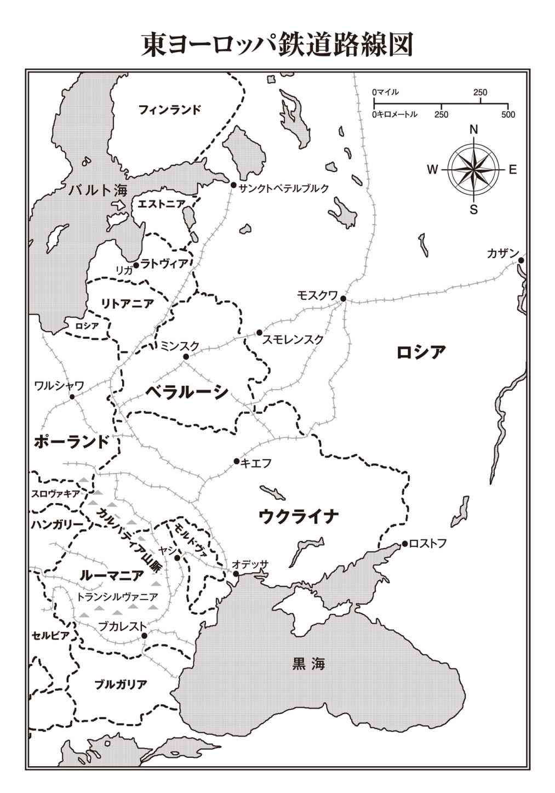

| ＴＨＥ ＨＵＮＴＥＲＳ ルーマニアの財宝列車を奪還せよ 上 (竹書房文庫) | |
| クリス・カズネスキ | |
| (2016) | |
この作品は縦書きでレイアウトされています。
また、ご覧になる機種により、表示の差異が認められることがあります。
一部の漢字が簡略字で表示されていることがあります。

ＴＨＥ ＨＵＮＴＥＲＳ
ルーマニアの財宝列車を奪還せよ 上
主な登場人物
〈ハンターズ〉
ジャック・コッブ .........リーダー。元海兵隊特殊部隊
ジョッシュ・マクナット .........武器担当。元海兵隊
サラ・エリス .........潜入担当。元ＣＩＡ
ヘクター・ガルシア .........コンピューター担当。元ＦＢＩ
ジャスミン・パク .........歴史・言語担当。新聞社勤務
ジャン＝マルク・パピノー .........アメリカの大富豪。ハンターズの金銭的支援者
アンドレイ・ドブレフ .........ロシアの元鉄道作業員
ヴィクトル・ボロフスキー .........ロシア警察の大佐
アンナ・ルシンコ .........ロシア警察の巡査部長
ジェイソン・クーンツ .........ＦＢＩの捜査官
ルディー・キャラハン .........ＦＢＩの捜査官
ウラジミール・コズロフ .........ロシアン・マフィア

謝辞
いつものように、まずは家族に感謝することで始めたい。長年にわたって、作家としておよび人間としての私に、多くを与えてくれた。こんなにも長い間、我慢してくれてありがとう。私の相手をするのはかなり面倒くさいに違いないことはよくわかっている。けれども、あなたたちの相手をするのも面倒くさいんだぞ！（たぶん、遺伝的な問題だろう）
次に、友人でもあるエージェントのスコット・ミラーに感謝したい。彼とチームを組む前、私は自費出版をしていて、車のトランクに積んだ本を自分で売って回っていた。それが今では、私の本は世界のどこにいても手に入る。私の成功があるのはひとえに彼のおかげだ。また、イギリスをはじめとする世界の多くの国々での出版権を手がけている、国際エージェントのクレア・ロバーツにも感謝をしなければならない。スコット、クレアをはじめとする、トライデント・メディアのスタッフがそばにいてくれることは、とても心強く感じる。
本書はシリーズの一作目に当たるだけでなく、ヘッドライン・パブリッシング・グループから出版される私の作品の一作目でもある。彼らの熱心な仕事ぶりは、私も安心して見ていることができた。とりわけ編集者のヴィッキー・メラーに対しては、数々の提案と揺るぎない支持を与えてくれたことに感謝したい。この小説に魂が宿ったのは彼女のおかげである。ジェーン・モルペス、マーティン・フレッチャー、フランキー・グレイ、アンナ・ボウェン、アンナ・ホガーティをはじめ、ヘッドライン／ハチェットの全スタッフにも感謝したい。
次は長年の友人のイアン・ハーパーの番だ。すべてを読み、再読し、再々読し、深夜の電話やメールに答えてくれたことに感謝したい。彼のアドバイスと専門知識には計り知れない価値がある。フリーの編集者を探しているのなら、私に連絡してほしい。彼の連絡先を教えたいと思う。
最後になったが、これまでに私の作品を読み、ほかの人たちに薦めてくれたすべての読者、図書館司書、書店員、批評家に感謝したい。小説家としての私にはまだまだできるだけ多くの助けが必要だ。皆さんの変わらぬ支援を今後もお願いしたい。
さて、これでだいたい終わったはずだ。
この先はお楽しみが待っている。
まずは椅子に座ってリラックスしてほしい。それでは、話を始めるとしよう......
プロローグ
一九一六年十二月十五日 金曜日
ルーマニア ヤシ（ブカレストの北三百九十三キロ）
近代以降で最大の強盗事件は、銀行で起きたのではない。武装した兵士の厳重な監視下にあった、深夜のとある鉄道駅で発生した。
驚くべきことに、それが強盗事件だと判明したのは、何年もたってからのことだった。
その頃には、盗まれた財宝は再び盗まれてしまっていた。
三階建てのアパートの二階にある小さな部屋で妻と暮らすベーラ・ドブレフは、建物から外に出た途端、凍 てつく寒さに包まれた。遅い時間のため、通りには人 気 がない。北東から吹きつける風が、悪臭を含んだプルト川の湿った空気を運んでくる。ドブレフは新品のウールのスカーフを顔の下半分にまで引き上げ、濃い口ひげを隠し、鼻柱まで覆った。妻からのこの少し気の早いクリスマスプレゼントが、ありがたく感じられる。冬本番の寒気だが、下水のにおいはその寒さよりも耐えがたい。夏には南からの風が吹くので、まだ我慢できるのだが。
夜勤に就くため外に足を踏み出した瞬間より、ドブレフは絶え間なく吹きつける風から目を守るためにうつむき加減で歩き続けた。三ブロック先にある広い駅の敷地までなら、前を見なくてもたどり着くことができる。街の誇りでもある宮殿風の駅舎が一八七〇年に開業して以来、ドブレフは四十年以上にわたってそこで勤務してきた。石畳の道に使われている石の一つ一つまで頭に入っている。荷馬車を引く馬がつまずいて欠けてしまった石や、作業員が背中に担いでいた荷物から落ちた斧 が当たって亀裂が入ってしまった石も、ちゃんと区別がつく。すべての石の位置が、しっかりと頭に入っている。
駅まであと一ブロックの地点に達した時、ドブレフはスカーフの下で笑みを浮かべた。上唇を動かすと、口ひげがこすれてくすぐったい。いつもこのあたりまで来ると、列車に油を差す時に使用する潤 滑 油の香りがかすかに漂う。大きな機関車の車体の下に潜り込み、車輪のハブに油を差すことが、ドブレフのここでの最初の仕事だった。潤滑油の香りを嗅ぐたびに、まだ若かった当時の思い出がよみがえってくる。いい時代だった。各地の街が次々と鉄道によって結ばれ、新たな世界が生まれるたびに、驚きをもたらしてくれた。そこには不安など存在していなかった。新たな年を迎えるたびに、希望と幸せが満ちあふれていた。そこには侵略軍の恐怖や不気味な戦争の影など存在していなかった。
ドブレフは手袋をはめた両手で、着古したコートの襟をしっかりと押さえた。繕 ったばかりの靴下のおかげでかかとは温かいが、つま先は寒さのせいでしびれるような感覚がする。ドブレフは足を速めたが、線路の方角から聞き慣れない音を耳にして、眉 間 にしわを寄せた。大きくて扱いにくい木箱のぶつかる音や、可動式クレーンが重機類をトレーラーに積み込む時のきしむような音、荷車を引く馬の蹄 の音には馴 染 みがある。けれども、こんなに多くの音を、こんなに多くの動きを、しかもこんなに遅い時間に聞いたことはなかった。ドブレフは頭の中で、駅長が支払わなければならない手当ての金額を素早く計算した──だが、いったい何のために？
ドブレフが顔を上げると、幌 をかけた軍用トラックがプラットホーム沿いに列を成して停車していた。それ自体は珍しい光景ではない。薄い灰色の軍服に身を包んだ兵士から成る部隊が、ヤシに集結しては前線へと送られていたからだ。夏の終わりには多くの兵士がブカレストから戻ってきた。だが、現在ブカレストはドイツ軍の占領下にある。その後も、戦場から兵士たちがひっきりなしにヤシへ戻ってきていた。発 疹 チフスの流行から逃れる大勢の避難民の姿もあった。ドブレフと妻は一人息子が国を離れて暮らしていることを寂しく思っていたが、ルーマニアが参戦して以降のこの数カ月間は、それでよかったのだと思えるようになっていた。近所の家族が悲しみに暮れている姿は、とても見るに耐えなかったからだ。
ドブレフは寒さに震えながらも、見上げるような高さの駅舎の正面にある、大聖堂と見紛うような入口に真っ直ぐ向かわなかった。好奇心を抑え切れなかったためだ。
ここにいる部隊はこれまで目にしてきた兵士たちとはまったく異なっていた。駐車したトラックの近くに並ぶ兵士たちは、いずれもまだ若く、通りの方を向き、銃剣の付いたライフルを胸の前で交差させて立っている。その先では、プラットホーム沿いに設置された笠付きの照明の光に、一編成の列車が照らされていた。車両がホームの両端から大きくはみ出すほどの長さだ。こんなに長い編成の列車は見たことがない。車両の上部には機関車から噴き出す蒸気が漂っていた。この列車はいつでも出発できる状態で待機している。冬期の──しかも、戦時中の石炭の価格を考えると、そのことがいちばんの驚きだった。
ドブレフは風下に当たる駅の西側に向かった。スカーフを下げ、涙のにじんだ目を袖口でぬぐう。全部で二十一両もの有 蓋 貨車が連なっていた。貨車の横のプラットホーム上には、数え切れないほどの木箱が何列にも積み上げられており、武装した兵士たちがその周囲で警戒に当たっている。けれども、この軍用列車のどこにも、青と黄色と赤のルーマニア国旗を確認できない。
間近にいた兵士がドブレフの方に近づいてきた。軍 鳩 通信兵の記章を付けている。これも異例のことだ。ルーマニアが参戦してから四カ月近くになるが、ドブレフは軍鳩通信兵が護衛任務に就いているのを初めて見た。彼らはもっと重要度の高い任務に就くのが常だ。
「何の用だ？」兵士がそっけない口調で問いかけた。頰は寒さで真っ赤になっている。まだ若い。ひげも生えないような年齢に見える。
「私はこの駅の助役です」ドブレフは答えた。「これから夜勤に就くところでして」
「だったら中に入れ」若い兵士が指示した。
「入ろうとしていたところなんですが」ドブレフは応じた。「しかし、ふと思ったのですよ──これほど長い編成の列車については何も予定を──」
「中に入るんだ、助役」兵士が強い口調で命令した。いらだった様子でライフルに手を触れると、銃剣が前を向く。
ドブレフは若い兵士からすぐには視線をそらさなかった。だが、手袋をはめた片手を上げて「わかった」と伝えると、もう一度だけ異様な光景を目に焼きつけてからその場を離れた。今の会話のやり取りこそが、この戦争の状況を雄弁に物語っている。どんな新聞記事よりも、はっきりと実情を伝えている。ルーマニア人の若者が年配の男性に対してあのようなぞんざいな言葉を使うほど、事態は切迫しているのだ。首都の若い連中の方が、まだ礼儀をわきまえていると言えるだろう。
この少年は神経が張り詰め、怯 えている。
ドブレフは駅舎の正面に歩いて戻った。軍用トラックのタイヤのトレッドがひどく傷んでいることに気づく。これもまた、状況が芳しくないことを如実に表している。
〈無駄な戦争を始めたものだ〉扉に近づきながらドブレフは思った。
オーストリア＝ハンガリー帝国からトランシルヴァニアを奪い取るために、ルーマニアはロシア、フランス、イギリスなどの連合国側に立って参戦した。だが、ドブレフが話をした人のほとんどは、この戦争は人間と資源の無駄だと考えていた。トランシルヴァニアの人口は、すでにルーマニア系の住民が大半を占めている。あの険しい山間部の所有者が誰であろうと、関係ないではないか。
ドブレフは不意に立ち止まった。トラックの傷んだタイヤの近くに、何かを見つけたからだ──金色の輝きが見える。ドブレフは近づき、それを拾い上げた。
一八六八年に発行された高価な二十レウ金貨だ。ドブレフは最初、あわてた乗客が硬貨を落としたのだろう思った。金持ちが列車を使って田舎の別荘まで日帰り旅行に出かけることは珍しくない。コートから手袋を急いで取り出そうとしたり、どこかにしまい忘れた切符を必死で探したり、バーで一杯やっていく時間があるか確かめるために懐中時計を見ようとしたりする際に、この種の落とし物をしがちだ。若い頃のドブレフは、乗客が落とした硬貨を拾うことで少ない給料を補っていた。フランスフランやトルコリラのほか、ロシアのルーブル銀貨を見つけたことも一度ある。それに対して自国の硬貨は、常に価値が上がり続けているように思えた外国の硬貨ほどありがたくなかった。
だが、ドブレフが金貨を見つけたのはこの時が初めてだった。
高級なプラムのブランデーをあおったかのような温かみを感じながら、ドブレフは体を起こし、穴の開いていないポケットに金貨をしまった。幸運に気が大きくなったドブレフは、さらに運試しをしてみようという気分になった。兵士たちから見えないような位置に立ち、トラック後部の幌をめくり、荷台の中をのぞき込む。だが、内部は空っぽだった。荷台の左右にベンチが置かれているだけだ。床には数本のバールと、曲がった釘が散らばっている。
〈積荷の箱はすでに開けられたというわけだ。だが、なぜだ？〉
〈中身を検査する通常の手続きなのか？ それとも、犯罪がらみの積荷だったのか？〉
駅舎に向かいながら、ドブレフはいくつもの可能性に考えを巡らせた。駅の東側に視線を向けると、蒸気機関車の姿が目に留まる。警備の厳重な積荷、その運搬を知らせるための軍鳩通信兵、予定にない深夜の貨物列車。これらはいったい何を意味するのだろうか？
〈まったくわけがわからないが、もしかすると──〉
ドブレフは立ち止まった。自分の考えに体が震える。
幸運を喜んでいた気持ちが瞬 く間に消えていく。さっき拾った金貨は、無数の木箱の中身のほんの一部にすぎないのだろう。莫 大 な量の金貨や財宝が、今まさに運び去られようとしている。愛する故国の資産が、国外に移されようとしているのだ。
広い待合室へ入った時に感じた寒気は、真冬の夜に駅までの短い道のりを歩いた時に感じた寒さよりも深く、ドブレフの骨の髄にまでしみわたっていった。
絶望の寒気がドブレフの全身を満たした。
１
現在
八月二十一日 火曜日
ニューヨーク ブルックリン
監視用のバンが一台、通りの左側に駐車している。前の日にも、その前の日にも、同じ場所に停まっていた。バンの存在はブライトンビーチのイースタンブロック界 隈 で二番目に公然の秘密だった。
最も公然の秘密なのは、ＦＢＩが監視対象としている人物の名前だ。
ウラジミール・コズロフはモスクワで一大犯罪帝国を築き上げた。その事業は、麻薬や武器から売春、密輸入に至るまで、ありとあらゆることに及ぶ。近頃ではサイバー犯罪が金になることも発見した。ただし、本人はめったにコンピューターを使用しない。これまでの活動を通じて、コズロフは巧みに訴追を免れてきた。ソヴィエト連邦崩壊後に制定された寛大な自由貿易法のおかげもあるが、それ以上に主だった高官への数百万ドルもの賄 賂 が大きく物を言い、コズロフは多くのロシア人から──密かに強奪、脅迫、搾 取 を繰り返してきた当のロシア人から、国民的英雄と見なされていた。
ただし、ＦＢＩの目にそうは映っていない。
ＦＢＩにとって、コズロフは重要参考人だった。
おそらく、ＦＢＩがニューヨークでいちばん重要視している人物だろう。
犯罪歴が「クリーン」なため、コズロフは合法な事業の拡大を目的としたアメリカ入国を認められ、その直後にブライトンビーチで最も大きな邸宅を購入した。ここはブルックリンの中でもウクライナ系の住民が多く居住しているため、「リトル・オデッサ」として知られている。さらに、コズロフは評判とコネを利用して、地元の「ブラトヴァ」を一つにまとめることに成功した。ロシア人たちは「ブラトヴァ」を「組合」程度の意味に解釈しているが、それ以外の人たちにとっては「マフィア」にほかならない。五年もたたないうちに、ブライトンビーチ・ブラトヴァはニューヨークで最も悪名高い組織に成長した。市内で最大の勢力を誇っているわけではない──その栄誉は今もなお、シチリア起源のコーザ・ノストラが握っている。だが、最も危険と見なされている組織がブライトンビーチ・ブラトヴァだった。
マスコミの間では「殺人バチ 」として知られている。
バンの車内ではもっとひどい呼び方をされていた。
「まったく」テイクアウトの容器から麺を口の中に押し込みながら、ジェイソン・クーンツ特別捜査官が切り出した。「こいつらは血も涙もないロシアのくそったれどもだ。アメリカ人の犯罪者とは考え方が違う。イタリア人とも違う。このアカの野郎たちは人種が別なんだな。三 合 会 と同じくらい厄介な相手だが、あれほどアジア風というわけでもない」
相棒のルディー・キャラハンはぬるくなったコーヒーを口から吐き出しそうになった。コンピューターの画面に目を向け、二人のマイクがどちらも声を拾っていないことを確認する。マイクの電源が入っていて声が送られていたら、クーンツの悪態と人種差別的な発言が、局のホストコンピューターに録音されていただろう。そうなれば、上司の目に留まって呼び出され、クーンツの懲罰ファイルに新たなページが加わるのは避けられない。
「やめてくれよ！」キャラハンは制止した。
「何をやめろって言うんだ？」クーンツが聞き返した。問題発言に気づいていないらしい。悪いことなどしていないと言うかのように、拌 麺 を勢いよくすする。ソースが車内に飛び散った。
「バンの中でそんなことを言うのはやめてくれ。局長が今の言葉を聞いたら、どんなことになるかわかっているのか？」
クーンツは肩をすくめた。「その通りだとほめてくれると思うけどな」
「そんなわけないじゃないか」キャラハンは語気を強めた。「停職処分を食らうぞ。捜査中に人種差別的な発言をしてはいけないことくらい、十分にわかっているはずじゃないか。裁判で君の発言は俺たちに不利な証拠として使われる。俺たちが偏見を抱きながら監視をしていたことになってしまうんだよ」
クーンツはあきれて首を左右に振った。相棒がボーイスカウトのように真面目すぎるからだ。「俺の言葉遣いが悪いって言うのか？ じゃあ、ダウンタウンで売春婦を張っていた麻薬捜査チームから聞いた話を教えてやろう。そいつらが言うには、チェコ人の売女 は誰でもやらせ──」
「ジェイソン！」キャラハンは相手の言葉を遮 った。「自分の言っていることを録音して聞き返してみろよ！ 君の発言はすべて人種差別的だよ！」
「人種差別的だって？ 俺がいつ人種差別をしたって言うんだ？ 目が吊り上がった連中の料理を、ちゃんと箸 を使って食べているんだぞ。人種差別主義者が箸を使って食べるわけないだろうが」
「うわあ......もうだめだ......何てことだ」キャラハンは呆 気 にとられながらつぶやいた。「完全に頭のおかしなやつと同じバンに乗り合わせてしまった。どうしてこんなやつのことを心配しているんだろう？」
「おまえには俺しか友達がいないからだろ」
「うるさい」
クーンツは心の中で大笑いした。相棒をからかうのは楽しくて仕方がない。今夜のように、大きな問題が起こるとは思えない長時間の張り込みの時はなおさらだ。二人の捜査官がここに派遣された目的は、アメリカの土を踏んだばかりのコズロフの手下たちを撮影することにある。権力と大金への期待を胸に入国した新入りたちだが、コズロフの腹心の部下が手がけないような危険な汚れ仕事をやらされるのがおちだ。こうした実行部隊は使い捨てなので入れ替わりも激しく、そのためＦＢＩは絶えず監視しながら照合作業を行なう必要に迫られている。ただし、都合のいいことに、そうした手下連中のほとんどは、コズロフの屋敷の周辺の家で暮らしている。手下たちの役目は、自警団の活動と似ている。もちろん、普通とは逆の形で、という意味だが。
彼らは警察の姿を認めると、コズロフに警告する。
最近では、その警告が一日二十四時間、ひっきりなしに続いている。
地元の要請を受けたニューヨーク市警六十分署との協力協定の一環として、ＦＢＩはブライトンビーチでの監視活動を行なっていた。コミュニティーリーダーたちはリトル・オデッサの悪評と闘おうとしている。金をポケットに詰め込んだ観光客が娯楽を求めてこのあたりのビーチに押しかける夏の間は、その努力が特に必要だ。西のコニーアイランド、東のマンハッタンビーチに挟まれたブライトンビーチが観光客を集めようと思ったら、ほかよりも頑張らなければならない。地元の人たちや観光客に対して、皆さんが苦労して稼いだお金をビールやお土産や綿あめなどに使う前に、外国人マフィアに強奪される心配はありませんということを、納得させる必要があるからだ。
六十分署がパトカーや徒歩で巡回する役割を担う一方で、ＦＢＩはこの特別な機会に乗じて最新鋭の監視バンを一台、コズロフの邸宅から五十メートルの距離に停めることにした。コズロフを萎 縮 させるのが目的だ。当初、コズロフの腕利きの弁護士が、これはいやがらせ行為に当たるとして裁判所に申し立てを行なった。コズロフ氏は「尊敬を受けるべき」実業家であって、「迷惑を受けるべき」犯罪者ではない、というのが向こうの主張だった。それに対してＦＢＩ側の弁護士は、監視対象はコズロフ個人ではなく家だと反論し、連邦判事はその主張を認めてコズロフ側の申し立てを却下した。ＦＢＩ側の主張が法的に認められるかどうかは微妙なところだったが、判事はその違いを認識してくれた。
そのため、監視バンは移動することなく、同じ場所に停まっている。
そのため、クーンツは退屈の限界に達していた。
一人きりになる時間を作るためのチャンスだと思ったクーンツは、相棒の神経を逆なですることに全力を注いだ。「ちょっと聞きたいんだが、さっきの俺の発言のどこがまずかったのかな？」
「全部だよ！」キャラハンは説明を始めた。「そもそも、彼の手下の半分はロシア人じゃない。ウクライナ人だよ。チェチェン出身者もいる。ジョージア人もいる。しかも、三合会ほどアジア風でないというのはどういう意味だよ？ ロシアの領土の大部分はアジアにあるんだから」
「はいはい」
「『はいはい』はやめてくれ！ 子供たちや別れた妻からさんざん聞かされている言葉だ。君までそんな言い方をするのか？」
クーンツは「こいつは驚いた」という表情を浮かべ、相棒のいらいらを煽 った。「わかったよ。だけど、おまえは壊れたレコードみたいだな。コズロフの手下がロシア人ばかりでないことくらいは俺も知っているよ。だけど、やつらを『多国籍から成るくそったれども』と呼ぶのは、どうもしっくりこないんだよな。おまえが民族を侮蔑するような発言に敏感なことは承知しているよ。アイルランド系だから仕方ないよな」
「もう限界だ！ いい加減にしてくれ！」キャラハンは首にかけていたヘッドホンを外し、後部座席の扉を勢いよく開けた。「ちょっと外の空気を吸ってくる」
クーンツは勝利の笑みを浮かべた。「外の空気だって？ タバコをくわえていたら外も中もあんまり変わらないんじゃないのか？」
キャラハンは力任せに扉を閉めた。相棒がわざと自分を怒らせようとしていることは百も承知だが、だからと言って我慢ができるわけでもない。
逆に怒りが募ってくる。
〈一人の時間が欲しいのなら、そう言えばいいじゃないか。自分の希望をかなえるために、どうしてこんな子供じみた手を使うんだろう？〉
自分でも驚くほどいらだっていたキャラハンは、少し歩くことにした。
しばらく散歩でもすれば、気が紛れるだろうと思ったからだ。
そのせいで命が危険にさらされることになろうとは、キャラハンは知る由もなかった。
２
侵入者は建物の上空に苦もなく浮かんでいた。その姿は夜空に溶け込んでいて、地上からは見えない。百メートル以上離れた地点に固定されたロープとつながった凧 のような装備とともに、目標の真上で静止している。海から吹く風を受けてロープがぴんと張った状態のまま、侵入者は眼下の屋根に向かって優雅に降下していく。
女は物音一つ立てずに着地した。
手首をさっとひねって凧をハーネスから外すと、女は装備を空中に放った。巨大な鳥を空に逃がすかのような動作だ。女の体重から解き放たれた凧は、すぐに空に舞い上がった。女が遠ざかる装備とロープを目で追う。誰にも気づかれることなく荷物を送り届けるという役目を終えた凧は、やがて視界から消えた。
だが、女の役目はまだ終わっていない。
この先、いくつもの難関が待ち構えている。
海岸に近いコズロフの邸宅の上に着地できればよかったのだが、屋根の傾斜が急なため、その作戦は断念した。その代わりに選んだのが、すぐ隣にある平らな屋根だ。この三階建てのタウンハウスは、コズロフの護衛や新入りの手下たちの宿泊所としての役割を果たしている。このような任務の場合、護衛が詰めている場所を選ぶのは理想的とは言えないが、ほかに選択肢があるわけではなかった。歩いて邸宅に近づいたりしたら、コズロフの手下だけでなく、監視バンの中にいるＦＢＩにも見つかってしまう。
そんなリスクを冒すわけにはいかない。
無事にここから脱出するためには、その両方を避ける必要がある。
今夜は三日月のため、建物の屋根を素早く横切る女の姿はほとんど見えない。全身を包むマットブラックのボディースーツは光を吸収するので、月明かりが反射することもない。黒の靴、黒の手袋、黒のマスクと、そのほかの装備も完璧を期している。マスクが隠しているのは口だけではない。目も、鼻も、耳も、顔全体が伸縮性のある最先端の黒いフードの下に隠れている。フードを通して呼吸をしたり、聞いたり、見たりすることはできるが、相手がフードの下の顔を確認することはできない。
フードをかぶっているこっちが怖くなるくらいの性能だ。
屋根の端で立ち止まると、女はこれから侵入を試みようとしている建物を観察した。コロニアル様式風の邸宅で、壁には最高級の煉 瓦 が使用されており、曲線と直線の両方を巧みに取り入れている。石灰岩がアクセントを添え、二色の化粧漆 喰 も施されていた。建物の裏手にはバルコニーも確認できる。美しい建物だが、派手な印象は受けない。どこにでもありそうな建物に見えるように設計されているが、工夫を凝らした建築上の趣向は、わかる人の目にはわかるようになっている。
もちろん、女は「わかる人」だった。
事前の調査は徹底的に行なっている。
二軒の建物の間の隙間を渡る前に、女はポケットに手を入れ、ぶよぶよした塊を数個、取り出した。壁に投げるとくっつく子供のおもちゃに似ている。塊は建物の煉瓦と同じ色合いをしていた。チューインガムを丸めて黒板に投げつけた時のように、この塊も当たったところに貼り付く。塊の中には強力な送信機が入っていて、間に煉瓦の壁があったとしても、内部の音を拾うことができる。
女の秘密兵器の中でも最新の小道具だ。
追い風を受けながら、女はぶよぶよした塊を二軒の建物の間に広がる芝生の向こう側に投げた。塊がコズロフの邸宅の側面に貼り付く。ぶつかった時に立てたほんの小さな音は、波音でかき消される。一分もしないうちに、建物の外壁にはいくつもの装置が貼り付いていた。目で確認することはほとんど不可能だ。
盗聴器から女のイヤホンに、すぐさまデータが送られてくる。話し声に耳を傾け、その内容を確認しながら、女は眼下の暗がりに目を凝らした。行動を起こすのは、危険がないと確信できてからだ。不確かな状態で動けば、その先には死が待っている。今のところ、人生は十分に楽しいから、そんな危険を冒すわけにはいかない。
一分間が経過した。さらに一分間。
さらに三十秒間が過ぎた後、女はもういいだろうと判断した。
侵入を開始する時が来た。
女はボディースーツのズボンのポケットに手を入れ、短いバトンを取り出した。このバトンもマットブラックに塗られている。女はバトンの両端を握り、引き伸ばした。見た目からは想像もできないほど、バトンの長さが伸びていく。五十センチ、一メートル五十センチ、ついには三メートルの長さに達する。続いて女は両手でバトンの中央付近を握り直し、小さな円を描くように激しく振り始めた。その動きに合わせて、両端がさらに伸びていく。長くなると同時に、ありえないほどバトンが細くなる──しかも、両端がたわむことはなく、一直線のままだ。ついには六メートルの長さにまで達した。
女が必要としている長さだ。
女はバトンを二軒の家の間に差し渡した。長く伸びたバトンは、女の目には空中に黒い裂け目ができたかのように映る。今にもその隙間から悪魔が姿を現しそうだ。だが、たとえ家の中から誰かが眺めていたとしても、そこにあると意識して見なければ、バトンの存在には気がつかないだろう。
次に、伸ばしたバトンの向こう側の先端を、コズロフの邸宅の裏手にあるバルコニーに向ける。先端を二本の柵の間に差し込み、簡単にずれないように固定する。さらに、こちら側の先端を屋根の端に置き、木製の屋根に長い又釘を静かに打ち込んだ。その作業がすむと、バトンのこちら側の先端を、環状に固定された釘に挿し込む。バトンがずれない程度に深く、ただし向こう側に渡り終えたら引き抜くことができる程度に浅く、加減を調節しなければならない。
コズロフの邸宅のバルコニーは、女のいる位置よりも低く、二十度の傾斜がある。申し分のない角度だ。女は深呼吸をし、建物の間に人影がないことを確認してから、屋根の端にぶら下がった。ためらうことなく両手でバトンをつかみ、まるで流れる水のごとく、二軒の建物の間をするすると滑っていく。
五秒もしないうちに、女は一方の家からもう一方の家まで、月を横切る雲のように音もなく移動していた。手すりを乗り越え、コズロフの邸宅の景色のいいバルコニーに侵入する。女はバトンを回収し、元の長さに縮め、再びポケットにしまった。
その直後、女の手は邸宅の裏手の部屋に通じる観音開きのガラス扉に触れていた。カーテンが閉まっているため、内部を見ることはできない。手袋をはめた指先が、音もなく素早く動く。扉に対して、大丈夫だと安心させているかのような手つきだ。そのまま指先を動かし続けるうちに、カチッという音が鳴る。
女の顔に大きな笑みが広がる。
だが、フードの外からはその表情をうかがうことはできない。
手首をひねりながら体の向きを変え、女はブルックリンで最も高価な、最も警備の厳重な建物に侵入した。
３
女は建物内に入った途端、その場に立ちすくんだ。
驚いたのは、警戒心からでも恐怖心からでもない。建物の外観と豪華な内装とがまったく釣り合わなかったからだ。外から見ると、ブルックリンの素敵な通り沿いに建つ、かなり大きなコロニアル様式の邸宅としか思えない。しかし、その内部はインドのタージ・マハルやサンクトペテルブルクの冬宮殿やパリのヴェルサイユ宮殿にも引けを取らない。
富と贅 沢 のにおいがぷんぷんする。
女が侵入したのは大きな主寝室だった。アリババが発見した盗賊たちの洞窟のようだ。真っ白な壁と木の床がどこまでも続いているかのように見える。コズロフと手下たちがバスケットボールを楽しめるだけの広さと高さがある。大聖堂を思わせる天井は両側が傾斜していて、明かり取り用の窓がいくつも備え付けられている。すべての明かり取りには電動式のブラインドが設置してあった。マホガニー材の手彫りのフレームを備えたキングサイズのベッドが、壁沿いに置かれている。別の壁の前には、いかにも高級そうな机と化粧だんすがある。壁面に使用されているのは精巧なパネル素材だ。
内装に見とれていた女の耳の中で、警告音が響く。
誰かがここに近づいている。
じっと観察していた女はすぐに行動を起こし、音を立てることなく一瞬で部屋を横切り、バスルームに逃げ込んだ。それと同時に、寝室の扉が開く。女は冷静さを保ったまま、浴槽の陰にうずくまって身を隠した。この場所からなら、バスルームの大きな鏡を利用することができる。
女は寝室に入ってくる二人の男を鏡で確認した。二人とも屈強な体格で、地味な黒のスーツ姿だ。男たちは電気をつけ、寝室を横切り、ついさっきまで女がいたバルコニーの扉に向かっていく。だが、女の存在には気づいていない。
「絵画のオークションの準備はできているのか？」一人がロシア語で訊ねた。
もう一人の男が窓際に置かれた机の鍵を開けた。「あ あ 」
「全部か？」最初の男が確認した。
もう一人がうなずきながら、引き出しから鍵を取り出した。
二人の男は急ぎ足で寝室の扉の方に戻っていく。何かにせかされているかのような動きだ。二人は電気を消し、寝室から出て、扉を閉めた。
廊下から聞こえる話し声が次第に小さくなる。女は安 堵 のため息を漏らした。あの二人がこのまま寝室から遠ざかってくれれば、外の廊下を使うことができる。さもなければ、再びバルコニーから外に出て、別の侵入経路を探さなければならないところだった。女は慎重に寝室へと戻り、扉の手前で聞き耳を立てた。
物音一つ聞こえない。
女は笑みを浮かべながら扉を少しだけ開いた。
驚くべき光景が目に飛び込んでくる。
まるで美術館の展示室にいるかのようだ。円形の通路が回廊のように屋内の中庭を取り囲んでいて、装飾を施した翡 翠 色の手すりが設置されている。上に目を向けると、ダイヤモンドの形をした明かり取りがある。その中央からは手製の豪華なクリスタルのシャンデリアが吊るされていた。ありがたいことに、廊下は灯りで煌 々 と照らされているわけではない。壁から奥まった位置にある照明が廊下にやわらかい光を投げかけていたが、一見しただけでは壁そのものが光を発しているかのように見える。
女は耳を澄ましたが、二人の男が立ち去ってからは何も聞こえない。話し声も、ラジオからの音楽も、テレビの音も。ある意味、静かな方が女の身は安全だった。近づいてくる人間がいれば、すぐにわかるからだ。その一方で、任務の遂行は難しくなった。下手に物音を立てたら、この静かな家じゅうに響き渡ってしまう。
影のように動きながら、女は部屋の外に足を踏み出し、扉を後ろ手に閉めると、廊下を走った。隣の部屋の、鍵がかかった扉の前で立ち止まる。十秒後、鍵をこじ開けた女は書庫の中に立ち、手作りの書棚やマホガニー材の床を鑑賞していた。あまりにも美しく、あまりにも贅沢なため、これからしなければならないことを思うと罪悪感を覚える。
女は音を立てないように注意しながら、手際よく室内を引っかき回した。
すべての本のすべてのページを、すべての棚を、すべての引き出しを、地図を、絵画を、椅子を、テーブルの上を、隅から隅まで探す。ヘリンボーンの床板も調べる。秘密の小部屋や金庫があるのではないかと、壁もくまなく探す。棚や家具によじ登り、天井や照明器具も調べた。
しかし、何も発見することはできなかった。この書庫ではない。
くじけることなく、女は書庫を出て階段に向かった。壁が真っ白なため、黒ずくめの女の姿はまるでネオンサインのように目立つ。移動距離はそれほど長くないが、一階に到達するまでの間は丸見えになってしまう。
女は自信に満ちた足取りで静かに階段を下りた。
立ち止まることなく、疑うことなく。
危険かもしれないなどと考えることなく。
以前の仕事では何年間も現場での任務に就いていた。その時の方が危険度は今よりも高かった。当時、女はアメリカ合衆国のために特技を使っていた。今は個人で活動している。その方が自分の性 に合っている。
女は無事に階段の下に達した。左右に目を配り、自分だけしかいないことを確認する。ほかに人影はない。女は真っ直ぐ前に走った。
一階部分の床には大理石が敷かれている。片側には広々としたリビングルームが、もう片方の側には同じような広さの食堂がある。二つの部屋の間にはアーチ状の天井があり、優雅な円柱が天井を支え、伝統的な幅木が趣 を添えている。二階の廊下の上にあったのと同じ大きさのクリスタルのシャンデリアが、それぞれの部屋の中央に吊るされていた。どちらも電気はついていないが、弱い光を浴びてダイヤモンドのようにきらめいている。
「犯罪は割に合わない」なんて言ったのはどこの誰だ？
女は両方の部屋で秘密の金庫や隠し扉を探したが、その類 いは見当たらなかった。まあ仕方がない。ぐずぐずしていたら誰かに見つかってしまう可能性がある。コズロフを守るために雇われた人間に見つかるか、床のワックスがけに来た清掃業者に見つかるかで、だいぶ状況は違ってくるが。
女はそのまま先に進んだ。キッチンがある。予想通り、かなり広いキッチンだ。しかも、レンジやシンクから皿洗い機、冷蔵庫に至るまで、何もかもが二つある。まるで大洪水の前にノアが発注したかのようだ。だが、女はすべてのキッチン設備が二つずつ揃っている本当の理由を知っていた。コズロフが大勢の手下を食わせているからにほかならない。
理由は定かではないが、ロシアン・マフィアは子供を甘やかす母親のごとく、手下の面倒を見る。家を提供し、食事を提供し、贈り物を与える。それと引き換えに、揺るぎない忠誠と最大限の敬意を期待する。裏切りの気配が漂っただけで、文字通りの意味で首を切られる。裏切り者の首だけではない。その家族の首も、ペットの首までも。裏切り者の仲間をフェイスブックの「友達リスト」で調べ、全員を殺害した例もあるという噂だ。
ロシアのブラトヴァは効率的に物事を処理する。
女はそんな考えを頭の中から振り払いながら、キッチンにある唯一の扉を開けた。コンクリート製の階段が、真っ暗な地下に通じている。いくつかの選択肢を秤 にかけてから、女は階段に足を踏み入れ、扉を閉めた。暗闇に目を凝らす。
何も見えない。まったく何も見えない。
女は舌打ちをした。
顔面を覆うフードには暗視装置が組み込まれているものの、それが機能するためにはいくばくかの光がなければならない。この地下室にはまったく光がない。地下の様子を確認しようと思ったら、大きなリスクを冒さなければならない。気が進まないながらも、女はポケットから小さな懐中電灯を取り出した。スイッチを入れ、光の後を追いながら階段を下りる。
この地下室も女には意外だった。コズロフがこんなに海岸に近いのに地下室を造ったことからして驚きなのだが、それにも増して驚いたのはその質素な造りだ。
上の階で目にしたものとは、何から何まで対照的だった。
赤い床はコンクリートにペンキを塗っただけだ。壁と天井にはプラスチックと断熱材が貼られている。おそらく熱よりも音が漏れないようにするためだろう。経営破綻した電話セールス会社の作業部屋はこんな感じかもしれない。邸宅内でビジネスが行なわれるのは、この地下室がいちばん多いのではないだろうか、女はそんな気がした。ペンチやバットを用い、悲鳴をあげる顧客を相手にするビジネスだ。
女は地下室の奥の壁の中央にある灰色をした金属製の扉に目を留めた。その隣では、かなり本格的な冷却装置がカタカタと音を発している。事前に邸宅の設計図や作業指示書に目を通していた女は、地下室の奥に別の部屋があるに違いないと踏んでいた。
扉を見た瞬間、女はそれが部屋ではないことを悟った。
その先にあるのは大型の食肉貯蔵庫だ。
４
食肉用の冷凍庫だと気づいた理由は、光沢のある鋼鉄製の巨大な扉ではない。不釣り合いなまでに大きな取っ手が付いていたからだ。
女はあらゆる種類の扉に対応できるように準備をしていた。最も簡単なタイプで、最も見つかりにくいような場所にある金庫であっても、何らかのロックで守られている。金庫の代表格でもある銀行やカジノの金庫には、アナログ式のピンタンブラー錠から、掌 紋 や網膜をスキャンする次世代の生体認証機能に至るまで、ありとあらゆる種類のロックが採用されている。女は発汗作用や血圧をモニターするシステムを備えたロックも見たことがあった。金庫にアクセスしようとする人間が動揺していることを検知したら、たとえ正しい暗証番号が入力されたとしても、ロックが解除されることはない。
だが、ありがたいことに、この扉は極めて原始的だった。
単に取っ手を引っ張るだけで開いた。
冷凍庫の中をのぞき込むと、冷気が顔に吹きつけてくる。壁面に沿ってスチール製のラックが設置され、冷凍した野菜の入った容器のほか、調理済みのパスタやデザートなど、スーパーで買ったと思われる食品が並んでいる。部屋の中央は肉を切るための作業スペースで、大きなステンレス製のテーブルのほか、様々な種類ののこぎり、肉切り包丁、大型ナイフなどがある。天井からはテーブルを挟むように、肉の塊がいくつも吊るされている。牛の半身、ブタ丸ごと一匹、ヒツジの厚切り肉のほか、ニワトリ、ウサギ、カモなどが一列になってホイストクレーンから吊るされている様は、肉のカーテンを連想させる。
女が後ろ手に冷凍庫の扉を閉めると、コンプレッサーがため息をつくかのような音を発した。女の体温で温度が上昇した分を相 殺 するために、通風孔から冷気が吐き出される。
女は寒さで身震いした。吐く息が白くなる。
様々な機能が備わっているにもかかわらず、女の着ているボディースーツは寒さを防ぐにはほとんど役に立たない。だが、女が最も気になっていたのは、凍 えるような温度のことではなかった。それよりも問題なのは、この冷凍庫の大きさだ。確かに広い冷凍庫ではあるが、女が事前の情報から予想していたよりはるかに狭い。邸宅の地下の三分の一の面積を占めているはずなのに、この冷凍庫の広さはそれにはまったく及ばない。設計図が間違っていたか、冷凍庫には見た目以上の何かがあるか、どちらかだ。
五分後、女はその答えを発見した。
壁が氷で覆われているため、冷凍庫の奥にあるもう一つの扉が見えなくなっていたのだ。だが、扉の前にあるラックに蝶 番 がついており、手前に引き開けられるような構造になっていたため、女は扉の存在に気づいた。ラックの上の冷凍野菜をどかすと、奥の壁の金属製の表面に小さなスロットがある。これはおしゃれなホテルで使用されているカードリーダーだ。
女はまったくひるむことなく、いくつもあるポケットの一つから薄い機器を取り出した。カバーを開き、機器をカードリーダーに挿し込む。機器はスロットにぴったりとはまった。小さな画面上にアクセスコードが流れるように表示される。四つ目の数字を突き止めた後もマイクロコンピューターの処理が終わらないため、女は思わず目を見張った。銀行のＡＴＭの暗証番号は四桁までしかない。それなのに五桁目以降まで要求されるとは、ずいぶんと厳重なことだ。機器が最後の十桁目の暗証番号を突き止め終えた頃には、女は単なる好奇心以上のものを感じていた。
〈ここにはいったい何が隠されているの？ モーセの契約の箱？〉
カチッというかすかな音とともに扉が開いた。女は扉の端を指でつかみ、手前側に引き開けた。これだけ厳重に警備されているからには、それなりの価値のあるものが保管されているのだろう。札束の山か、それとも大量のコカインか？
だが、女の目に見えたのは一人の大男だけだった。
身長二メートル十センチ、体重百八十キロはあろうかというロシア人の護衛が、戸口をふさぐように──いや、戸口を完全にふさいで立っていた。忍者のような女を目の前にして──正確には、胸の前にして、大男はパニックを起こし、拳銃に手を伸ばした。そのまま女の体に両手を回し、きつく抱き締めていたら、数秒のうちに息の根を止めることができたかもしれないのに。
その判断ミスを、護衛は後悔することになる。
護衛が拳銃を抜いた瞬間、女は槍 投 げをするかのような動きで右手を男の喉に目がけて突き出した。これは「ナックルパンチ」という殴り方で、ギャングの間では「ベアクロー」、格闘技の世界では「パンサーフィスト」と呼ばれている。親指をしっかりと人差し指にくっつけ、手のひらを使わずに、握った四本の指でかたい殴打面を作る。通常のパンチでは相手の顎 の下に叩き込むことは難しいが、このやり方ならば可能だ。
背の高い相手に対してこれ以上の効果的な殴り方はない。
女の強烈で正確なパンチは、護衛の気管をつぶし、声帯に損傷を与えたため、相手は一時的に声を出せなくなった。それよりも重要なのは、パンチの衝撃と痛みのショックで、護衛が拳銃を離したことだ。手から落ちた拳銃は秘密の部屋の奥に滑っていく。すぐに拾えるような距離ではない。
だが、女の攻撃は護衛をいらだたせただけだった。
激しい怒りに駆られて、大男は背中を丸めて女に向かって突進してきた。女は作業用のステンレスのテーブルに向かって後ずさりした。後ろにバランスを崩しかけながらも、肩越しに振り返る。あの巨漢に体当たりされてテーブルとの間に挟まれたら、おそらく一発で背骨を砕かれてしまうだろう。そのため、女は床にしゃがみ込み、大男の激しい蹴りをかわした。床の上を滑るように移動して位置を変え、再び立ち上がる。テーブルを挟んで真向かいにいる大柄な護衛をにらみながら、女は相手の次の動きを待った。
待ち時間は長くなかった。
ロシア人の護衛はテーブルの上に置かれていた大型のナイフを握った。さらに、もう片方の手でテーブルの端をつかむ。軽く腕を一振りしただけで、護衛は重いステンレス製のテーブルを部屋の隅にはじき飛ばした。あのテーブルをここに運び込む時は四人がかりで作業をする必要があったはずだが、この化け物はハエを追い払うかのような手つきでいとも簡単に放り投げてしまった。
護衛は床を踏みしめながら近づいてきた。目が怒りで血走っている。大男はナイフを大きく振り回した。そのはずみでバランスを崩しかけたが、何とか踏みとどまる。護衛は再び攻撃を仕掛けた。今度もまた、体勢を立て直すまでに一瞬の間がある。動きは鈍いものの、あの一撃を食らったらおしまいだ。怒りと怪力の込められた攻撃をまともに受けたら、一振りで首を切り落とされてしまうだろう。
相手の三度目の攻撃をかわしてから、女は反撃に転じた。ナイフが空を切った直後、前に踏み込み、下腹部に強烈なジャブをお見舞いする。だが、護衛は表情一つ変えない。そのため、女は作戦を変更し、今度は相手の顔面に攻撃を仕掛けた。鼻柱を狙ったパンチが、少しずれて大男の眼 窩 に命中する。まるでコンクリートの壁を殴ったかのような痛みが、女の拳 に走った。護衛の目が瞬く間に腫 れてふさがる。眉の下の大きな傷口からあふれた血が、男の頰を滴り落ちる。だが、リング上のボクサーのように、男は流れる血をまったく意に介していない。
護衛が再びナイフを振り回した。女は今度は攻撃を受け止めた。腕の勢いを完全に止められないことは承知している。しかし、相手の手首をしっかりとブロックすることで、武器を奪うことには成功した。衝撃で男の手からナイフが離れ、部屋の隅に飛んでいく。ところが、護衛はナイフを失ってもかまわず腕を振り回し続け、女の脇腹に拳を叩き込んだ。パンチを受けた女の体が、ナイフとは反対の方向に吹き飛ばされる。
護衛はその隙に隠し部屋まで戻った。床に目をやると、探し物が見つかる。護衛は拳銃を拾い上げた。
〈そろそろ片をつけてやる〉
だが、再び冷凍庫に通じる戸口に立った護衛は困惑した。強烈なパンチを食らったあの女が冷凍庫の隅にうずくまり、血を吐いているだろうと予期していた。ところが、女はうずくまっていなかった。そればかりか、冷凍庫の中のどこにも姿が見えない。護衛は調べるため再び冷凍庫に足を踏み入れた。
護衛はまったく気づいていなかったが、女は相手が探し物をしている間に冷凍庫を横切り、隣の部屋との扉の陰に身を隠していた。護衛が完全に冷凍庫の中に戻ったのを確認してから、女は勢いよく扉を閉めた。隠し部屋からの明かりが遮 断 され、冷凍庫内が完全な暗闇に包まれる。
真っ暗な中、二人は音に頼るしかなくなった。だが、聞こえてくるのは自分の激しい息遣いだけだ。大男は拳銃を扉の方に向けて発砲した。女の悲鳴が聞こえないかと息を殺す。だが、室内は静まり返っている。
護衛は再び発砲した......もう一度、引き金を引く......さらにもう一度。
そのたびに、銃口の向きを変える。
何度撃っても、女に当たらない。
一方、マットブラックのボディースーツを着込んだ女は、天井から吊るされた肉の塊の間に身を隠していた。護衛の拳銃の銃口から火花が飛び散るたびに、相手との距離を詰めていく。距離が一メートルを切った時、女は攻撃を仕掛けた。
女は護衛の膝の裏を思い切り蹴った。足を払われた護衛が床にひっくり返ると同時に、天井を目がけてジャンプする。天井から吊るされた牛肉の塊にしがみつくと、女は肉切り包丁でホイストクレーンのナイロン製のロープを切断した。女の体重と食用牛の重さを合計した重量が、護衛の体を直撃する。衝撃をまともに受けた護衛の股関節は、陶磁器のように粉々に粉砕された。
女は立ち上がり、懐中電灯で床を照らした。護衛の表情から、折れた股関節の痛みが耐えがたいものであるのは一目瞭然だ。丸々とした頰が涙で濡れている。
女は護衛の苦痛を和らげるための格好の道具を持ち合わせていた。
出かける時は忘れずに持ち歩いているナックルダスターを装着する。これを使って男を倒す時に、二発以上のパンチが必要だった経験はない。女は腕を後ろに引き、大男の顎に強烈なフックをお見舞いした。
大きな赤ん坊はすぐさま眠りに就いた。
それでは、この護衛が守っていたものを見せてもらうとしよう。
５
女はゆっくりと扉を開いた。
真っ暗な冷凍庫とは対照的に、秘密の部屋はやわらかく暖かい光で照らされている。見た目も受ける印象も、窓のない大きなオフィスのようだ。室内には机、コンピューター、固定電話が備わっている。いかにもロシア風のカレンダー──毛皮の帽子だけをかぶった女性のヌード写真のカレンダーが、扉のこちら側にかかっていた。だが、女の目を引いたのは、左右と向かい側の壁沿いに置かれた骨 董 品の陳列ケースだった。
どうやらありとあらゆる文化の作品が揃っているらしい。部族の仮面も、東洋の花瓶も、ローマ時代の武器もある。精巧な模様入りのガラス玉もあれば、カットされていない宝石もある。世界で最も貴重な本の一つとされるグーテンベルク聖書もある。聖書が収められたガラスケースの下にあるのは、ファベルジェのイースターエッグが詰まった箱だ。
左手に目を向けると、部屋の奥に絵画用の収納ケースがある。女は足早にケースに近づき、ふたをこじ開けた。
中には何枚もの絵画がある。
いずれもはるか昔に「紛失した」作品ばかりだ。
ラファエロの一五一三年の作品『若い男の肖像』は、第二次世界大戦中にナチによって略奪された。レオナルド・ダ・ヴィンチが一五〇五年に作成した『アンギアーリの戦い』は、しばしば「失われたレオナルド」の名で呼ばれている。ティツィアーノが一五二三年に描いた『アルフォンソ一世・デステ像』は、マドリードのアルカサル宮殿に所蔵されていたが、十八世紀に行方不明になった。レンブラントの一六三三年の作品『ガリラヤの海の嵐』は、一九九〇年にイザベラ・スチュワート・ガードナー美術館から盗まれたが、これはアメリカ史上最大の美術品盗難事件として知られている。
いずれ劣らぬ名作ばかりだ。それらがケースに入ったまま、床の上に置かれている。
しかも、今なら盗み放題だ。
けれども、女は傑作を無視しなければならなかった。
絵画の間を探りながら、女は在 り処 を突き止めるように指示されていたものを発見した。小さなフレームに収められたステンドグラスの作品だ。
マルク・シャガールの最も有名なステンドグラス作品が、エルサレムにあるヘブライ大学ハダサー医療センターの窓であることに異論はないだろう。しかし、その大規模なプロジェクトに取りかかるかなり以前に、シャガールはそれぞれの窓のミニチュア版を製作していた。これらの「試作品」および完成した大作は、イスラエルの十二部族を描いており、一枚の作品が一つの部族を表している。ポケットから写真を取り出した女は、写真の中の作品と目の前にある十二枚の作品のうちの七番目の作品とを見比べた。
「きれいだわ」女はつぶやいた。
次に、女は作品を床に叩きつけて粉々に砕いた。
二枚の色付きのガラスに挟んでフレームの中に隠してあったのは、一枚の紙だ。女はそれ以上傷めないように細心の注意を払いながら、乾燥して破れかけた紙を取り出した。中身を読むことすらせずに、伸縮性があって決して破れない薄い膜状の保護シートで紙を包み、ボディースーツの背中側に隠したポーチの中にしまう。
女は腕時計を確認した。
一、二分の余裕はありそうだ。
女は急いで小さな机に移動し、コンピューターを調べた。マウスに手を触れると、モニターの電源が入る。女は外付けのポータブル・ハードディスクをコンピューターの側面のポートに接続し、コンピューター内のハードディスクのデータをすべてコピーした。コズロフは世界各地に美術品を保管している。女はその供給元を突き止めたいと思っていた。機会を改めて、今度は絵画を手に入れるために再びここを訪れるのも悪くない。
戦利品に満足すると、女は冷凍庫に戻った。だが、その途端に顔から笑みが消える。さっき倒した護衛の姿が、床の上から消えていたからだ。冷凍庫内を見回すと、入口側の扉が開いている。何が起きてもいいように身構えながら、女は冷凍庫の中から地下室へと出た。
鋼鉄製の大型冷蔵庫の外に出た瞬間、イヤホンの接続が復活した。イヤホンを通して聞こえてくる相手の声は、ただならぬ事態の発生をうかがわせる。
「サラ、僕の声が聞こえる？」相手は大声でわめいている。「聞こえているなら、すぐにそこから脱出して。繰り返す、急いでそこから逃げて！」
「落ち着きなさいよ、ヘクター。何が起きたの？」
「よくわからない。でも、大変な事態になっている。一分くらい前に、全員が動き始めた。その周辺の建物から護衛たちがいっせいに出てきて、君の方に向かっているんだよ！」
＊ ＊ ＊
ヘクター・ガルシアはこの仕事のために設置した何台ものコンピューター画面を凝視していた。現場から三千五百キロ離れた地点にいながらも、ガルシアはサラがブルックリンの邸宅に着地してから、必要な情報を提供し続けている。
彼の情報には計り知れない価値がある。
比較的簡単にハッキングに成功したＦＢＩの監視バンからのデータだけでなく、ガルシアはサラが壁に貼り付けた盗聴器から送信される音も監視していた。ガルシア自身が作成したソフトは、集積されたデータを一般人には想像できないような形で処理してくれる。音を識別しながら位置を特定することで、邸宅内に何人の人間がいるかだけでなく、どの階に何人いるか、その人間が移動しているかどうかまで判断することが可能なのだ。
＊ ＊ ＊
サラは床の上の血と足跡をたどりながら、キッチンに通じる階段の下に達した。こんな馬鹿でかい足跡を残すのは、あの大男以外にいるはずがない。
「くそっ」サラは小声でつぶやいた。急いで階段を駆け上がり、こちら側から鍵をかける。その気になればすぐに開けられてしまうだろうが、少しは時間稼ぎになる。「ここの護衛どもがなぜあわて始めたかわかったわ。ひと思いにシュレックを殺しておけばよかった」
「シュレックだって？」ガルシアは混乱しているようだ。「ねえ、大丈夫かい？」
「大丈夫よ。あんたがこの地下室から脱出させてくれたら、もっと大丈夫になるんだけど」
「例のものは持っているの？」
「もちろん、持っているに決まっているでしょ！ あのブツを手に入れずに帰り道を探したりはしないわよ。私がそんな女に見える？ 素人じゃないんだからね！」
「知るわけないじゃないか。まだ会ったこともないんだから」
「あんたがここから抜け出すルートを発見してくれなかったら、この先も会うことはないわよ」
「探しているところだよ。ちょっと待ってよ、すぐに見つけるから」
キッチンの方から叫び声が聞こえる。サラは耳を澄ましたが、壁が分厚いために何を言っているのかまでは聞き取れない。「今の声が聞こえた？」
「全部はっきりと聞こえているよ」ガルシアは答えた。「あいにく、ロシア語が話せないから、内容はさっぱりわからないけど」
「翻訳ソフトとかはないの？」
「いっぺんにそんなにたくさんの作業はできないよ！」
「ああ、そうなの」サラは憤然と応じた。「だったら、自分で逃げ道を探すから」
「キッチンを通って出るのは無理だ」ガルシアは指摘した。「かなり活発な動きがある。正確な人数がつかめないくらいだ。ほかの方法を見つけなくちゃいけないよ」
「あの秘密の部屋はどうなの？ 換気用のシャフトとかは？」
「邸宅の見取り図に関しては僕と同じくらい詳しいはずだろ」ガルシアは答えた。「古い家だけど、地下室は数年前に新しい換気システムの工事をしている。直径八センチの通風孔に入り込めるわけがないよ」
「そんなことをする必要はないかもね」そう言いながら、サラは頭の中でいくつもの可能性について考えを巡らせた。これまでの生涯で数多くの見取り図や防犯システムを研究してきた経験から、ほとんどの人が見落としてしまうような細かい点を認識する能力が備わっている。「別のルートを発見できたと思う」
サラは地下室の中央にある太い柱に近づいた。正面の木製のパネルを引き開ける。最初にここを通った時から存在には気づいていたが、冷却装置の一部だろうと思って重視していなかった。しかし、この家が建設されたのは何十年も前だということを思い出したのだ。家族や使用人の食事用に、毎日何キロもの肉や野菜が調理されていたに違いない。だが、それだけ大量の料理を作るために火を使い続ければ、キッチンの中は耐えられないほどの暑さになってしまう。そのため、オーブンはこの地下室に設置された。同時に、階段を使ってでき上がった料理を上の階まで運ぶ手間を省くために、建築家は別の手段を取り入れていた。
「ねえ、信じられる？」サラは懐中電灯の光でエレベーターシャフトを照らしながら呼びかけた。「この家には配膳用のエレベーターがあるわ」
「どこに通じているの？」
「わからない」サラはシャフトの内部に入り込み、木製の扉を閉めた。「着いたら知らせてあげる」
６
キャラハン捜査官は監視バンから一ブロック離れた場所に立ち、携帯電話で相棒を呼び出した。「おい、見ているか？」
その時、クーンツ捜査官は目の前のモニターの画面に釘付けになっていた。「もちろん、見ているさ。九回裏、エンゼルスは満塁のチャンス。ヒットが出ればヤンキースの負けだ。ざまあみろってんだ」
「待てよ、ヤンキースの試合を見ているのか？」
「見ているに決まっているじゃないか。衛星アンテナが付いているから、電波の受信状態は極めて良好だぜ。何のためにおまえをバンの外に追い出したと思っているんだよ？」
キャラハンは激怒した。「君は本当に底抜けの馬鹿だな！ ようやく動きがあったというのに、写真を撮影せずにさぼっているなんて」
「動きだと？ 何の話だ？」
「窓の外を見ろよ！」
言われた通りにしたクーンツは、目に映った光景に啞 然 とした。護衛たちが周辺の家から続々と表に出てくる。通りは銃を手にしたクルーカットの男たちで埋め尽くされた。「うひゃあ！ いったい何が起こったんだ？ レッド・オクトーバーが見つかったのか？」
「何が起きたか知りたいのはこっちだ。君に教えてもらおうと思ったんだよ！」
「知るわけないだろ」クーンツは認めた。邸宅からの音声ではなく、野球の実況中継に耳を傾けていたからだ。「ちょっと待ってくれ。テープを巻き戻して聞いてみる」
「テープなんて気にしている場合か！ 家からの生中継を聞いてくれ」
あまり仕事熱心ではないように見えるかもしれないが、クーンツは実は優秀な捜査官で、ロシア語やウクライナ語など、数カ国語に堪能だ。その言語能力を買われて、今回の任務に抜擢されている。ブライトンビーチで交わされているどんな会話でも、クーンツならばたちどころに理解できる。
クーンツは音声に耳を傾け、相棒に通訳して聞かせた。「キッチンに男が倒れていたらしい。ボリスとかいう名前のうすのろ野郎だ。床の真ん中にひっくり返っていたんだとさ」
「ひっくり返っていた？ つまり、死んでいたということか？」
クーンツの報告を聞いたキャラハンは興奮を抑え切れなかった。死体が発見されたとなれば、それが誰であろうと邸宅内を捜索する口実になる。それだけではない。コズロフと殺人を結びつけることができるかもしれない。
キャラハンは様々な可能性を思い描いた。
「いいや、死んでいたわけではないな」クーンツは答えた。「ひどい怪 我 をしているだけだ。あっちは相当騒がしいことになっているからよく聞き取れないが、股関節が折れたとか言っている」
「ちぇっ！」キャラハンは思わず口にした。頭の中に浮かんでいた邸宅への突入シーンが、氷のかけらで滑って転んだ老人の姿に入れ替わる。
クーンツは音声を聞き続けていた。「今度は誰かを殺してやると息巻いているぞ」
「誰を殺すって？」キャラハンは問いただした。
クーンツは少し間を置いてから答えた。「おまえだ」
「俺？ 連中は俺を殺すと言っているのか？」
クーンツは笑い声をあげた。「いいや、ちょっとからかっただけだ。侵入者とやらを探しているみたいだな。金庫に潜んでいるとかで、そいつを発見するために手下どもを集めている」
「侵入者って誰だ？ 金庫って何だ？」
「俺が知るわけないだろうが。こっちは通訳するだけで手いっぱいなんだよ──それなのに、相棒がこの場にいないんだ。誰かさんが手伝ってくれると助かるんだがな」
＊ ＊ ＊
通常のエレベーターに比べると、配膳用のエレベーターのシャフトは暗くて狭い。しかし、サラが過去に侵入してきた煙突や屋根裏や通風孔に比べれば、広々としている。しかも、エレベーターの籠 ははるか昔に撤去されているため、手足を動かすうえで余計な邪魔がない。
両脚を左右に開きながら、サラは身軽にシャフト内をよじ登った。力を加減しつつ両手と両脚を左右に突っ張り、自分の体重を支えながら、屋根の方へと向かって垂直に移動すればいい。シャフトの先に出口があるのか、あるいは自分で出口を作らなければならないのかはわからない。差し当たっては、地下室での厄介な事態、すなわち敵との遭遇を避けることだけが目標だ。
やがてサラは、かつてロープを支えていた滑車のところまで到達した。ここがシャフトの終点だ。三階に通じる出口は石 膏 ボードでふさがれている。だが、そのこと自体はサラにとってそれほど問題ではなかった。壁面に間 柱 がはめ込まれていたら、もっと面倒なことになるところだった。石膏ボードなら難なく穴を開けられるが、太さが六センチの間柱となると、そんな簡単にすむ話ではないからだ。
大胆な行動を起こす前に、サラはシャフトの壁面に耳を当て、壁の向こう側に人の気配がないかを確認した。下の階では護衛たちが走り回りながら、地下金庫に閉じ込めておいた巨人を倒した謎の忍者を、血 眼 になって捜索しているのだろう。しかし、かつてのエレベーターの外からは何も聞こえない。
チャンスは今しかない。
サラは滑車を両手でつかむと、シャフト内での両脚の位置を少しずつ動かし、かつての開口部の枠に靴をしっかりと乗せた。滑車を握り締めたまま体を丸め、ありったけの力を込めて両脚で壁を押す。大きく後方に振られた体が、重力に引かれて振り子のように壁に戻っていく。その勢いがついた状態のまま、サラは両脚を激しく前に突き出した。
当たった瞬間に壁が割れ、サラの両脚が石膏ボードを突き抜けた。石膏の破片が廊下に飛び散り、一部がシャフトを伝って地下に落下していく。大きな音がするものの、そのリスクは計算に入っている。サラは同じ動きを何度か繰り返し、壁に開いた穴を広げ、狭い隙間に頭から体を滑り込ませた。
壁の穴から頭を突き出したサラの姿は、タカがいないか周囲を警戒するホリネズミのようだ。左を見て、右を見て、再び左を見て、人の姿がないことを確認してから、サラは壁から這 い出し始めた。周囲の様子に目を配りながら、狭い穴を抜ける。上半身が、続いて膝から上が廊下に出る。サラはふくらはぎ、足首、足を素早く引き抜き、廊下に片膝を突いた。
強引な突破が察知されたかどうか、耳を澄ます。
「うまくいったみたいだ」イヤホンを通してガルシアの声がする。「大勢の護衛たちは下の階にとどまっている。危険はなさそうだけど、あれっ......」
「あれって何よ？」サラは小声で訊ねた。
「ちょっと待って！ 動きがある。一人だけど、君の方に向かって──」
「くそっ」サラは吐き捨てた。
サラのいる位置から十メートルも離れていない廊下の突き当たりにある部屋から、コズロフ本人が姿を現した。サラを見つめるコズロフは、怒りで体を震わせている。武器は持っていないが、怒りに燃える瞳から火の玉が飛び出してくるのではないか、サラはそんな気すらした。
「ここにいるぞ！」コズロフはロシア語で叫んだ。「侵入者は私の目の前に立っている！ 誰かいないか？ こいつを捕まえろ！」
言語の壁が存在するとはいえ、サラはコズロフからクリスマスカードをもらえそうにないことくらいは理解できた。最悪の事態を覚悟して、両手にナックルダスターを装着し、悪の親玉に向かって一歩足を踏み出す。
「まずい！」ガルシアの叫び声が聞こえる。「別の人間が来るぞ！」
その直後、コズロフの部屋にいちばん近い階段の下に人影が見えた。黒のスーツ姿の男は、階段を一度に二段ずつ駆け上がりながら、スーツの下のホルスターから拳銃を取り出した。男とサラの視線が合う。男は拳銃を構えたまま突進してきた。コズロフが薄ら笑いを浮かべながらサラを指差す。サラは踵 を返し、廊下を走って家の奥に向かった。
銃を持った男は、階段から手すりを飛び越えて廊下に着地した。サラが建物の裏手にあるバルコニーに出る前に、何とか捕まえようと目 論 んでいるのだろう。男が引き金を引いた。右肩をかすめた銃弾が、サラの目の前にある観音開きの扉に命中する。銃弾を受けたガラスが砕け散った。その光景に、廊下にいた全員が驚いた。なぜなら、防弾ガラスのはずだったからだ。
＊ ＊ ＊
混乱の中で、コズロフはガラスの工事を請け負った業者を殺さなければならないと肝に銘じた。すぐに銃を持った護衛に注意を戻す。
護衛が再び発砲した。もう一発。さらに一発。
だが、銃弾はすべてわずかに外れた。
廊下の突き当たりに達した侵入者が、走る速度を緩めないまま無謀にも三階のバルコニーから飛び下りる姿を、コズロフは驚 愕 しながら見つめた。その後を追うかのように銃を持った護衛も飛び下りたのを見て、今度は同じロシア人として誇りを感じる。あんな風に泥棒を追跡するなど自殺行為だが、それほどまでの忠誠ぶりは評価に値する。後であの新入りの護衛の名前を調べ、その勇敢な行為にたっぷりと報いてやらなければならない。
安全を考えて増援が到着するのを待ってから、コズロフは護衛たちを従えて廊下を進み、侵入者の男 が脱出した地点に向かった。コズロフは侵入者が男だと思い込んでいた。女にはあんな芸当ができるわけがないと考えていたからだ。そのような思い込みが、侵入者を逃がした一因でもあったのだが。
コズロフは廊下の絨 毯 に侵入者の血 痕 が残っていることを期待していたが、割れたガラスが散乱しているだけだった。落胆しながらも、バルコニーの手すりに向かう。一階のプールサイドには二人が折り重なって倒れているはずだ。だが、コズロフが目にしたのは、死体よりも吐き気を催す光景だった。護衛がプールの中から侵入者を助け出している。
一瞬の間を置いて、コズロフはすべてを理解した。
あの二人はグルだったのだ。
コズロフは顔を真っ赤にしてわめき散らした。「両方ともぶっ殺せ！」
７
キャラハンがコズロフの家の外の通りにあふれた手下たちをかき分け、監視バンへ戻るまでに十分の時間を要した。護衛たちがキャラハンに絡んできたからではない。この辺の住民のほとんど全員が、外見だけでＦＢＩの捜査官を見抜くことができる。時間がかかったのは、キャラハンが護衛たちに絡んだからだ。
銃を規制する法律に関しては、全米の中でもニューヨーク市がいちばん厳しい。キャラハンがその気になれば、通りにいるコズロフの護衛の全員を重罪で逮捕することができただろう。だが、キャラハンはそうはせずに、クーンツがバンの車内から現場の模様を撮影している間に、逮捕の脅しをかけながら今夜の出来事に関する情報を得ようと試みた。
コズロフの手下の一人から直接に情報を聞き出せる可能性が低いことは承知している。通りが手下たちで埋め尽くされている状態ならばなおさらだ。だが、脅しをかけることで、動揺した誰かがうっかり情報を漏らすのではないか、キャラハンはそう期待した。
うまい具合に、護衛の中のリーダー格の男がキャラハンの存在に気づき、ほかの護衛たちに次のような伝言を回した。「ＦＢＩに今度のオークションのことや、地下の金庫で強盗を働こうとした侵入者のことを話したら、そいつは顔面を撃たれてサメの餌 になるぞ」この伝言はロシア語やウクライナ語で次々に回され、ついには通りにいる全員が情報を共有するに至った。
護衛たちにとって計算外だったのは、伝言がクーンツの耳にも聞こえていたことだ。
クーンツはバンの車内で、この警告の皮肉を大笑いしていた。部下に対してしゃべってはいけない内容を伝えたことで、護衛のリーダーはすべてを明かしてしまったのだ。
馬鹿もこのレベルにまで達すると尊敬に値する。
キャラハンがバンに戻ってきた時も、クーンツはまだ笑いが止まらなかった。耳にした情報をキャラハンに教えたくてたまらない。しかも、情報を得た方法が傑作もいいところだ。だが、二人が言葉を交わすよりも先に、通りの向こう側から銃声が響いた。
クーンツはバンの扉を開け、キャラハンを車内に引っ張り込んだ。
「いったい誰が撃っているんだ？」キャラハンは問いただした。
「知るかよ」そう言いながら、クーンツはバンの車内のコンピューター機器に注意を戻した。キーを叩いて銃声の位置を突き止めようとする。この周辺にはあらかじめ技術班によって、集音パラボラマイクが密かに設置されている。
キャラハンは武器をチェックした。外をうろつく悪党どもとは違い、ブライトンビーチで人を撃つことが法的に認められている。「コズロフであってくれ。俺にあいつを逮捕させてくれ」
クーンツは首を横に振った。「残念だな。コズロフが発砲したわけではない。もっとも、口からは怒りの言葉が銃弾のように飛び出しているみたいだが」
「つまんないな。それで、何と言って怒っているんだ？」
「『両方ともぶっ殺せ』だとさ」
「二人いるのか？」
クーンツはうなずいた。「『両方』というのはそういう意味だからな」
キャラハンはその答えを鼻で笑った。「それで、両方とも家の中にいるのか？」
クーンツはかぶりを振った。「さっきまでは中にいた。二人はバルコニーからコズロフのプールに飛び込んだんだ」
キャラハンはその続きを待った。「それで？」
「そこまでだ。護衛たちが二人を探している」
「だったら俺たちも探そう」キャラハンはバンの扉を開けた。「そいつらがコズロフの家の中にいたのなら、護衛たちより先に俺たちが見つけなければならない」
＊ ＊ ＊
ジャック・コッブはずぶ濡れだったが、とりあえずは生きていた。
ありがたいことに、サラも生きている。
スーツから大量の水を滴らせながら、コッブはサラをプールから引き上げた。共犯者に対しては聞きたいことが山ほどあるが、問いただすのは後回しにしなければならない。コズロフの護衛たちから追われている最中に、無駄話をしている時間などない。
危険な状態に置かれているにもかかわらず、サラは敷地の裏手にあるフェンスに向かって走りながらコッブに不満をぶつけた。「一人で対応できたわよ。あんたの助けなんかいらなかったのに」
「俺もこの目でしっかりと見ていたよ」コッブは皮肉を込めて答えた。「連中と見事に鉢合わせしたものだな」
「『連中』じゃない」サラは反論した。「相手は一人だけ。しかも、大物の中の大物よ。あそこですべてけりをつけることだってできたんだから」
「何のけりをつけるって言うんだ？ 俺たちの任務は彼を殺すことじゃない。彼から奪うことだ。ＣＩＡのトレーニングは忘れた方がいいぞ。犯罪者として生き延びるための唯一の方法は、犯罪者のように考えることだ」
「私は犯罪者なんかじゃない！」サラは言い張った。
「そうだな、まだ犯罪者とは言えない。なれるように努力しろと言っているんだよ！」
サラは言い争っても無駄だと悟った。この件については後で話し合わなければならない。追っ手のロシア人から逃れて、合流地点にたどり着いてからだ。
たどり着くことができれば、の話だが。
「わかったわ、お節介屋さん」サラは並んでフェンスをよじ登りながら応じた。「首を突っ込むことに決めたそっちは、具体的にどんな策を考えているわけ？」
フェンスを乗り越えたコッブは素早く右に移動し、周囲の地形に目を配った。「ロシア人どもに追いつかれないように、ビーチを全速力で走るっていうのはどうだ？」
「それだけ？ それがあんたの壮大なる計画なの？ 私は真夜中にコウモリのごとく飛来して、ホワイトハウスに次いで最も警備の厳重な建物への侵入を成功させたというのに、あんたは脚力で勝負することしか考えていないの？」
コッブは肩をすくめた。「それが計画の一部だ」
「安心したわ。じゃあ、計画の残りを教えてもらえる？」
コッブは笑みが浮かびそうになるのをこらえた。「おい、マクナット。聞こえるか？」
新しい声が会話に割り込んできた。「よく聞こえるよ。おまえの声も、彼女の声も、銃声も。ただ、オタク野郎の声だけは聞こえないな。やつはまだいるのか？」
「いるよ」ガルシアが応答した。
「おお、よしよし」マクナットがからかった。「『スター・ウォーズ』や時間旅行に関して聞きたいことが出てくるまで、待機していてくれ」
コッブは二人のやり取りを遮った。サラの相手をしているだけでもうんざりしているところに、チームのほかの仲間の揉め事を仲裁している余裕などない。敵に追われている状況だというのに。
「ジョッシュ、君の現在地は？」コッブは訊ねた。
「西に二百メートル」マクナットが答えた。
「サラと俺はこれからそっちに向かう。援護が必要になりそうだ」
「待ってました。好きに撃ち殺していいか？」
コッブは首を横に振った。「だめだ」
マクナットは不満そうだったが、指示に従った。
８
汚い顎ひげとぼさぼさの髪を伸ばした男が、数時間前から金属探知機を手に砂浜をうろうろしていた。だらしない服装と奇妙な振る舞いを見て、ほかの人たちは男を避けて歩いている。もっとも、時間が時間なので、人の数は多くない。時折、男は探知機を砂に深く突っ込み、金目のものが埋まっていないか探っている。しかし、空き缶かアルミホイル以上の獲物が見つかることはなかった。
傍 目 には男の姿は、夜のビーチでごみをあさる何人もの浮浪者の一人にしか見えない。数年間にわたってこのような手合いを相手にしてきたコズロフの護衛たちは、こうした連中へのいちばんの対応策は存在を無視することだとの結論に達していた。観光客ならばそれでもいいかもしれないが、護衛の任務に就く者としては、そのやり方は最良の策とは言えない。コズロフの手下たちがもっと注意を払っていたら、アロハシャツを着た薄汚い男は金目のものをあさっているのではなく、砂の中に装置を埋め込んでいることに気づいていたはずだ。男が暗くなってからずっと使っている「金属探知機」も、実は金属を探知することなどできない──ただし、金属を発射することならできる。
ライフガードの監視小屋の階段を上りながら、ジョッシュ・マクナットは棒の先端から円形の「センサー」を取り外し、その中身を調べた。カスタムしたドラムマガジンには五十発の銃弾が装 塡 されている。マクナットは「金属探知機」のシャフトおよび本体に見せかけた銃身と銃床も確認してから、監視小屋の屋根によじ登った。屋根の端に達する頃には、「金属探知機」を自分の好みの形に組み立て直していた。３０８ウィンチェスター弾を使用するアーマライトＡＲ－30 狙撃銃だ。
「配置完了」マクナットはチームに伝えた。
「Ｂ作戦開始」確認するコッブの声が聞こえる。
「Ｂっていうのは『ビーチでぶらぶら』の略だな」
「ふざけるのはそこまでにしろ」コッブがきつく言い返した。「俺たちの背後を警戒してくれ」
「ふざけながら警戒するのはだめかな？」マクナットはだめに決まっていると知りつつ、口に出さずにいられなかった。
紙の上での計画の例に漏れず、Ａ作戦は極めて簡単なものだった。サラが空から邸宅に侵入し、ブツを発見し、確保し、屋根に戻る。そこから隣接する建物の屋根を伝って移動し、安全な場所から通りに下りる。
一方、コッブは表の通りにいる護衛に紛れ込み、現場で必要が生じた場合には即座に支援を提供する。マクナットと狙撃銃は離れた地点で配置に就き、二人の脱出を援護できるように待機する。その間、ガルシアは作戦の電子的な側面を統括し、コズロフの護衛、ＦＢＩ、たまたま通りかかった人など、現場にいる人間の最新情報を逐一伝える。
しかし、計画というのは計画通りにいかないのが常だ。
ロシア人たちがこちらの動きに感づいたため、チームもその状況に対応しなければならない。衛星からのライブ映像を利用して、ガルシアはコッブとサラを近所の家の建物の陰に導き、護衛たちの第一波をやり過ごさせることに成功した。二人はコズロフの邸宅から一ブロック以上離れたところまで逃れたものの、まだ安全な状態にはほど遠い。コズロフの手下たちが背後の暗闇にいることは二人も承知しているし、このまま立ち止まっていては距離が縮まってしまうだけだ。
「やつらは野犬のように群れを成して捜索している」ガルシアは二人に伝えた。「いい知らせは、野犬のようには鼻が利かないらしいこと。悪い知らせは、それでも接近しつつあることだね」
コッブはびしょ濡れのスーツを脱いだ。「民間人は？」
「大勢いる」ガルシアは答えた。「でも、その中に紛れ込むのは難しいよ。このあたりの住民は全員が顔見知りだから。よそ者はビーチ目当ての観光客だけだし」
コッブの顔に笑みが浮かぶ。「俺もちょうどそのことを考えていたんだ」
「どういうこと？」サラが困惑した表情を浮かべながら訊ねた。
コッブはサラの頭のてっぺんからつま先まで眺めた。「下を脱げ」
「何なの？」サラがわめいた。「『下を脱げ』ってどういう意味よ？ いったい何を考えて──」
コッブは自分の唇に人差し指を当て、静かにするように促した。
いつもならば相手の口を手のひらで覆い、有無を言わさず黙らせるところだ。しかし、サラを相手にしてそんな行動を取れば、指を食いちぎられかねない──あるいは、股間を蹴られるかもしれない。
「自分をよく見ろよ」コッブは説明した。「そんな格好で紛れ込むことができると思うか？ だいたい今のままだったら顔すらないじゃないか」
「下を脱いだらどういう風に状況がよくなるわけ？」
マクナットの声が割り込んできた。「俺の経験からすると、状況が悪くなることはないぜ！」
コッブはシャツを脱いだ。きれいに割れた腹筋があらわになる。二十代の頃ほどは鍛えていないが、今でもたいていの人には負けていないという自信がある。「コズロフはボディースーツ姿の君を見ている。護衛たちにもその情報が伝わっていると考えるべきだろう。つまり、連中は黒ずくめの服装の人間を探しているというわけだ」
「わかったわよ！」サラは観念した。すぐにブーツの紐 をほどき、蹴飛ばしながら脱ぐと、ボディースーツの下半分も脱ぐ。下半身は黒のＴバック一枚という格好で、サラはコッブに向かってポーズを取って見せた。「満足した？」
コッブは運動選手のような体型をしたブロンドの女性から目をそらし、自分の靴と靴下に視線を落とした。素晴らしいスタイルだということは認めざるをえないが、それを声に出して伝えるのにはふさわしい時と場所がある。少なくとも、それが今のこの場ではないことは確かだ。「ブラジャーはどうだ？」
「ふざけないでよ！」サラの堪忍袋の緒が切れた。「あんたにおっぱいまで見せる気はないからね！」
「そうこなくっちゃ！」マクナットの声がする。狙撃銃のスコープでサラの姿をのぞいているに違いない。「俺も服を脱いだ方がいいかな？」
コッブは自分のズボンを脱ぎながら説明を試みた。ズボンの下にはいているボクサーブリーフは、水着のように見えなくもない。「そういう意味じゃない。君のブラジャーはビキニのように見えるのか、それとも下着にしか見えないのかを聞きたかったんだ」
「そういうことね」サラはようやくコッブの意図を理解した。「スポーツブラよ」
「いいぞ。だったらさっさと上を脱げ」
サラは目を丸くした。「高校の卒業記念パーティーの時の相手も、まったく同じ台詞 を言ったわ」
コッブは笑みを浮かべた。「その話は後で詳しく聞かせてもらうよ。今はここから脱出する心配をしなくてはいけない」そう言いながら、イヤホンに意識を集中させる。「マクナット、状況はどんな感じだ？」
「いいねえ、こっちに来たら三人で楽しまないか？」
「集中しろ！」コッブは強い口調で応じた。「危険はないか？」
「ないとは言えないな」マクナットは答えた。「だが、近いうちに状況が好転するようにも思えない。手遅れにならないうちに動いた方がよさそうだぜ」
コッブはサラに向かってうなずいた。ブラジャーとショーツ姿のサラは、水着のモデルのように見える。サラが渋々ボディースーツをごみ箱に放り込んだのを合図に、二人はビーチに向かって歩き始めた。コッブはサラの肩に腕を回し、夜の海でひと泳ぎしようとしている恋人同士を装った。だが、今のコッブのパンツの中でふくらんでいるのは、隠された拳銃だけだった。
＊ ＊ ＊
クーンツがバンの車内から応援を要請する一方で、キャラハンは二人の侵入者の捜索を開始した。相棒を車内に残したまま、銃を持った連中が大勢うろつく中に一人で乗り込んでいくのが危険なことは百も承知だが、これがまたとない絶好の機会なのも確かだ。目撃者の証言からコズロフの地下金庫に盗まれた美術品が山積みになっていることを証明できれば、邸宅内の捜索に必要な令状を得ることができる。
キャラハンにとって、それは捜査官としてのキャリアの一大転機だった。
バンとも、張り込みとも、くだらない話の相手ともおさらばだ。
ようやく自分にふさわしい尊敬を集めることができる。
まあ、クーンツもそのおこぼれにあずかることになるだろうが。
戦術研究の経験があり、この地域でのコズロフの勢力基盤にも詳しいキャラハンは、底抜けに馬鹿な泥棒でもなければ、コズロフを進んで助けようという人間が何千人もいるリトル・オデッサの通りを使って逃げようなどとは考えないはずだと確信していた。まともな脳みそを持つ泥棒ならば、大西洋の暗い海を利用して密かにこの場を離れようと考え、ビーチの方へと向かうに違いない。
キャラハンはコズロフの邸宅とその隣にある護衛の宿泊所との間の道を全力疾 走 で駆け抜けた。侵入者たちが海岸に到達する前に発見しなければならない。どんな相手なのかは見当もつかないが、すぐにそれとわかる格好でいることを祈るしかない。
あいにくなことに、すぐにそれとわかる格好でいたのはキャラハンだった。
９
戦闘中、経験の浅い人間が信じられないほど馬鹿げた過ちを犯すことは珍しくない。アドレナリンの分泌のせいか、死への恐怖からか、その二つの相乗効果によるものなのかはわからないが、新入りの人間ほど最大級に愚かなことをしでかすものなのだ。そのようなミスは、しばしば犠牲者を出し、流血の事態を引き起こす。
これは太古の昔から繰り返されている。
コズロフが最初に警報を発した時、二人の侵入者が発見されたという情報は、手下たちの間に瞬く間に広まった。そのうち一人は黒ずくめの格好で、もう一人はスーツ姿だという。やがて、さらに詳しい情報が明らかになった。二人目の容疑者は四十歳前後の白人男性で、中肉中背、半自動小銃で武装している。ＦＢＩが嗅ぎ回っているので、そいつを撃ち殺す時には用心すること。
ところが、拡散する過程で伝達内容に誤りが生じた。ロシア語とウクライナ語との間の翻訳の問題かもしれない。あるいは、もっと単純な問題だったのかもしれない。理由はどうあれ、海岸をパトロールしていた四人の護衛に届いた指令は次のようなものだった。
「ＦＢＩを撃ち殺す時には用心すること。そいつは四十歳前後の白人男性で、黒のスーツ姿だ」
その情報とぴったり一致するのがキャラハンだった。
ビーチで侵入者を探そうとしていたキャラハンは、気がつくと拳銃をぶっ放しながら追いかけてくるロシア人の護衛の標的になっていた。
ついさっきまで、自分がハンターのはずだったのに。
今では獲物になっていた。
＊ ＊ ＊
銃声を耳にして、コッブとサラは思わず首をすくめた。自分たちが狙われているのではないことは、すぐにわかった──標的になっているのはＦＢＩの捜査官だ。
「くそっ」二人は異口同音に罵 った。
コッブもサラも、前職では誇りを持って国家に仕えていた。コッブは元兵士、サラはＣＩＡの元局員だ。外部からの支援に助けられたことも、二人とも一度や二度はある。そのため、危機に陥ったＦＢＩ捜査官を見捨てることはできなかった。たとえその行動が自分たちの脱出の妨げになろうとも。
「マクナット」コッブはチームの狙撃担当に呼びかけた。
「こっちもすでに気づいているぜ」
キャラハン捜査官は自分が何に巻き込まれたのか、さっぱりわからない状態に置かれていた。
彼にとって幸運だったのは、マクナットが味方についてくれたことだ。
マクナットは間髪を入れずに引き金を四回引いた。最初の三発の銃弾に膝を撃ち抜かれ、三人の護衛が地面に倒れる。四発目の銃弾は残る一人の護衛の尻をえぐった。膝を撃つだけではつまらないとマクナットが判断したからだ。これくらいの距離からならば、しかもこのライフルとこのスコープがあれば、マクナットはターゲットの乳首に銃弾を命中させることだってできる。
キャラハンはその隙を利用して、砂浜にひっくり返った赤いカヌーの陰に飛び込んだ。誰が護衛を撃ったのかも、なぜ自分を助けようとしてくれたのかもわからない。だが、カヌーの陰で頭を低くしたまま、キャラハンは短く感謝の祈りを捧 げた。
＊ ＊ ＊
通りにいた護衛たちの耳にも、ビーチの方角からの銃声が届いた。その直後に護衛たちは、生まれて初めて銃で撃たれた男たちが泣き叫ぶ声を耳にした。
仲間の声なのは間違いない。
傷ついたコヨーテが群れに呼びかけた時と同じように、負傷した護衛たちの悲鳴はこの地域全体へのメッセージだった。その内容が全員にはっきりと伝わる。〈みんな、すぐに来てくれ！ やつらはここにいる！ 俺の声を頼りに探してくれ！〉
驚くべき人数の護衛たちがいっせいに動き始めた。
コッブは拳銃を抜き、コズロフの邸宅の方を振り返った。まだ姿は見えないが、ロシア人たちが近づきつつあるのはわかる。決して高度な訓練を受けているわけではないが、強い信念を持った強情なやつらばかりだ。しかも、それが何十人といる。コッブとサラは低い姿勢でうずくまり、来たるべき銃撃戦に備えた。
「動けってば！」マクナットが指示した。「俺の後ろの波打ち際まで来い！ 足が水に濡れるところまで来れば大丈夫だから」
コッブは反論した。「やつらを足止めしないことには、とてもじゃないがそこまでたどり着けない。反撃手段を見せない限り、連中は──」
「いいから波打ち際まで来いって！」マクナットが叫んだ。「反撃手段に関しては俺に任せろ。こっちに向かって走れ！」
だが、コッブもサラも動こうとしない。
マクナットの叫び声は止まらない。「今すぐに動け！ さもないと、おまえたち二人も撃つぞ！」
その言葉を聞き、コッブとサラはようやく波打ち際に向かって砂浜を走り始めた。
護衛たちがビーチに姿を現すと、マクナットは一人ずつ正確に倒し始めた。やがて護衛たちの動きが鈍くなり、全員がごみ箱や砂山など、降り注ぐ銃弾の雨から身を隠すことのできそうな物陰に隠れた。
しかし、コッブたちが一息つけたのも短い時間だけだった。
護衛たちは自分たちの方が侵入者よりも数で圧倒的に勝っていることに気づき、左右に広く展開を始めた。マクナットもライフルの銃口を左から右に、さらに左にと動かしながら、その動きに合わせようとする。しかし、あまりの人数にさすがのマクナットも対応し切れなかった。一人倒すたびに、すぐに新たな護衛が取って代わる。しかも、銃弾を浴びてもかまわないという決死の覚悟で向かってくる。マクナットは喜んでその覚悟にこたえてやったが、単発式のライフルではマクナットの腕をもってしても限界がある。
「これじゃだめだ」マクナットは言った。「Ｃ作戦に移るぞ」
コッブはサラの顔を見た。「Ｃ作戦？ Ｃ作戦っていうのは何だ？」
「知らないわ」サラは認めた。
「僕も知らないよ」イヤホンを通してガルシアの声がする。
マクナットはカーゴパンツのポケットから平らなコントローラーを取り出した。小さなタバコの箱に二列のスイッチを取り付けたような形をしている。「『ビーチでぶらぶら』のＢ作戦はうまくいかなかった。だからＣ作戦を実行に移す」
「もう一度聞く！」マクナットのいる監視小屋の脇を走り抜けながら、コッブは叫んだ。「Ｃ作戦っていうのはいったい何のことだ？」
マクナットの顔に笑みが浮かぶ。「Ｃは『カー』、つまり車だよ」
マクナットは一列目のスイッチに前腕部を添え、すべてを同時に入れた。一瞬の後、この界 隈 で十台の車が爆発した。その中にはコズロフの邸宅の近くに停まっていた数台の車もあった。残りは周辺の道路脇に駐車した車だ。その十台の車すべてが、炎上するガソリンと溶けた金属から成る瓦 礫 と化していた。
マクナットはいたずらを成功させた子供のようににやりと笑った。
＊ ＊ ＊
爆発した車の一台は、監視バンから三十メートルも離れていない場所に駐車していた。爆発の激しい衝撃でバンの防弾ガラスが粉々に砕け、監視用の映像や音声も途絶えた。
バンの車内で応援を要請していたクーンツは、爆発と同時に激しく床に叩きつけられた。あわててバンの隅に身を隠す。
「やつらはミサイルを持っている！」クーンツは電話に向かって叫んだ。「ロシア人どもはミサイルを持っている！ 大統領に連絡してくれ！ アメリカは攻撃を受けている！」
＊ ＊ ＊
膝まで水につかっていたサラの目にも、ビーチ沿いの建物の屋根よりも高く噴き上がる炎が見えた。「ねえ、ちょっと！ あれはいったい何なの？」
「あれかい？」マクナットは笑い声をあげた。「あれがＣ作戦さ」
さっきまで一致団結して攻撃を仕掛けていたコズロフの手下たちだったが、今や完全に混乱を来たしていた。銃を持つ男たちの大半が、邸宅の方に引き返していく。ボスを守ることが最優先事項であり、この事態──陽動作戦なのか、あるいは第三次世界大戦の勃 発 なのかはわからないが、それに対応するのはコズロフの身の安全を確保してからだという考え方なのだ。
けれども、マクナットに迫ろうとする執念深い護衛たちも残っていた。ろくに狙いも定めずに発砲し続ける男たちを、マクナットは啞然として見つめた。
「しつこいやつらだな」マクナットは小声で毒づきながら、コッブとサラの方に注意を向けた。「二人とも大丈夫か？」
コッブが答えた。「俺たちは平気だ。それより、おまえはどうなんだ？」
「こっちの心配は無用だ。あいつらにはもう一つ、サプライズを用意してある」
「俺が知りたいようなことか？」
「知らない方がいいと思う」
コッブが海上に目を向けると、一人乗り用のジェットスキーが二台、波間に揺れていた。コッブとサラはジェットスキーを利用してこの場を離れる予定になっている。
「本当にそっちは大丈夫なのか？」
「いつもの二倍、大丈夫だ」マクナットは胸を張って答えた。その返事が噓 ではないことを示すために、しつこい護衛に向かって最後の一発を発砲する。はるか向こうから護衛の苦痛の叫び声が響く。
コッブはうなずいた。「いい腕だ。じゃあ、また後でな」
「了解、チーフ」
コッブとサラがジェットスキーに向かって泳ぐ一方で、マクナットは口笛を吹きながらライフルを分解した。二人が危険の及ばない場所にまで達したのを確認してから、コントローラーの二列目のスイッチを入れる。次の瞬間、砂の中から次々と炎が噴き上がった。ビーチを縦断する炎の壁は、コッブ、サラ、マクナット、キャラハンの四人がいる側と、逃げ惑うコズロフの手下たちとを完全に分断している。ビーチにナパーム弾が大量に投下されたかのような光景だが、この爆発は金目のものを探すふりをしながらマクナットが砂浜に埋め込んだ装置によるものだった。
歓喜の笑い声をあげながら、マクナットは監視小屋の屋根から飛び下りた。すぐ近くのフェンスに向かって走り、数時間前から停めてあったオートバイのカバーを外す。マクナットは分解したライフルをサドルバッグにしまい、馬にまたがるかのようにバイクに乗った。車体を軽くぽんと叩き、それにこたえる馬のいななきまでも真似をする。
完璧を期すために、マクナットはかぶってもいないカウボーイハットを傾けるふりをして、ＦＢＩの捜査官に別れの挨拶を告げた。相手は見ず知らずの奇妙な男性がなぜ自分の命を救ってくれたのか、理解できずにいるようだ。ＦＢＩの捜査官に顔を見られたり余計な質問をされたりしないうちに、マクナットはバイクのアクセルを全開にし、ビーチを疾走して暗闇の中へと姿を消した。
10
八月二十四日 金曜日
フロリダ州フォートローダーデール
早朝の陽光がフォートローダーデール・ハリウッド国際空港の第一ターミナルに差し込んでいる。休むことなく稼働しているエアコンがそれに対抗しようとしているものの、勝ち目のない闘いなのは明らかだ。夏の数カ月間、このあたりの天気予報に変化はない。最高気温は三十五度、晴れで午後には雷雨のおそれあり。変化があるとすれば、ハリケーンが接近する時くらいだ。
言うまでもなく、ジャック・コッブは浮かれるような気分ではなかった。
イラクでの駐留経験があるので息詰まるような暑さには慣れているが、シャツがびしょ濡れになるようなフロリダの湿気にはいつもうんざりさせられる。黒のＴシャツに青のジーンズ、スニーカーという軽装にもかかわらず、連絡通路を歩くコッブはすでにシャツやジーンズが肌に貼り付くのを感じていた。
けれども、ほかの誰かを責めるわけにもいかない。支給されたファーストクラスの搭乗券を使用していれば、ラガーディア空港からの便の到着は今日の夕方になっていたはずだ。しかし、用心深い性格のコッブは、偽名を使って予定より何時間も前に着くようにした。しかも、ニューヨークからの便に乗ったわけでもない。
ブライトンビーチでの仕事のためにチームを編成した人物と会うのは、今回が初めてだ。見事な成績で試験に合格したコッブは、新しい雇い主との顔合わせのために招集された。おそらく、次の仕事の件が話題に上るのだろう。
コッブは条件面に関して交渉の主導権を握るつもりでいた。
軍隊では、このような先乗りのことを、reconnaissance の略で「レッキー」と呼んでいる。近頃ではレッキーは現地を調査するための先乗り全般を指すようになったが、もともとは主に敵軍に関する情報を入手する目的でのその地域の情勢調査を意味していた。
そのことを念頭に置いて、コッブはこの数日間息抜きをしていたラスベガスからの夜行便を自腹で購入した。飛行中は大半の時間を費やし、空港やその周辺に関する情報を収集した。これだけの作業のできるミニコンピューターが、いまだに「携帯電話」に分類されているのはどうかしていると思いながら。
離陸から数分もしないうちに、コッブは着陸する空港がブロワード郡にあり、フォートローダーデールのビジネス街の中心から南西に四・八キロ、マイアミからは北に三十三・六キロの地点に位置していることを知った。フォートローダーデール・ハリウッド国際空港の発着便の数はアメリカ国内で二十二番目に多く、世界全体で見ても五十位以内に入るため、自分のフロリダ州への到着が人目につくことはないはずだが、それでもコッブはこれから夕方まで時間をかけて調査を行なう心づもりでいた。
〈どうしてサラソタにしてくれなかったんだ？〉
着陸するのがサラソタ空港なら、小さな空港だから調査に十分もかからない。サークルブックスで新聞を買い、セントアーマンズサークルで早めの昼食を取っても、本来の予定の便の到着までたっぷり時間が余ったはずだ。しかし、ここフォートローダーデールの空港では、四つのターミナルビル、六つのコンコース、五十七のゲートを偵察しなければならない。そればかりか、三つの航空会社のラウンジで「友達を探すふり」をする必要もある。九ホールのゴルフコースがつぶれた跡地に建設された空港からスタートしたことを考えると、ずいぶん立派になったものだと思う。
飛行機から降りても、コッブはほかの乗客たちのように先を急いだりはしなかった。乗客の列から離れ、周囲の様子を確認する。
「何かお困りでいらっしゃいますか？」訊ねる声が聞こえた。
コッブはその質問に驚きはしなかったが、声をかけてきた女性の姿にうれしい驚きを覚えた。ゲートとコンコースを区切るライン上にいる自分の隣に、魅力的な職員が立っている。早朝の光を浴びて赤毛の髪が艶 々 と輝き、緑色の瞳がきらきらと光る。航空会社の制服の青いスカートスーツに、糊 付 けされた白いシャツ姿の女性は、仕事への誇りを持っていると同時にセクシーでもある。
コッブは女性の名札を読んだ。ティファニーという名前だ。
「大丈夫。地面に足を慣らそうとしているだけだから」
「そうですか」女性は続けた。「フロリダにはどのようなご用件で？」
「仕事さ」コッブは答えた。「あなたも今の便に？」
女性はうなずいた。「客室乗務員としてファーストクラスを担当していました。カーテンの隙間から見えましたよ。飛行中に寝ていらっしゃらなかったのはお客様だけでした」
「三人の客室乗務員を独り占めできるチャンスに、寝てなんかいられないからね」
「三人ですか？ 後部客室の担当は二人だけでしたけれど」
コッブは肩をすくめた。「昔から算数は苦手なもので」
もちろん、コッブの計算能力には何の問題もない。女性を試していただけだ。飛行中にこの客室乗務員がいたことには気づかなかったため、本当に搭乗していたのかどうかを確認しようとしたにすぎない。
女性は声を立てて笑いながら、携帯電話の番号が書かれた名刺を差し出した。「今夜までこの街から動けないので、時間を持て余したり足を慣らすための手伝いが必要になったりしたら、電話してください。少しは街をご案内できると思いますから」
コッブは疑いの混じった笑みを浮かべながら名刺を受け取った。自分にも経験があるが、次の勤務まで待機する間の寂しさを紛らわしたいという気持ちのせいかもしれない。あるいは、新しい雇い主がコッブの「レッキー」を予期していて、ゲートで出迎えるためにティファニーをよこしたのかもしれない。可能性は低いが、ありえないとは言い切れない。
傭 兵 はあらゆる可能性を考慮することで生き延びる。
「ありがとう、ティファニー。後で助けを求めるかもしれない」
「うれしい」ティファニーは応じた。「期待していますから」
コッブは巡り合わせの悪さを呪いながらその場から離れた。彼女のことをもっと深く知ることができれば、どんなに素晴らしいことか。ほかの日だったら、ほかの時だったら、そうしていただろう。けれども、今の状況下では、意識を向けなければならないことがほかにある。午後に到着「予定」のゲートに姿を現すまでの間に、何キロにも及ぶ距離を偵察する必要がある。
これから六時間、空港内の脱出経路や想定される襲撃手段に目を配らなければならない。ターミナルビルの入口前に横付けするリムジンも監視しておきたい。本来自分が降り立つはずのゲートを見張る人間がいないかどうかも偵察した方がいい。
コッブの携帯電話に搭載されている顔認識ソフトは、アメリカ人を採用している国内外の企業のデータベースに接続されている。生き延びる可能性を高めるためには、自分の雇い主と顔を合わせる前に、その人物について知っておいた方がいろいろと役に立つ。
＊ ＊ ＊
コッブは身長が一メートル八十センチ強。髪は短く、明るい茶色の髪はほとんど赤毛に近い。精 悍 な顔立ちは逆三角形と楕 円 形の中間の輪郭をしている。他人からはカーレーサーのような顔だと言われることがよくある。どういう意味だかよくわからないが、コッブはほめ言葉だと思うことにしている。
コッブの顔の中で最も際立っているのが目だ。
射るような眼 差 しと、かすかに青みがかった濃い灰色の瞳。
この特徴があまりにも人目につくため、任務中に認識されないようにカラーコンタクトレンズを装着しなければならないほどだ。ブルックリンでは青を使った。今日はハシバミ色。念には念を入れて、目を完全に隠すためにアビエイターサングラスをかけている。
空港内を一通り偵察したコッブだったが、特に不審な点は見当たらなかった。そのため、第三ターミナル内のＥコンコースの近くに立ち、アメリカン航空の到着便の乗客の監視を始めた。見覚えのある乗客はいないし、記憶の中の警戒スイッチが入るような人物もいない。ファーストクラスの隣の座席を割り当てられていた乗客がいるはずだが、思い当たるような顔は見つからない。
ティファニーの姿もどこにも見えない。コッブは脚を手がかりとして彼女を探した──赤毛はウイッグかもしれないし、航空会社の制服はすでに着替えているかもしれないからだ。もう一つの手がかりは彼女の声だ。だが、それらしき人物も見当たらない。
やがてコッブは「自分が乗っていたはずの」飛行機から降りた乗客たちの後を追い、手荷物受取所に向かった。奥の壁にもたれかかったまま、すべての乗客を監視しようと絶え間なく目を動かす。ベルトコンベヤーが動き始めると、荷物を取ろうと近づく乗客に視線を移す。その時、気になる人物を発見した。その女性に見覚えがあったからではない──少なくとも、すぐにはわからなかった。けれども、女性が自分の方をじっと見ていることに気づき、思い当たった。
「こいつはまいったな」コッブは小声でつぶやいた。
ポニーテール、ヘッドホン、大きめのサングラス、地元の大学のロゴが入ったバックパックで完璧に変装したサラ・エリスは、内気な十八歳の女子大生にしか見えない。ニューヨークで別れた半裸の工作員とは大違いだ。
ビーチでのサラは怖いもの知らずの女性だった。
目の前にいるのはおずおずしたティーンエイジャー。
そのギャップの大きさに、コッブは言葉を失った。
サラは駐車場へとかすかに顎をしゃくってから、その方角に向かって歩き始めた。そのまま一度も後ろを振り返らない。コッブが来ているか、確認しようともしない。
当然、後ろをついてきているだろうと思っている。
品物を運んでいるのは彼女なのだから。
11
秘密工作員の間でよく知られた言葉がある。「見張り役を見張るのは誰か？」
自分が動きを監視している時は、自分の戦術や技術も監視されているという前提で常に行動するように、という意味だ。コッブは新しい雇い主に関してより多くの情報を得るために、予定よりも数時間早く到着した。しかし、空港内で不審な人物を誰一人として発見できなかったということは、逆に自分が相手の監視下に置かれていたと考えなければならない。
そのことを悟り、コッブは恥ずかしさを感じた。
同時に、安心感を覚えている自分もいる。
プロと組んで仕事をする方が安全だからだ。
駐車場に行き着くと、それを待っていたかのように白のストレッチ・リムジンが目の前の歩道に横付けになった。コッブの疑念が高まる。サラは数メートル離れたところに立ち、タクシーを待つふりをしながら、聞こえてもいない音楽に合わせて頭を振っている。サラがこんな時に音楽など聞いているはずはない。聴覚を研ぎ澄ましていない状態で、雇い主との初顔合わせに臨むとは思えない。
もっとも、単なる初顔合わせなのかどうかはわからないが。
筋骨隆々とした運転手がリムジンの後部を回り込んで足早に近づき、ボスのために後部の扉を開けた。数秒後、高価なオーダーメイドのスーツを着た男性が姿を現した。淡い灰色をしたシルクのスーツに、薄い黄色のオープンネックのシャツ、靴も値が張りそうなローファーだ。駐車場の強い蛍光灯を反射して、高級腕時計が光り輝いている。小指にはめた指輪も光を反射していた。
男性は笑顔を浮かべながら悠然と近づいてきた。入念に整えた白髪交じりの髪と同じように、口ひげも手入れが行き届いている。高価なコロンの香りがする。店で買えるようなものではなく、「超」の付く大金持ちが特注するような品物だ。
コッブは男性の側に敵意はないと感じたが、それでも警戒を緩めなかった。この一週間で聞きたいことが山ほどできたし、敵が山ほどいる街もできてしまった。ニューヨークでの任務は始まりにすぎないのではないか、コッブはそう踏んでいた。
「ミスター・コッブ」口ひげを生やした男性が切り出した。フランス訛 りのある声は、すべすべしたスーツの表面のように耳当たりがいい。「私はジャン＝マルク・パピノーだ。ようやく会うことができてうれしいよ。ラスベガスからの早朝の移動は快適だったかね？」
コッブはうなずいたが、言葉は返さなかった。
パピノーの話は続いている。「我々の関係がまだこのような段階なので、君がまだ身の安全を最優先に考えているだろうことは容易に想像がつく。しかし、我々のビジネスはおおっぴらに話ができないし、しかもこの駐車場は息苦しくなるほど暑いじゃないか。エアコンの効いた快適なリムジンに乗ってはどうかね？」
コッブは首を横に振った。「中にいる男の身体検査をしてからだ」
「お医者さんごっこをする気かよ！」リムジンの車内からしわがれた声が聞こえた。
コッブには男の脚しか見えなかったが、声を聞いてすぐに正体がわかった。体をかがめてリムジンの車内をのぞき込む。ブルックリンのビーチで別れた浮浪者を予期していたコッブは、きちんとした身だしなみのマクナットを見て驚いた。肩まで伸ばした髪はもう少し短くした方がいいようにも思うが、無精ひげ、高い頰骨、青い瞳をした細い目、平均よりも高い鼻、割れた顎、曲線を描いた口元のマクナットは、なかなかハンサムな顔立ちをしている。
コッブはうなずきながら評価を下した。「シャワーを浴びた君に会えてうれしいよ」
マクナットの顔に笑みが浮かぶ。「こちらこそ、ズボンをはいた君に会えてうれしいよ」
パピノーもうなずいた。「そうかそうか、それはよかった」
「あんたたち、馬鹿じゃないの」サラがぶつぶつとつぶやきながらパピノーの前を横切り、リムジンに乗り込んだ。「念のために教えてあげるけど、みんなで揃って公衆の面前に姿を見せることが目的じゃないんだからね。無駄話はやめてさっさと車に乗りなさいよ。超過の駐車料金を取られるわよ！」
コッブとパピノーもサラに続いてリムジンに乗り込んだ。
リムジンの車内は豪華な内装が施され、イラン産のオシェトラキャビアからドン・ペリニヨンまで、コッブが今まで口にしたことのないような食べ物やアルコール類も揃っている。「軽食」用のテーブルを挟んで、四人は二組に分かれて座った。サラとパピノーが前を向き、コッブとマクナットは運転席に背中を向ける格好だ。防音用の仕切りが引き上げられているため、四人の会話が運転手に漏れることはない。
会話をするのであれば、の話だが。
夕方を迎えた表通りにリムジンが出ても、四人は無言のままだった。静かな数分間が続く中、サラはメールをチェックし、マクナットは居眠りをし、パピノーはコッブを観察し、コッブはスモークフィルムの貼られたサイドウインドーから熱帯の風景を眺めていた。
パピノーはコッブに関する素晴らしい評判や、戦場で奇跡としか思えないような成功を収める能力に関して以前から耳にしていた。噂通りの人物なのかをテストするために、彼はコッブに対してほとんど不可能に近い任務を課した。しかも、与えられた時間は極めて短く、作戦を共にする人間も各自の能力を基準に選抜された専門家の寄せ集めだ。そんな状況の中、今まで会ったことすらない相手との作戦を見事に遂行するコッブに、パピノーは感嘆させられた。
「さて」パピノーが会話の口火を切った。「ニューヨークで商品の代金を支払うのではなく、わざわざフロリダに招待した理由をあれこれ考えているのではないかね？」
「そうでもないな」コッブは答えた。「俺たちをここに連れてきたのは、正式にチームを編成し、もっと大きな仕事のために国外へと派遣するからだと思っている」
フランス人は笑みを浮かべた。「チームの編成に関しては自明だと思っていたが、後半部分のように考えた理由は？」
「理由？ なぜなら、フォートローダーデールにいるからだ。この街はアメリカのヴェネツィアと呼ばれ、市内には運河が縦横に張り巡らされている。この立地なら公海にもすぐにアクセスできるだろう。同時に、マイアミの麻薬カルテルから距離を置くこともできる。車や服から判断するに、あんたはうなるほど金を持っているように見える。不動産バブルの崩壊に乗じて、海の近くに立派な家を一軒──あるいは、三軒ほど購入したんじゃないのか？ 砂浜で遊ぶのが好きだからではない。海へのアクセスがビジネス のために必要だからだ」
パピノーの視線はコッブをとらえたままだ。「いったいどんなビジネス だと思うかね？」
「僭 越 なことはしたくないね。失礼に当たるから」
「確かに」
サラとマクナットがコッブの分析に対するパピノーの反応を見守る中、リムジンの車内に気まずい沈黙が数秒間流れた。電話で話をしたことはあるものの、パピノーと直接顔を合わせるのは今日が初めてになる。そのため、新たな雇い主がどんな人物なのか、全員が興味津 々 だった。ウラジミール・コズロフのように残忍な暴君なのか、それともコッブのように厳しいけれども話のわかるリーダーなのか？
パピノーは依然として視線を外さない。「この件に関してはずいぶんと考えたようだな」
「少しは考えたが、ずいぶんと言うほどではない」
「それで、どんな結論に達したのかね？」
「結論ではない。目から得た情報に基づく意見にすぎない」
「目からの情報を過小評価してはならないよ、少佐。遠くから観察することで、君について実に多くを学ぶことができた。ニューヨークでＦＢＩが撮影していた映像にアクセスしただけではない。空港での監視対策の行動も見させてもらった。何一つとして見逃したくなかったのでね」
コッブは笑みを浮かべた。結局、自分の予感は当たっていたのだ。
〈見張り役を見張る人物が、すべての鍵を握っている〉
コッブはクラッカーに手を伸ばした。どこにでもある塩を振りかけたクラッカーに見えるが、おそらくインドかどこかのタンドール窯 で焼いたものだろう。今日は朝から何も食べていない。空腹は注意力を研ぎ澄ましてくれるが、体力を維持するためには栄養が必要だ。「一つお願いなんだが、『少佐』と呼ぶのはやめてもらえないかな？ 癖になるとまずいんでね。外国で周囲に秘密警察がいる時にうっかり口を滑らせたりしたら、余計な詮 索 の目を向けられかねない」
パピノーはうなずいた。「なるほど、頭に入れておこう」
「あんたのために働くと決めた場合は、の話だけどな」
「もう決まっているのだよ」
「へえ、そうなのか」
「そうだとも」パピノーは断言した。「もちろん、すでに終わった任務の報酬は不要だと告げるためにここに来たのであれば、話は別だがね。君がここに来たのはそのためかね、ミスター・コッブ？ 金の受け取りを拒否するのかね？」
「違う」コッブは認めた。「あんたの計画をもっと深く知るためだ。詳細を理解してから、もう一度あんたのために働くつもりがあるかどうかを知らせる」
パピノーは笑みを浮かべた。彼はコッブの経験と知能と真っ直ぐな性格を気に入っていた。自分が求めるすべてを、いや、それ以上のものを持っているのがこの男だ。「私を信じてくれたまえ、ミスター・コッブ。こちら側の申し出を聞けば、君や君のチームメイトはこの先の契約を結ぶだろうと確信している。こんな申し出はめったにないはずだからな」
コッブは相手の表情を観察した。「それなら、なぜぐずぐずしているんだ？ 今すぐに教えてくれてもいいんじゃないのか？」
「なぜだって？」フランス人はコッブをからかうかのように不敵な笑みを浮かべた。「残りのチームメイトと会わなければいけないからだよ」
12
リムジンは速度を落とし、景色の素晴らしい幹線道路から脇道に折れた。アスファルトの路面が後方に遠ざかり、草が伸びるに任せた湿地帯を貫く未舗装の道に代わる。ジャングルの真っ只中にある高さ六メートル以上のフェンスに向かって進む車内で、マクナットは「注意」や「立入禁止」の看板がいくつも立っていることに気づいた。まるでジュラシック・パークの入口みたいだ。
「ねえ、パピー！」マクナットはリムジンのウインドーに鼻を押しつけて叫んだ。「ここには恐竜がいるんでしょ？ 恐竜と遊びたいよう」
アメリカのこのあたりでは、「パピー」は「父親」を意味するスラングとして使われるが、そのほかにも「ボーイフレンド」「親分」など、様々な意味がある。だが、マクナットには相手を馬鹿にする意図などなかった。ほかの呼び方よりも語呂がいいと思ったから使ったにすぎない。
パピノーはいらだった様子で首を左右に振った。「ジョシュア、これからは私のことを『ミスター・パピノー』または『ジャン＝マルク』と呼んでくれたまえ。『パピー』はだめだ。絶対にだめだ」
「ごめんよ」マクナットはつぶやいた。「パピーの方がいいと思ったんだ」
コッブは笑いがこみあげそうになるのをこらえた。マクナットはわざと子供じみた言動をしているに決まっている。そうでなければ、この男は知能の発達に問題を抱えている可能性が高い。そう思いつつ、コッブはすぐに話題を変えてマクナットをかばった。「ずいぶんご立派なフェンスだが、ほかにもセキュリティー対策を取っているんじゃないのか？ まさか本当に恐竜を番犬代わりに使っているとか？」
パピノーは首を横に振った。「米国ワイヤゲージ規格二十八番のポリナイロンの１５５マグネットワイヤーを使用したメッシュに電流を通して、フェンスの内側に張り巡らしてある。それが面積二万五千平方メートルの敷地全体を囲っているのだよ」
言い終えてから、パピノーは付け加えた。「切断することはできない」
「切れないものなんてないわ」サラが反論した。
「そうかもしれないな──そのために数人の命が失われてもかまわないと言うのであれば」
「つまり、高圧電流が人の出入りを規制しているというわけ？」サラが訊ねた。
「物は入り、人は出ていく」パピノーは謎めいた答えを返した。
運転手がサングラスの右のフレームに指先で触れた。続いて、別のリモコンで八桁の暗証番号を入力する。ゲートがゆっくりと開き始めた。
「暗証番号は一時間ごとに変更される」パピノーは自慢げな口調で説明した。「数字はセキュリティーセンターから運転手のサングラスのヘッドアップディスプレイに送信される。最新のシステムだ」
フェンスの内側では、石畳の道が一行を出迎えた。リムジンが緩やかな弧を描いたＳ字カーブに沿って進むうちに、平屋造りの建物の平坦な屋根が見えてくる。建物の周囲には車の中から見える限り、人工の水路が延びていた。
「なーんだ」マクナットがつぶやいた。「期待していたのとは違うな」
コッブにはマクナットの言わんとするところが理解できた。これといった特徴のない建物は、コンクリートの上に化粧漆喰を塗ってあり、屋根はタイル貼りだ。床面積は四百平方メートルに満たないくらいだろうか。一見したところ、幹線道路を走っている時に見かけたほかの家と何ら変わりはない──あえてそのように造ってあるのだ。安全面を考えた設計でもある。低い建物の方がフロリダにはつきもののハリケーン対策という目的にかなっている。同時に、補強の面でも都合がいい。衝撃に対する抵抗力は、外壁が地面から高くなるのに比例して、幾何級数的に減少するからだ。地面に電気が流れていて、窓に防弾ガラスが使用されているなら、建物の外壁は少なくともロケット弾による攻撃にも耐えられる強度で設計されているに違いない。
敷地内の一画からは泉が湧き出ている。つまり、水に関しては自前でまかなえるということだ。軍事目的に使用されているものに引けを取らないような通信傍受用の衛星アンテナも見える。一般家庭で使用されている製品よりも二割ほど大きいというサイズの違いがあるだけなので、極めて機密度の高い通信を傍受するために軍が使用しているのと同じ種類のアンテナだとはまず気づかれないだろう。
建物の前の進入路に入る際、コッブは建物の周囲を堀が取り囲んでいるだけでなく、専用の運河やマリーナまで備わっていることにも気づいた。
運転手は車四台分のガレージの手前にリムジンを停め、運転席から外に出ると後部座席の扉を開けた。ホスト役のパピノーが最初に車外に出る。パピノーはサラがリムジンから降りるのに手を貸した後、コッブとマクナットに背を向けた。コッブはその行動に感心した。最初は女性に対する気遣いを、続いて男性に対する信頼を示している。
自宅に招待したのも、信頼の表れだ。
「ラ・トレゾルリーにようこそ、我が友人たちよ」そう言いながら、パピノーはクリスタルをはめ込んだ木彫りの重厚な扉を開いた。指先が取っ手をつかむ寸前に、カチッという音とともに掛け金が外れたのは、監視カメラに顔認識ソフトが搭載されているためだ。
一連の動きがあまりに自然だったので、そのことに気づいたのはコッブだけだった。
「なあ、フランス語はどのくらい知ってる？」マクナットが小声でサラに訊ねた。
「トレゾルリーは『宝庫』という意味」サラは答えた。
「ふーん」そうつぶやいたマクナットの目は、扉のすぐ先に掛けられたゴッホの絵に気づくことなく、家の中に潜んでいるはずの恐竜を探していた。
玄関広間の小さな扉の先には、豪勢なリビングルームがあった。円柱、高い天井に設置された精巧なシャンデリア、半螺 旋 形の階段、明らかに外国製のものと思われる絨毯で一部が覆われた硬 材 と大理石の床、造り付けの書棚、人目を引く大きな家具......一 瞥 しただけですべてを頭に入れるのは不可能だ。
「自由に見てもらってかまわないよ」パピノーが言った。
コッブはサラの方を見た。「見るだけだぞ」
「私は品物を入手するプロよ。泥棒じゃないわ」
「微妙な違いだな」マクナットがつぶやいた。
サラはマクナットを無視して室内に入った。
三人でそれぞれ部屋の中を見て回るうちに、コッブはここが三つの部屋を兼ねているということに気づいた──リビングルーム、書庫、それに応接間だ。この部屋だけで正方形の建物のおよそ四分の三を占めている。暖炉が設置されている長方形の部分を除くと、一階はほとんどすべてが居住空間となっている。
サラは立派な食卓が置かれた暖炉の前で周囲を見回していたが、そこで動きが止まった。食事用のスペースの壁一面を使った巨大な見晴らし窓に目が向く。ガラスの向こう側の景色に、サラは思わず息をのんだ。プールや彫刻作品やヤシの木が点在する雄大なテラスが広がっている。
コッブとマクナットもサラの隣に並んだ。すぐに三人の視線がプールの手前にある贅沢なラウンジチェアに釘付けになる。コッブはラウンジチェアに座る若い男性に注意を向けた。男性の正体はすぐに察しがついた。一方、マクナットは若い女性が座るラウンジチェアを凝視していた。女性が着ているのは背中があらわになったワンピースタイプの青い水着で、白の紐飾りがついている。
「ここならシェイクスピアのバルコニーの場面ができるわ」サラがつぶやいた。
マクナットがにやりと笑った。「同感だな。俺、あの子となら何回でもできるぜ」
パピノーが三人の脇を通り、ガラスの壁を横にスライドさせて開けた。その先はテラスに通じている。「お先にどうぞ」
三人はテラスに出た。真っ青な空と圧倒的な景色と波の音を前にして言葉も出ない。扉の開く音を耳にして、テラスにいた二人の人物がラウンジチェアから立ち上がった。二人の背丈を比べると、若い男性の方が低い。一メートル六十五センチくらいだろうか。濃い茶色の髪をつんつんと逆立てた髪型で、コーヒー色の肌をしている。サンダルに半ズボン姿で、ＴシャツにはＷｉ－Ｆｉのマークが描かれている。十五年前のコッブだったら、「オタク」だと決めつけていたかもしれない。だが、この男性はいくらか洗練された現代版のオタクで、ウエストは引き締まり、腕にも筋肉が付いている。
一方、プールから上がったばかりなのか、まだ体が濡れたままの女性にコッブは目を奪われた。艶のある黒髪とやや吊り上がった茶色の瞳から、東洋系だとわかる。けれども、一メートル七十センチを超える身長と豊かな体の曲線は、遺伝子の一部に西洋の血が混じっていることをうかがわせる。
「ちょっといいかな」パピノーはテラスにいる二人の方を向きながら切り出した。「紹介しよう。こちらはヘクター・ガルシア──彼はニューヨークで君たちを助けた人物だ──それと、ジャスミン・パクだ」続いて、三人に視線を戻す。「サラ・エリス、ジョッシュ・マクナット、ジャック・コッブだ」
五人は数秒間、互いに挨拶の言葉を交わした。ただ、その後は相手の顔を見ながら、ただ突っ立っていることしかできない。やがて次の指示を待つかのように、全員の視線がパピノーに向けられた。
パピノーは心からの笑みを浮かべた。「軽い食事でもいかがかな？」
13
一行は建物内の広々としたキッチンに移動した。食事用のスペースとの間には、幅の広いカウンターが設置されている。パピノーには調理担当のスタッフがいないらしいとわかったため、五人は各自で食べ物を用意することにした。
ガルシアは昔ながらの鋳 鉄 製のコンロへと真っ直ぐに向かい、フライパンを手に取ると、ブレックファスト・ブリトーを作ると宣言した。水着の上に青のラップドレスを着たジャスミンは、シンクでメロンを切っている。マクナットは巨大な銀色の冷蔵庫に頭を突っ込み、スライスしたばかりのランチョンミートを取り出した。サラはジューサーでオレンジジュースを作っている。
コッブはすでに用意されていたコーヒーをカップに注いだ。砂糖とミルクは入れない。続いてカウンターの端にある肉切り台の前に立ち、焼き上がったばかりのパンの塊を様々な大きさに切り始めた。この立ち位置はほかの人間を、特にまだ一緒に仕事をしたことのない二人を観察するのにちょうどいい。
コッブにとってはジャスミンの存在が謎だった。あの程度の筋肉の張りでは、負荷の少ないトレーニングしかしていないと思われる。「健康と美容のためのワークアウト」というやつだ。ナイフの扱いに関しても、少なくともメロンの切り方を見る限りは、特に優れているわけではない。テラスでは電子書籍を読んでいたが、コッブがその中身を確認する前に電源を切ってしまった。直接彼女に問いただすこともできなくはないが、それでは面白くない。
独力で突き止める方が楽しい。
ジャスミンはシンクの隣のキャビネットからバスケットトレイを取り出し、花 崗 岩 のカウンターの上に置いた。その間、ほかのメンバーから目をそらしているわけではないが、積極的に目を合わせるわけでもない。マクナットがなめまわすような視線を向けていることも、特に意識していないようだ。
慣れっこになっているのだろう。
五分ほど姿を消していたパピノーが戻ってきた。キッチンの端に立って声をかける。「それでは、用意した食事を持ってダイニングルームに移動願えるかな。食べながら仕事の話を聞いてもらいたい」
＊ ＊ ＊
全員が縦長のダイニングルームに移動した頃には、黒い雲が空を覆い、夏のフロリダでは毎日のように目にする夕立が、激しく地面を叩いていた。パピノーは長いテーブルの上座に立ち、五人が席に着くのを待っている。
ガルシアはパピノーからいちばん近い席に、海に背を向けて座った。ジャスミンはカットしたフルーツを乗せた大皿をテーブルに置き、自分の分を取ると、ガルシアの向かい側に座る。それを見たマクナットはすぐに自分の席を決め、照れ笑いを浮かべながらジャスミンの隣に座った。サラがマクナットの向かい側の席に着く。
コッブはホスト役のパピノーから見て真向かいの席に座った。テーブルの上にサンドイッチの皿を置き、話が始まるのを待ちながら、膝の上で携帯電話をチェックする。
「全員がすでに気づいていることと思うが、君たちはそれぞれスカウトされ、テストを受けた」パピノーが口火を切った。「その理由は、この世に二つとない任務に加わる機会を君たちに提供するためだ。その任務が成功した暁 には、大金が君たちのことを待っている」
パピノーはその言葉の意味が全員に伝わるまで待った。期待通りの反応が返ってきた。マクナットは不敵な笑みを浮かべている。サラの笑顔からも、期待に胸を躍らせていることがわかる。ガルシアの瞳は輝き、ジャスミンの目もその輝きを反射しているかのように光っている。その様子を見つめるコッブは、各自の頭の中で様々な考えが巡っていることを想像しているのだろう。
パピノーの説明は続いている。「ジャスミン・パクは数多くの言語に精通していて、古代文化や世界の宗教に関しても広範な知識を有している。彼女は我がチームの歴史学者だ」
「彼女にはどんなテストをしたんだ？ 抜き打ちの小テストかい？」マクナットが訊ねた。
「いいや」パピノーは答えた。「ジャスミン、君から説明してもらえるかな？」
若い女性は全員の顔を見回した。「私はオーランドの『コリアン・デイリーニューズ』紙で働いています。昨日、ＦＢＩから送られてきた文書を調べるように編集長から依頼されました。うちの編集長はＦＢＩに友人がいて、時に記事になりそうなネタを教えてもらうのと引き換えに、ある種のニュースの公表を控えたり、捜査に役立つような形で情報を拡散したりしているんです。その友人の話によると、文書は誘拐されたばかりの二人の女の子の身代金を要求する内容と思われるものの、そこで使用されている言語がまったく理解できないとのことでした。私が言語に詳しいことを知っていたので、解読できるのではないかと思ったわけです」
ガルシアが眉間にしわを寄せた。「君に翻訳を依頼したの？ コンピューターを使えばよかったのに。スキャンすれば一発じゃないか。翻訳ソフトがすぐに結果を表示してくれるよ」
「無理ですよ」ジャスミンはきっぱりと答えた。「コンピューターでは翻訳できなかったでしょうね。文書は五つの異なる言語で書かれていました。口語のスラングとか方言とかではなく、まったく別の起源から派生した言語でした。そればかりか、シンタックスが混在していたんです」
「意味がわからないんだけど」マクナットが応じた。
「活用形や文法構造が複数の言語を組み合わせた形になっていたという意味です。例えば、ギリシア語の単語にゲール語の接辞が付いていました。文章に一貫性がない例もありました。イタリア語で始まった文章が、スウェーデン語で終わっているんです。文化の成長の過程ではるか昔に失われてしまった言語も含まれていました」
「中世英語とか？」サラが訊ねた。
「いいえ。古代アンドラ語です」ジャスミンは答えた。「中世英語なら簡単です。チョーサーを勉強したことのある人なら誰でもわかりますから。けれども、その文書の中の一部の単語は、ごく短い期間しか使用されなかった言語のものだったんです。現在では周辺の言語に吸収されてしまったり、完全に消滅してしまったりしている言語です。そんな言語なんて誰も研究しようと思いません。それらを理解したところで、後世の言語を理解するうえで必要な情報を得ることなどできませんから。言語の歴史というのは、もっと多くの人が触れることのできる文書として残っているものなのです」
ジャスミンは言葉を切った。この調子でいくらでも説明できるが、ほかの人たちが自分と同じように興味を抱いているとは思えなかったからだ。
「誰も研究しようと思わなかったのに、君は勉強したというわけか？」コッブは訊ねた。馬鹿にしているわけではなく、好奇心から出た質問だ。
ジャスミンは肩をすくめた。「理由を説明するのは難しいのですが、私は歴史が好きだし、言葉も好きです。だから言葉の歴史も好きなのです」
「なるほど」コッブは答えた。「それで、文書はどんな内容だったんだ？」
ジャスミンは瞳を輝かせた。「二人の女の子が監禁されていると思われる場所が記されていました。翻訳結果を編集長に渡す時、ＦＢＩの友人に私を紹介してくれるようにお願いしました。すぐに答えが必要な追加の質問が出てくるといけないと思ったからです。その時、私は二人の幼い命がかかっていると思っていました。すると、編集長は顔合わせの機会を設けてくれました」
室内にいる全員の目がパピノーに向けられた。
五人の視線を受け止めながら、パピノーは気まずそうな笑みを浮かべた。
サラがジャスミンに視線を戻した。「まんまと彼の罠 にはまったというわけね」
「私の運転手がミズ・パクをここに連れてきたのだよ」パピノーが説明した。コッブが疑問を投げかけようとしたが、パピノーはそれを予期していた。「心配いらないよ、ジャック。彼女の編集長は我々の居場所について何一つ知らない。彼は上からの指示を受けて動いていたにすぎない。新聞社の取締役会からの、という意味だが」
「具体的に言うと、あんたのことだ」コッブは推測した。
パピノーは笑みを浮かべただけだった。
「へえ、新聞社を持っているのかい？」マクナットが訊ねた。
「複数の新聞社を所有しているよ」パピノーは答えた。「ほかにもいろいろとね」続いて、コッブの方を向く。「編集長が質問を受けたら、『ジャスミンは取材に出かけている』と答えるはずだ」
「情報の流れを思いのままにできて、公になる前には必ず自分のところに報告が来るというのは、気分がいいだろうな」コッブは応じた。
「まったくそうだな」パピノーは答えた。
コッブとパピノーはそのまま相手から視線をそらさなかった。テーブルを挟んで向かい側に座る人間を、より深く理解しようと努める。そのまま時間だけが経過していく。
緊張した雰囲気を和らげようと、マクナットはガルシアのＴシャツを指差した。外で太陽の光を浴びている時は、Ｗｉ－Ｆｉのマークをプリントした普通のＴシャツにしか見えなかった。だが、屋内にいる今は、その模様が動いている。
「そのシャツはどうなっているんだ？」
ガルシアは胸元に目を落とした。マークが緑色に輝いている。「僕のシャツはバッテリーで稼働するＷｉ－Ｆｉ検知器なんだ。電波の強さに合わせて、マークが光って上に伸びているように見える。言うまでもないことだけど、伸びている方がいいわけさ」
「言うまでもないよなあ！」マクナットは感心したふりを装った。
残念ながら、ガルシアは皮肉の検知器を持ち合わせていなかった。もし持っていたら、大音響で鳴っていただろう。皮肉に気づかないまま、ガルシアは自慢げに笑みを浮かべた。「こんなの見たことがないんじゃないの？」
「実を言うと」マクナットはガルシアをからかうことに決めた。「俺もそれと似た装置がパンツの中にあるんだ。エッチな気分になると、検知器が起き上がって配置に就く。言うまでもないことだけど、伸びている方がいいわけさ」
ガルシアの気分がへこんだのは傍目にもはっきりわかった。「面白くないよ、そんなの」
「それにおまえの検知器とは違って、俺のは女の子をその気にさせる時にも役立つんだぜ」
14
マクナットの口撃 に意気消沈した様子のガルシアを元気づける必要があると考え、パピノーは彼を称賛することにした。
「すでにお互いの過去についていくらかは知っている人もいるだろうが、ジャスミンにもできるだけ早く情報を共有してもらうために、ここでみんなの経歴を簡単に紹介しようと思う」パピノーは若いヒスパニック系の男性を指差した。「まずはヘクターから始めるとしよう」
「始めるのをやめようぜ」マクナットは不満そうだ。
「ヘクター・ガルシア」パピノーは大げさに告げた。「彼はすべてを独学で習得したコンピューターの天才で、記憶力も抜群だ。ＩＱも人並み外れて高い。ＦＢＩのマイアミ支局に勤務していたが、公務員の稼ぎがいかに少ないかに気づくと、将来の年金を当てにするよりも民間部門で大金を稼ぐチャンスに賭けることにした」
パピノーは言葉を切り、ガルシアに対する称賛の言葉を待った。
沈黙が支配する。
気の毒に思ったコッブが助け舟を出した。
「ヘクターのおかげで、俺たちはブルックリンでの仕事の余波が身に及ぶ心配をする必要がない。ＦＢＩを辞職する前、ヘクターは局のコンピューターシステムに侵入するための裏口を作った。つまり、必要な時にいつでもＦＢＩのファイルにアクセスできるというわけだ。ここ数日間、ＦＢＩのデータベースに俺たちに関する記述が含まれていないか、彼にチェックしてもらっている。これまでのところ、目撃者による曖 昧 な証言しか得られていないようだ」
「本当ならもっと多くの情報が上がっていたはずだよ」ヘクターが補足した。「でも、監視バンからの映像はすべて傍受して、きれいに掃除してから送信し直したから」
「『きれいに掃除』のところを詳しく」サラが要求した。
ヘクターは笑みを浮かべた。「君、ジャック、あるいはジョッシュが含まれているファイルは、音声も映像もすべて削除した。君たちはそこにいなかったも同然だよ」
「そこってどこですか？」ジャスミンが訊ねた。
「試験会場だ」コッブは漠 然 とした答えを返した。「君の場合は抜き打ちテストだったが、俺たちは宿題を出されたのさ」
「宿題っていうのはね」マクナットが自慢を始めた。「屋敷に侵入することさ。君も見ればよかったのにな。爆弾だろ、銃撃戦だろ、それに水着のシーンもあった。楽しかったぜ」
「すごいですね」ジャスミンは息をのみ、続いて大きく深呼吸をしながら気持ちを落ち着けようとした。その表情に広がる緊張の色と、目に浮かぶ不安の色から、コッブにはジャスミンの心の内が手に取るようにわかった。この瞬間まで、彼女はどんな危険が待ち構えているか十分に理解していなかった。それをたった今、目の前に突きつけられたのだ。
「サラ・エリス」パピノーはメンバー紹介を先に進めた。「彼女は元ＣＩＡで、同じく天才とうたわれ、セキュリティーシステムと国境の横断が専門だ。我がチームの国際親善大使といったところかな」
その後をマクナットが引き継いだ。「彼女が好きなものは、ハンググライダーだろ、巨人と戦うことだろ、それと体の曲線がはっきりと浮き出るボディースーツだ。でも、どんなことがあろうとも、彼女を『泥棒』って呼んだらだめだ」
「どうしてだめなんですか？」ジャスミンが疑問を口にした。
「なぜなら、股間のタマを蹴られるからだ」
「でも、私は持っていません」
「だったら、見逃してもらえるかもしれないな」
テーブルの向かい側からサラがジャスミンをにらみつけた。険しい眼差しがすべてを物語っている。〈私のことを「泥棒」呼ばわりしたら、もっとひどい目に遭わせるからね〉
「続けるよ」パピノーが言った。「ジョッシュ・マクナットは数多くの勲章を授かった海兵隊の狙撃兵だ──追い出されてしまったから、正確には元狙撃兵ということになるが。武器に関して、彼の右に出る人間はいない。我がチームの武器と警備担当だ」
サラがマクナットに視線を移した。「どうして海兵隊を追い出されたの？」
マクナットはにやりと笑った。「俺は祭りの射的コーナーでは百発百中だった。小さな女の子がいたから、ぬいぐるみのクマを取ってあげようとしたら、射的屋の主人がいちゃもんをつけてきたんだ。だから銃を使って黙らせたのさ」
「その人を撃ったんですか？」ジャスミンが訊ねた。
マクナットは肩をすくめた。「心配いらない。死んではいないから。だって、祭りの屋台の主人だぜ。撃たれたくらいで死ぬような連中じゃない。それにあの連中は、いくら撃ってもゴキブリのように次から次へと湧き出てくるから」
パピノーはあきれた様子で目を丸くしながら、先を続けた。「さて、それでは最後にジャクソン・コッブ・ジュニアを紹介させてもらうとしよう。ジャクソン・コッブ・シニア准将の息子だ。軍歴の始まりは陸軍の第百六十特殊作戦航空連隊──」
「通称ナイトストーカー」マクナットが口を挟んだ。
「──だったが、海兵隊に加わることを希望していた父親は、いい顔をしなかったという話だ。事実、海兵隊が二〇〇七年に特殊作戦連隊を創設すると、コッブ准将は父親および上官としての影響力を駆使して、息子を新設部隊の指揮官のポストに引き抜いた」
「どんな作戦でもこなす部隊」マクナットは感嘆を込めてつぶやいた。
パピノーは詳しく説明した。「私の得た情報によると、コッブ少佐は数多くの作戦を通じて模範的な経歴を重ねてきた。過去二十年間の米軍において、最も優秀なリーダーの一人に数えられている。素手での格闘にも秀でていて、他国の関係者の間でも極めて評価が高い。彼は我がチームの......ふーむ、君なら何がいいかね、ジャック？」
聞くまでもなく、パピノーの頭の中に答えはある。コッブがチームのリーダーなのは言うまでもない。ちょっと困らせてやろうと思っただけだ。
コッブは肩をすくめた。「このチームの五人目のメンバーということでかまわない」
マクナットが笑い声をあげた。「謙遜を真に受けたらいけないぜ。シールズが任務の際に、彼を貸してほしいと海兵隊に頼み込んだのは一度や二度じゃない。あのメニアックスからも依頼があった。そういった連中が一緒に作戦を遂行したいと思うくらいだから、飛び抜けて優秀だということがわかるはずだ」
サラは新たな尊敬の念とともにコッブを見た──同時に、好奇心が頭をもたげる。
〈どうしてそれほどの人物が、この部屋で私たちと一緒に座っているわけ？〉
サラは単刀直入に質問をぶつけることにした。「コッブ少佐、詮索するようで悪いけど、そんな輝かしい経歴を棒に振るなんて、いったい何をしでかしたの？ あんたもお祭りで人を撃ったとか？」
「そんなようなことだ」そう答えながら、コッブはダイニングルームの窓の外に見える熱帯の風景に目を向けた。
付け込む隙を見つけたサラは、たたみかけた。「それだけ？ それだけしか明かしてくれないの？ この一週間、私の波乱に満ちた過去についてさんざんいじったくせに、自分がここに行き着いた経緯については話さないつもり？ 馬鹿にするのもいい加減にしてほしいわ」
コッブは無言を貫いた。
どうせパピノーが空白部分を埋めるはずだとわかっていたからだ。
「ジャックは軍法会議にかけられた」予想通り、パピノーが説明した。「統一軍事裁判法違反だ。確か第八十七条、第八十八条、第九十九条だったはずだ」
サラは顔をしかめた。「悪いけど、軍隊の専門用語はわからないわ。具体的に何をやらかしたの？」
「そろそろ話を終わりにしてもらえないか」コッブは静かに伝えた。
パピノーはその要求を無視した。「軍法会議の記録によると、ジャック・コッブが問題視されたのは、ひとたび任務を与えられると、上層部が方針を変更した場合でもその任務を完遂する点だ。問題になった事件の場合、政治的な駆け引きとして使うために、上層部はあるテロリストを生かしておきたかったのだが、コッブの手のひらに握られていたナイフがその命令に逆らったというわけだ」
「どんなナイフ？」マクナットが訊ねた。
「もう十分だろう」コッブはさっきより大きな声をあげた。
パピノーはさらに続けた。「厳罰を課されてもおかしくなかった状況を考えると、ムッシュ・コッブは運がよかったと言えるのではないかな。不名誉除隊になったものの、収監は免れた。おそらく、父上からの口添えがあったのだろう」
「もう十分だと言ってるだろ！」コッブはパピノーをにらみつけた。このフランス人が何を目論んでいるのかはわからないが、一線を越えたのは明らかだ。チームのために過去の経歴を明かすのは仕方がないとして、軍法会議に関する機密事項までべらべらとしゃべられてはたまらない。
そんなコッブをなだめようと、サラが肩を軽く叩いた。「落ち着きなさいよ、ジャック。あんたは自分が正しいと思うことをしたんでしょ。それに関しては何も悪くないと思うけど」
「俺もそう思うよ」マクナットも同意見だった。
「私もだ」パピノーは真意をくみ取りがたい口調で言った。「君が触れてほしくないと思っていた一件を持ち出してしまったのであればお詫 びする。だが、最初にも言ったが、話を先に進める前に、いろいろな疑問を解消しておいた方がいいと思ったものでね」
コッブはパピノーをにらみ続けた。「まったく同感だね、パピー。そういうことなら、あんたの過去についてもお聞かせ願えませんかね。具体的には、どうやって大金を手に入れたのかを知りたいんだが」
パピノーは無理して笑顔を見せた。自分の側にスポットライトを向けられるのはあまり好きではない。「いちいち思い出していられないほど、数多くのビジネスで財を築いてきたのでね」
「一つでもかまわない」コッブは追及の手を緩めない。
「何だって？」
「あんたが投資したビジネスを一つ、教えてほしい。ヘクターが裏付けを取れるようなものを」
ガルシアがパピノーをちらりと見た。「うん。そうだといいですね。あなたの名前はどこを調べても出てきませんでしたから」
「そういうことだ」コッブは携帯電話を持ち上げ、パピノーの目の前で振りながら付け加えた。
パピノーは説明した。「私の経歴はどこにも明かしていないし、投資は多額で、しかも多岐にわたっている。エネルギー関係、銀行、娯楽産業──利益とやりがいのあるものなら何でもだ」
「エンロン？ ネズミ講？ それともポルノ？」サラがたたみかけた。
「資金運用を担当している人間がいる。私が直接に関与することはない」
コッブは身を乗り出した。「ただし、ここは違う」
パピノーはうなずいた。「確かに、ここは違う」
コッブは年報や年俸に関して突っ込んだ質問をしたら、目の前の男性が答えに窮するだろうと踏んでいた。おそらく、本名が「パピノー」ではないことも、まず間違いないだろう。
だが、その謎は後の楽しみにとっておくことにした。
15
パピノーはチームの全員がいらだち始めていることに気づいた。完全に全員を敵に回してしまう前に、興味をつなぎ止めておかなければならない。パピノーは人差し指を唇に当て、静かにするように促した。
「ありがとう」パピノーは丁寧に切り出した。「さて、お互いの経歴に関して少しは詳しく知ることができたようだから、そろそろこの集まりの目的に関する話に移りたいと思う」
「待ちくたびれたぜ」マクナットがつぶやいた。
パピノーはその反応を無視することにした。「我が人生も終盤を迎えると、歴史に名前を残す方法を見つけたいという気持ちになるものでね。当初は歴史そのものに目を向けるつもりなどなかったのだが、いろいろ考えてみた結果、過去の謎を出発点とすることに決めた。ただ、心に抱いた目標を達成するためには、様々な歴史分野の第一人者を雇うだけでは失敗するだろうということは理解できた。それよりも、集められる限りの最高のチームを結成したかったのだよ。つまり、私の目標に見合った才能を持つ人間たちによって作り上げた、究極のチーム、すなわち『ハンターズ』だ。私は何カ月も費やして君たちを探し出し、さらに何週間もかけて実力を試すのにふさわしい方法を考えた」
サラが顔をしかめた。「あんたの決めた基準は何？」
「ＳＡＲと呼ばれる試験を使用した。ストレス下における行動を評価するもので、宇宙空間に送り込む飛行士の採用を始めた時に、ＮＡＳＡが開発したやり方だ。試験官は被験者が得意だと主張する課題を選び、プレッシャーを与えた状態でその能力をテストする。宇宙飛行士の場合、宇宙船の装置が多少の不具合を起こしたくらいでパニックに陥っていては、命を落としてしまう。その最初期のテストでも、当初の七名の宇宙飛行士のうちの少なくとも一人が、任務のストレスのせいで精神をやられてしまった。そこで、ＮＡＳＡは二重の危険を試せる方式を編み出した。これはＳＡＲ－Ｂという、面白くもなんともない呼び方をされている。その試験では、システムが異常を来たしたうえに電気が消える、というように、二つのトラブルが同時に起こるのだよ」
コッブはパピノーの説明を鵜 呑 みにはしなかった。五十年前のＮＡＳＡによる候補者を絞り込む方法は、少なくともコッブの知る限り、現在の様々なカリキュラムの中には採用されていない。けれども、コッブはひとまず話を合わせることにした。「それが俺たちのニューヨークでの宿題だった。生きるか死ぬかの状況下で、俺たちがどのように対応するかを見てみたかったというわけだ」
「だいたいそんなところだ」パピノーは認めた。
サラの頰が怒りで紅潮した。「ちょっと、私は無駄に命を危険にさらしたっていうわけ？ あんたは単にテストをしていただけなの？」
「それは違うよ。単なるテストではない。回収するよう君たちに依頼した文書は、今回の任務において重要な一部となっている。それに君たちの時間を貸してもらうからには、それなりの金額を支払う用意がある。当然ながら、装備や必要な物資に関しては、私の敷地内のものを自由に使ってもらってかまわない。ほかに必要なものがあれば、言ってほしい。ただし、ここでは私の指示に従ってもらいたい。ひとたび現場に出たら、指示を出すのはリーダーだ」
室内にいる全員の視線がコッブに集まった。
「ちょっといいですか」ジャスミンが口を開いた。「法律に違反するような行為を依頼されることはありますか？」
「ある」パピノーは答えた。「実際のところ、ほとんどすべてがそうなるだろう。何か問題でもあるのかね？」
「あるかもしれません」ジャスミンは答えた。
「君は手取りの給料の半分をソウルにいる両親に送っているのだろう？」パピノーは言った。「何十年もかけなければ送金できないような金額を、ここなら数カ月で稼ぐことができる。それでも問題があるかね？」
「俺たちの中には刑務所暮らしの経験がある人間もいる」マクナットが割り込んできた。「楽しいところじゃないぜ──犯されるのが大好きだっていうなら話は別だけどな」
「幸いなことに、我々は誰一人として仲間を置き去りにしないという海兵隊の規範に従って行動する。どんな場合でも、たとえ収監された場合であっても、それは当てはまる。我々にとって違法かどうかは倫理上の足かせであって、行動上の足かせにはならない」
「人を殺すのは？」マクナットが訊ねた。
「その必要がなければいいのだがね」パピノーは答えた。
「でも、それなら彼を雇ったりしないんじゃないの？」サラが指摘した。
それに対して返事がなかったということは、認めたも同然だった。
「さっき話に出た『それなりの金額』っていうのはどのくらい？」マクナットが訊ねた。
「一人当たり五百万ドルだ」パピノーは答えた。「現金、振込、小切手、金塊──好きな形を選んでくれたまえ」
〈これで決まりだな〉コッブはそう確信したが、パピノーの方も確信していた。
「私の話はこれで終わりだ」パピノーは締めくくった。「質問のある人はいるかね？」
マクナットが手を上げた。「『足かせ』ってどういう意味？」
「『邪魔』ということですよ」ジャスミンが教えた。
「そうなんだ。ありがとう」
パピノーはガルシアが作ったブレックファスト・ブリトーをかじり、ジャスミンがカットした果物をつまみ、コッブとマクナットが作ったサンドイッチを半分食べ、サラが絞ったジュースを口にした。こういうところに彼の如才なさが表れている。
「話に乗るかどうか、考えるための時間が必要な人はいるかね？」パピノーは訊ねた。「この先のスケジュールが少々詰まっているのでね」
ジャスミンが最初に決断を下したので、全員が驚いた。「話に乗ります」
ジャスミンは正面に座るガルシアを見た。「うん、そうだね。僕も乗った」そう言うと、ガルシアは斜め向かいに座るマクナットを見た。
「確認するまでもないだろう？ 『フーターズ』の姉ちゃんたちに言い寄られたようなものだ。こんな機会を逃すわけにはいかないぜ」
そこで流れが止まった。パピノーの視線がサラをとらえる。
「ミズ・エリス？」
サラの視線は飲み物の横のテーブル上で円を描く自分の指先に向けられていた。「そうね、私をここに連れてくるためにずいぶんと骨を折ってくれたみたいだから......乗らない手はないわね」
パピノーは笑みを浮かべながらコッブに注意を向けた。「さて、君はどうかな？」
コッブはテーブルを見回した。「決定を下す前に、パピーがまだ明らかにしていないことを一つ、伝えておこうと思う。ここは彼の家ではない。訓練施設だ」
「何のための？」マクナットが訊ねた。「金持ちになる訓練？」
パピノーはコッブと視線を合わせた。「通風孔でわかったのかな？」
「理由の一つだ」
「誰かちゃんと説明してくれない？」サラが訴えた。
「ミスター・コッブは通風孔を見つけて──」
「二つの通風孔だ」コッブは遮った。「一つは建物正面の基礎部分。うまい具合に景観の一部として溶け込ませてあったけどな。もう一つはここから三メートルほど低いビーチにある」
パピノーは顔をしかめた。「ずいぶんと大胆な想定だな。そんなところに通風孔を作ったら、満潮の時には水浸しになってしまうじゃないか」
「だから場違いなところに防波堤がある」コッブは説明した。「あんなものを造って、ほかに何を守っているって言うんだ？」
パピノーは感心した様子でうなずいた。「その通り、通風孔は二つある」
コッブも笑みを浮かべた。「施設のほかの部分を見せてもらえないかな？」
「お互いのことを少しはよく知ることができたことだし、ミスター・コッブが言わんとしているものを見せてあげるとするかな。地下の施設を目にしたら、みんなきっと驚くことだろう」
パピノーは五人を連れて階段を下り、屋内プールを通り過ぎた。両開きの扉の向こうには、青い海に向かって延びる桟 橋 と、係留されたクルーザーの姿が見える。船には四つのフロアがあり、長さは二十メートルを超えている。船首と船尾にともる照明が、真っ白な船体と右舷に描かれた「トレゾール・ドゥ・ラ・メール」の文字を浮かび上がらせていた。
「宝物の海？」マクナットが意味を確認した。
「海の宝物」ジャスミンが正しい答えを教えた。
「うわあ、惜しかったな。君のそばにずっといたら、頭がよくなるかもしれないね」
「確かに、その必要がありそうね」サラがからかった。
五人はパピノーの後についてさらに階段を下り、地下二階に達した。核シェルターを思わせるような重厚な扉がある。
「ここはホワイトハウスのシチュエーションルームを真似て造った施設だ」パピノーは説明した。
「どうやって真似たの？」マクナットが訊ねた。
パピノーはにやりと笑った。「設計図を盗んだのさ」
16
扉の奥には贅沢な造りの会議室があった。博物館並みの徹底した温度と湿度の管理がなされており、美術品や金銀の装飾品が配置され、高級そうな絨毯も敷いてある。コッブの目には、これらの装飾品が場違いなものに映った──持ち主がパピノーのような人間であったとしてもだ。コッブは目に飛び込んでくる装飾品類を視界から排除し、金庫のような設備の存在を探した。パピノーが隠そうとしている何かがあるに違いない。しかし、一分近くかけても、コッブは探し物を発見することができなかった。訓練を積んだ人間の目でも気づかないような形で隠されているのだろう。
コッブは故意にパピノーと視線を合わせ、自分が何をしているのかを相手に伝えようとした。状況を理解しているということを、パピノーに対してはっきりと示したかったからだ。一方のパピノーからは、コッブが秘密に気づいていないことを──少なくとも、今のところは気づいていないことを、楽しんでいるかのような様子がうかがえる。
室内で最も全員の目を引いたのは、奥の壁の全面を覆うように設置された巨大なビデオスクリーンだった。海図が映し出されているスクリーンの正面には、長いソファーや、クッションの効いた安楽椅子が置かれている。上のフロアと同じように、この部屋からもショールームを訪れているかのような雰囲気が感じられる。「ビニールカバーを取り外したばかり」とでも形容したらいいだろうか。キッチンにあった高級食材からも、同じような印象を受けた。
全員が海図の前の椅子に腰掛けた。パピノーがリモコンのボタンを押す。室内の照明が暗くなると、スクリーン上の海図が消え、代わって一九一四年頃の東欧の地図が表示された。黄色く塗られた形に向かって、地図が拡大していく。
パピノーはコッブたち五人を凝視した。「ルーマニアはヨーロッパ中部と南東部の境目に当たり、ドナウ川の下流域に位置している」パピノーがスクリーンに向き直り、レーザーポインターの先端を地図に向けると、地図上に赤い点が現れる。「北東はウクライナと、西はオーストリア＝ハンガリー帝国と、南西はセルビアと、南はブルガリアと国境を接していた。首都のブカレストは、現在のＥＵ内では六番目に大きな都市だ」
「人口は？」コッブが訊ねた。
「ルーマニアかね、それともブカレストかね？」
コッブは笑みを浮かべた。「どうせなら両方教えてもらおうか」
「現在の？ それとも一九一四年の？」
「お好きな方で」
携帯電話の画面に目を落としたまま、ガルシアがパピノーに代わって答えた。「現在のルーマニアの人口は約二千二百万人、ブカレストの人口は約二百万人」
「ありがとう」コッブはガルシアの方を横目で見ながら言った。ひとまず知りたいことはつかめた。これから何をするのかはわからないが、パピノーはそのことに対して夢中になっているわけではない。必要最小限の情報を知っているだけだ。
「ミズ・パク、第一次世界大戦前の状況について、簡単に補足してもらえないかね？」
その依頼を聞くと、ジャスミンは居住まいを正して目を輝かせた。「一八五九年に連合公国となったルーマニアは、一八六六年に当時としては世界でも有数の先進的な憲法を採択しました」ジャスミンは聞き取りやすい声で、てきぱきと説明を進める。「これにより、それまでのオスマン帝国の影響下から脱して、ルーマニアの近代化が始まりました。ご存じだと思いますが、オスマン帝国は世界の歴史上で最大かつ最長の帝国の一つで、一二九九年から一九二二年まで存在していました。最盛期にその領土はヨーロッパ南東部から北アフリカ、西アジアにまで──」
「ルーマニアの話に限定してくれたまえ」パピノーが促した。
ジャスミンは言いよどむことなく話の流れを修正した。「ルーマニアは一八七七年にオスマン帝国からの独立を宣言しました。一八七八年には独立が国際的に承認され、一八八一年にはルーマニア王国となります。一八六六年にルーマニア大公となり、後に初代国王の座に就いたカロル一世の統治下で、国は安定と繁栄の時代を迎え──」
「言うまでもなく、繁栄の頂点にあったのは国王だがね」パピノーが言葉を挟んだ。
「カロル一世の在位は、ルーマニア大公の時期も含めると四十八年間に及びます。これはルーマニアの歴史上、個人による最長の統治期間に当たります」
「そして第一次世界大戦が起こったのだ」パピノーが再び先を促した。
「その通りです」ジャスミンは応じた。「国王カロル一世はドイツ生まれだったため、オーストリア＝ハンガリー帝国やイタリアと同盟を結んでいた故国ドイツ側につくことを望んでいました。一方ルーマニア国民は、イギリス、フランス、ロシアとの同盟を望んでいました。ところが、国王はすでに一八八三年の時点で、ドイツが主導する三国同盟と秘密裏に協定を結んでいたんです」
ジャスミンは言葉を切り、全員がここまでの話についてきているかどうかを確認した。
「廷臣および閣僚との間で緊急会議が開かれました」ジャスミンはそれまでと同じ調子で話を続けた。「王と国民との間には、大きな意見の食い違いがあったんです。カロル一世は一九一四年十月十日、七十五歳で亡くなりましたが、国民との関係悪化によるストレスが死因と考えられています」
「よくわかった。ありがとう」パピノーが言った。「そこから先は私が引き継ごう」
パピノーはジャスミンから視線を外し、全員に向かって説明を始めた。「ルーマニアが参戦を決めたのは、少し遅れて一九一六年になってからのことだ。ほかに急を要する問題を抱えていたのだよ」
フランス人は地図の方に顔を向け、リモコンのボタンを押した。金貨、金の延べ棒、金塊、甲 冑 、装飾品、宝石、皿、食器、家具などの画像が、スクリーン上に次々と表示される。「新たな指導者たちは、敵対しようが同盟しようが、ドイツ軍が国内に入ってきたら国の財宝を押収される危険があると察した。そのため、暫定政権は安全のために財宝を国外に移送するという苦渋の決断を下し、列車に積んで運び出したのだ」
スクリーン上の画像が再び東欧の地図に切り替わった。ルーマニアの領土の右上から一本の矢印が伸び、複数の国を通過して北東方向に進み、約二千四百キロ離れた地点で止まる。
それを見たマクナットがうめき声をあげた。
「我々はそんな財宝列車の一つに関心を持っている」パピノーは説明を続けた。「百トン近い金塊や宝石類を積み込んだ列車があったのだ」
サラが目を輝かせた。「今の金額に換算すると、どのくらいの価値なの？」
パピノーの顔に笑みが広がる。「数十億ドルだ」
17
コッブは地図をじっと見つめていた。動画の矢印によると、財宝はルーマニアからロシアに運ばれたことになる。軍隊に所属していた間にロシアについては膨大な量の情報を学んだが、あの国に関して強く印象に残っていることが三つある──八つの時間帯が存在すること、貧困が蔓 延 していること、ブラックマーケットが幅を利かせていること。
コッブは気持ちの高ぶりを覚えたが、あまり気は進まなかった。
再びジャスミンによる歴史の講義が始まった。「ドイツがヨーロッパの中央部を制圧していたので、ルーマニアには財宝を希望する送り先まで──アメリカやイギリスまで安全に運ぶ手段がなかったんです。次にデンマークとスウェーデンが候補にあがりましたが、北海の制海権もドイツの潜水艦に握られていました」
「ドイツ人というのは、戦争の進め方をよく知っているからな。そうだろ？」マクナットが口を挟んだ。
「ある程度までは、だがね」パピノーがフランス人としての誇りを込めて答えた。
「そのため、ルーマニアにはほかに選択の余地がありませんでした」ジャスミンは続けた。「彼らは帝政ロシアと協定を結びました。戦争が終わるまで、白軍が財宝を保護する手 筈 になっていたんです」
「ところが、気づいたら消えていたのね」サラが言った。
「今度は話を先に進めすぎだ」パピノーが応じた。「ジャスミン、この件の関係者について詳しく説明してくれないかね」
「一九一六年十二月十一日、ロシアのモソロフ将軍はルーマニアの財宝の安全を約束する確認書を提示しました。彼がこうした権限を持っていたのは、ルーマニアにおけるロシアの代理大使だったからです。簡単に言えば、ルーマニア国内でのロシアに関係するすべての案件について、彼が最終的な決定権を持っていたんです。その三日後、モソロフとルーマニアの財務大臣との間で、『ルーマニア・ロシア議定書』の名で知られる文書が調印されました。その中で、財宝の移送、保管、返還に関して、事細かに定められていました。署名のインクも乾かないうちに、ロシアは貨車にして二十一両分のルーマニアの金塊を手に入れることになります。もっとも、ルーマニア側は、一時的に手放しただけだと信じていたわけですが。貨車に積まれた千五百以上の木箱には、百トンの金塊や金貨が入っていました。当時のお金で約三億ドル、現在のレートで換算すると五十億ドル以上になりますね」
その金額が明らかになると、室内を沈黙が支配した。啞然として言葉を失ったからではない。あまりにも高額なため、室内の誰一人として実感が湧かなかったからだ。
「それだけではないんです」ジャスミンは続けた。「二十一両の貨車の中には王妃マリアの宝石も積み込まれていました」
「しかも、それは第一便だけの話なんだな？」コッブは確認した。
パピノーがうなずいた。「一九一七年には二十四便の列車が出たとの記録がある。それらの列車にはルーマニアの金融機関の金庫にあった金塊や現金のほか、国や個人がコレクションとして保有していた貴重な宝石や歴史的な遺物も含まれていたのだ」
「宝石？」サラが聞き返した。
パピノーは再びうなずいた。「紀元前一五〇〇年頃の青銅器時代の宝石、ルーマニアが誕生する前の、まだダキアと呼ばれていた頃に採掘された宝石や金塊、ワラキアやモルダヴィアの支配者階級が所有していた宝石、さらにはルーマニア王室の宝石。当時の額で見ても、十五億ドルの価値があるとされる。多少の増減はあるだろうが」
「『増』だとより盗みがいがある」マクナットはサラにウインクをしてみせたが、何も反応は返ってこなかった。
「ちょっといいですか、ミスター・パピノー」スマートフォンの画面上で目まぐるしく指を動かしながらガルシアが口を開いた。「もっと具体的にわかりませんか？ 概数よりも具体的な数字の方がたどりやすいんですよ」
パピノーは真顔になった。「複数の文書によると、価値は十五億九千四百八十三万六千七百二十一ドル」パピノーはガルシアが追いつくのを待った。「と、九セントだと記録されている」
マクナットは笑うしかなかった。そこまでの金額がどれほどのものなのか、まったく理解できない。ただし、裸の女性たちとプライベートジェットが頭の中をぐるぐると回っていた。
「この推定金額は低く見積もった数字だと考える人もいる」パピノーは続けた。「美術品や個人が所有していた品物の大半は価値が特定できないため、その分が含まれていないということだ」
「まさに『計り知れない価値』というわけね」サラが反応した。
「まったく、その通りだな」パピノーは応じた。
ガルシアが話に入ってきた。「ところで、その翌年の一月二十日、創設されて間もないアメリカの連邦準備制度が、財宝の移送に関する情報を入手しています」
「さすがだな」パピノーは言った。
ガルシアはパピノーの表情をうかがい、今の言葉に噓がないかを確認した。パピノーが本当に感心していると確信してから、ガルシアはスマートフォンに視線を落とし、画面を指でタップした。「連邦準備制度はほかの情報源にも言及しています。例えばですね、その一つがウィリアム・フリードマンという人物からの報告書です。彼は遺伝学者で、リヴァーバンク研究所というところの暗号部門で暗号学を研究していました」
コッブはその研究所の名前に聞き覚えがあった。「そこが現在の軍の通信情報部──すなわち、暗号解読部門の起源だ」
「その通り」パピノーは答えた。「ミスター・ガルシア、フリードマンの報告書は読めるかね？」
「ええ。これはすごいな。ルーマニア国立銀行からは一セントも......失礼、一レウも残らずすべてのお金が、株や有価証券とともに、後発の列車で送られていますね。ルーマニア貯蓄貸付銀行からも同様です。つまり、王族、政府、国民の全財産ということになります。ほかにルーマニア国立公文書館やブラショフの歴史博物館収蔵の文書、美術館や個人コレクションの美術品、図書館や大学の写本や稀 覯 本、ルーマニア国内のすべての質屋で預かっていた品物まで含まれています」
「それだけの財宝をいずれはちゃんと返還してもらえると信じるなんて、正気の沙汰とは思えないな」マクナットが反応した。
パピノーが片手を上げて制した。「一九一七年八月五日にモスクワで、ルーマニアとロシアの両政府の代表が先の合意の補足事項に関して署名した。ルーマニアの財宝を保護するために、クレムリンに金庫を創設するという内容だ。その巨大な金庫を開けるためには、二つの鍵が必要とされた。鍵の一つはルーマニア国立銀行が、もう一つはロシア帝国政府が保管することになった」
「二つの鍵を使って管理するやり方は、結婚と似ています」ジャスミンが説明した。「互いの関係が良好でない限りは、うまく機能しません。この場合もそうでした。それから半年もたたない一九一八年一月、ソヴィエト政府はルーマニアに宣戦布告し、もはやルーマニアが財宝に手を触れることはできなくなったと宣言します。その布告にはレーニン自らが署名しました」
サラが笑い声をあげた。「ソヴィエトっていうのは昔から問題児だったのね」
パピノーはうなずいた。「第一次世界大戦中、ロシアとルーマニアの両国とともに勇敢に戦ったフランス政府は、ルーマニアのために仲介を行なおうとした。フランスの総領事がルーマニア側の持っていた鍵を預かり、取引を持ちかけようと試みたのだ。ところが、総領事が交渉のためにモスクワを訪れたところ、すぐさまソヴィエト当局に逮捕されてしまった。ソヴィエトはルーマニア側の鍵を奪い、一九二六年になってようやく返還した」
サラの顔はまだ笑っていた。「その間に略奪が行なわれたわけね」
「その通りだ」パピノーは言った。「ソヴィエト政府は百万ドル以上に相当する紙幣が詰まった八つの木箱を即座に押収した。自分たちの『厚意』の分の代金だというのが彼らの主張だ。一九三四年になって、ソヴィエト政府とルーマニア政府との間でようやく和平が実現すると、ソ連側は千五百個近い木箱を──」
「正確な数字をお願いします！」ガルシアが大きな声で遮った。
「千四百三十六個の木箱を返還した」フランス人はガルシアに向かって伝えた。「それらの中には貴重な文書こそ収められていたものの、金銭的な価値のある品物は何一つとして含まれていなかった」
「美術品は？」サラが訊ねた。
「一九五六年に返還されました」ジャスミンが答えた。
「じゃあ、残った分は？」サラが再び訊ねた。「ルーマニア政府は抗議をしたんでしょ？」
「激しく、執 拗 に抗議した」パピノーは答えた。「約四万点の──」そこで口をつぐみ、ガルシアに向かって軽く頭を下げる。「三万九千三百二十点の歴史的遺物や美術品が返還された一方で、ルーマニアが実際に受け取った金銭は、三十三キログラムの金と六百九十キログラムの銀だけだ」
マクナットが口笛を吹いた。「ロシアのクマがキャンプ場を荒らして、食べ物をあらかた持ち去っちまったようなもんだな」
ジャスミンがうなずいた。「ルーマニア政府はまだ残っている大量の財宝を返還してもらうために、交渉を再開しようと何度も試みました。けれども、ブレジネフもコスイギンもアンドロポフも、交渉のテーブルに着くことを拒みました。そればかりか、ルーマニアがソヴィエトから借金をしていることを理由に、逆に金を返せと言ってきたほどです」
その先をパピノーが引き継いだ。「何十年もの間、クレムリンの上層部のごく一部の人間だけしか、金庫やその中の財宝に手を触れることができなかった。ルーマニアの財宝の中でも最良の品物──闇に流したり売買したりしやすいものは、すでに奪われてしまったに違いない。一部の品物がかなり以前から市場に出回っているのも知っている──もちろん、公に売買されているわけではないよ。今でも盗難品であることに変わりはないから──」
「つまり、宝石、絵画、稀覯本──『計り知れない価値』のある品物の大半が失われてしまったのね」サラは嘆いた。
「そういうことだ」
「でも、金塊は違います」ガルシアが携帯電話の画面を見ながら言った。「金の価格はずっと上昇を続けています。一九三一年には下落していますが、それはイギリスの金本位制の停止により、市場に流出した分に投機家たちが飛びついたからです。それを除くと、世界の市場に金が大量に流入した形跡はありません」
サラはうなずいた。「金塊を盗んだ人間は、売り時を待って保管し続けたりはしない。融 かしてすぐに売却してしまうはずだわ」
「その通り」パピノーは言った。「現在までのところ、金塊は流通していないように思われる」
「おいおい」マクナットが割り込んできた。「ちょっと待てよ。話を整理させてくれないか。金塊がまだあると百パーセント断言はできないものの、俺たちに対してそこに侵入しろというのか？ よりによってクレムリンだぜ。しかも、よりによってロシアにあるんだぜ」
18
コッブの顔に笑みが浮かんだ。マクナットたちがパピノーの説明の先回りをして話を進めているからだ。黙ってパピノーに話をさせていれば、コッブがすでに察知した内容をパピノーの口から聞かされていたはずなのに。
「財宝はもうクレムリンの中にはない」コッブは宣言した。
「言うだけなら誰だってできるよ」ガルシアが嚙みついた。
「いいや」コッブは答えた。「俺が言ったんじゃない」ジャスミンの方を見てうなずく。「彼女がそう言ったんだ」
ジャスミンは答えに窮している様子だ。その顔には「え？ 私が？」という文字が大きく浮かんでいる。
「そうだ、君だよ」コッブは断言した。「ついさっき、言ったばかりじゃないか。『交渉のテーブルに着くことを拒んだ』って」
「話が見えてこないぜ」マクナットがつぶやいた。
一方パピノーは、コッブがすでに情報を正しく結びつけたことを知り、満面に笑みを浮かべていた。
「彼らが交渉のテーブルに着こうとしなかったのは」コッブは説明を始めた。「実際に交渉を始めたら、すでに自分たちが財宝を持っていないことに誰かが感づくかもしれなかったからだ」
「どうしてそこまで断言できるわけ？」サラが訊ねた。
「簡単さ」コッブは答えた。「財宝がどこにあるのか、誰にも明かしていないからだ」
「チーフ」マクナットが訴えた。「まだ話が──」
「今は二十一世紀なんだぞ」コッブは語気を強めた。「このご時勢では、金塊を金庫で大事に保管しているだけだったら何の意味もない。ただ見ているだけでは何も楽しくない。金庫にしまいこんでいるだけなら、財宝なんて無用の長物だ。ただし、その存在を公にして、担保として活用するなら話は別だ。それを材料にして金 を引き出せなかったとしたら、いったい何の役に立つんだ？ 連中がそれを担保にして金を借りていれば、その情報は世界中を駆け回っていたはずだ。つまり、彼らは金塊を持っていないという結論になる」
ジャスミンはまだ完全に納得していなかった。「秘密にしているだけだという可能性はないんですか？」
「何のために？」コッブは聞き返した。「秘密にしておく唯一の理由として考えられるのは、ルーマニア政府と密かに返還の交渉をするため、くらいだろう。しかし、さっき君が言ったように、交渉のテーブルに着くことすら拒んだ。この百年間のソ連とロシアの指導者が、ぼろぼろの経済を立て直すことよりもルーマニアに対する偽装を続ける道を優先してきたと本気で思うか？ そんなはずはない。金塊はロシア国内に存在しないんだよ」
再び室内を沈黙が支配する中、全員が今の言葉の意味を嚙みしめていた。パピノーも考え込むような表情を見せていたが、彼の頭の中にあるのはコッブのことだった。どうやってこれほどまで短時間で見抜いたのか、感心していたのだ。
「ということは......俺たちはロシアに行くわけじゃないのか？」マクナットが沈黙を破った。「わけがわからなくなったよ」
コッブはマクナットを無視してジャスミンの方を見た。「第一次世界大戦中、ロシア情勢は安定からほど遠い状態にあったはずだな？」
「そうです。誰がどう見ても、混乱の極みにありました」ジャスミンは答えた。「ルーマニアの財宝が送り届けられた頃、皇帝ニコライ二世とその家族が殺害され、ロマノフ朝が幕を閉じ、革命によってボリシェヴィキが権力の座に就きました。そのうえ、赤軍と白軍が各地で熾 烈 な戦いを繰り広げていましたし、ドイツ戦線のロシア軍は壊滅的な状態にありました。革命による新たな勢力の台頭と平行して、国内各地で兵士の死と脱走が相次ぐ状況は、悲惨そのものでした」
「ほかには？」コッブがさらに促した。
「ちょっと待ってくださいね......」ジャスミンは記憶をたどった。「一九一六年十月、ドイツ軍がモスクワからわずか三百キロあまりにまで迫った時、鉄道労働者たちがストライキを起こしました。労働者を仕事に復帰させるため、前線から兵士が呼び戻されたのですが、その兵士たちもストに加わってしまったんです」
「つまり、防衛線は崩壊しつつあり、敵は間近に迫り、モスクワも混乱状態。そんな時に、財宝が送られてきた」
「ルーマニアの財宝を積んだ二本目の列車がモスクワまで『無事に』到着した二カ月後」ジャスミンは「無事に」の言葉が持つ皮肉を強調するために、指で引用符の記号を作った。「ニコライ二世が退位しました。レーニン率いる社会主義政権が誕生するまでの暫定政権は、控え目に言っても無能そのものでした」
「当時のモスクワの雰囲気は？」コッブは訊ねた。
「混乱と悲しみと絶望ですね。市民は寒さをしのぐために家具を燃やさなければなりませんでした。もちろん、食料などありません。一九一七年十二月になって、ようやくドイツとの間で講和が結ばれたのです」
「ルーマニアの財宝に関して、知っていたのは誰で、知らなかったのは誰だ？」
「ドイツ人は財宝の存在を知っていたはずです」ジャスミンは推測した。「広範囲に張り巡らせたスパイ網に引っかからなかったとしても、権力争いを展開しながら相手側への潜入を繰り返していたロマノフ朝関係者あるいは社会主義者の口から漏れていたに違いありません。講和が結ばれた後も、ドイツ軍は十九世紀のやり方による領土の獲得を目指し、ほとんど抵抗を受けることなくウクライナに侵攻しました。結局、ロシアは自分たちの身を守るため、ウクライナをはじめとする紛争地域や、要求のあったそのほかの地域を割譲しました。地理的な緩 衝 地帯を設けようとしたのです」
「ウクライナ以外の具体的な場所は？」
「バルト地方、フィンランド、ポーランドの一部──」
「そうした地域をロシアが保持し続けることは無理だった」パピノーが補足した。「ドイツ軍の脅威がなかったとしても、戦争で荒廃したロシアにはそうした地域を守る兵力など残っていなかったのだよ」
「おっしゃる通りです」ジャスミンは返した。「そんな時に、ドイツ軍がロシアの資源に手を出すのを阻止するという口実で、連合国がロシアに侵攻したのです」
「よくわかった」コッブはまとめに入った。「では、ロシアの立場になって考えてもらいたい。目の前にはドイツがいて、フランス、イギリス、アメリカがすぐ近くにまで忍び寄っている。そんな状態の時──面倒だからきりのいい数字を使わせてもらうが、百トンの金塊をどうしたらいいと思う？」
コッブは質問の答えを考える仲間の様子を観察した。
ガルシアもじっと考え込んでいた。インターネットで調べても、この答えは出てこない。
「もっと簡単な質問にしよう」コッブは続けた。「金塊を元の場所に残したままにしておくかい？」
「いいえ」サラが答えた。
「俺も同じ考えだ。そうなると、質問が変わってくる。彼らは金塊をどこに動かしたのか？」
パピノーは笑みを浮かべた。数十億ドル分の価値がある質問だ。
「まったくその通りだ、ミスター・コッブ」パピノーは断言した。「私が君たちに突き止めてもらいたいと考えているのが、まさしくその点なのだよ」パピノーは言葉を切り、全員がその意味を理解するのを待った。「君たちにはそれを発見し、確保し、私の指定する安全な場所まで運んでもらいたい。金塊だけでなく、その過程で見つかった貴重品も含めてだ」
「ふーん」マクナットは音を長く伸ばしながら反応した。「それだけでいいの？」
サラが椅子から身を乗り出した。「もし失敗したらどうなるわけ？」
「失敗した場合は、かかった時間分の料金は払うが、五百万ドルのボーナスはなしだ」パピノーはきっぱりと答えた。「ボーナスの出どころは財宝からで、私のポケットマネーではないのでね」
サラは納得してうなずいた。理にかなった話に思えたからだ。
任務への強い興味を覚えながら、コッブは全員の顔を見た。「よし、みんな、俺の話を聞いてくれ。このチームのリーダー役を務めるに当たって条件がある。第一に、俺の言うことには従ってもらう。それに対して意見がある場合、短時間ですむ話ならどんな内容にでも耳を貸す。ただし、危険な状況にある場合は別だ。わかったか？」
コッブは答えを求めて全員の顔を順番に見回した。マクナットとジャスミンがうなずいた。サラからも反対の声は聞かれない。ガルシアが肩をすくめたのは承認の印だ。次にコッブはフランス人の方を見た。「必要経費は全額があんたの財布から出ることになる。我々が必要なものは、すべて支払ってもらう」
「当然そうだと思っていたが」パピノーは言った。
「ちゃんと理解しているようには思えない」コッブは言葉を返した。「あんたの銀行口座は、今から俺の銀行口座になる。必要以上の金額を引き出したりしないと、信用してもらうしかないな。我々には何かが必要だと伝えたら、本当に必要なんだ。理由を訊ねるのはかまわない。時間があれば、理由を教えよう。ただし、たとえ一回でも支払いを拒んだら、俺はチームを抜けるからな」コッブは少し間を置き、相手に最後の言葉の意味をはっきり理解させた。「そういうことでいいな？」
パピノーはうなずいた。
「そうしたら、サラ」コッブは具体的な指示に移った。「まずは君からだ。ジャン＝マルク、関係する地域の地図を出してもらえるかな？」パピノーがリモコンのボタンを押すと、壁のスクリーンに現在の東欧の地図が映し出された。「さっき話に出た地域一帯の移動ルートと手段を調べてほしい──それを一キロずつたどりながら、隠し場所の可能性が高いところを見つけてくれ」
「わかったわ。でも、手始めにどこを探せばいいかのヒントはないの？」
「ある」コッブは答えた。「ただし、まずは君の意見を聞かせてもらいたい。それを俺の考えと照らし合わせる。もし異なる結論に達した場合は、話し合いをすることになる。とにかく、皇帝とレーニンとの間に挟まれたロシアの政治家の立場になって考えることだ。百トンの金塊をどこに隠すだろうか？」
「いい質問ね」サラは応じた。
「ロシアの小作農を全員集めて、歯に金の詰め物をしたんじゃないか？」マクナットが考えを述べた。「戦争が終わったら口から吐き出してもらえばいいのさ」
「そんな馬鹿なことを考えるやつなんていないよ」ガルシアが言った。
「ここにいるぜ」マクナットが答えた。
「彼女が作業できる場所は？」コッブは二人のやり取りを無視してパピノーに訊ねた。
「彼女さえよければ、ここを使ってもらってかまわない」パピノーは答えた。「ミスター・ガルシアに頼めば、ラップトップ・コンピューターをセットしてくれる」
「それでいい」そう言いながら、コッブはマクナットを見た。「サラがその作業をしている間、ジョークのネタも尽きたんだったら──」
「とりあえずのところはね」マクナットは答えた。
「現地に到着してから必要になると思う車両と兵器のリストを作ってくれ。大きな街の場合はあまり問題ないが、山間部や海沿いの場合はちょっと厄介だな」
「大砲はどうする？ 重砲と軽砲の両方必要？」
「おまえに任せる。ただし、現地では自分たちで運ばなければならないということを念頭に置いてくれ。欲しいものはリストにすること」
「じゃあ、テラスで考えることにするよ」マクナットは言った。「外にいる時の方が、頭がよく働くんだ」
「それを聞いて安心したよ」コッブは返した。
マクナットは肩をすくめた。「頭の体操をするのはたいてい外なんだ。俺を殺そうと狙う連中がまわりにいると、頭がさえるんだよ」
「その種の人間も手配してもらえるはずだ」コッブはパピノーを見てため息をついてから、ガルシアの方を向いた。「ヘクター、いくつか頼みたいことがある。サラと俺が目標地点を定めたら、俺たちが遭遇する可能性のある警察組織や軍隊に関して、小さな村に至るまで調べてほしい。それまでの間に、必要なあらゆる通信システムをリスト化しておいてくれ。現地で必要となる機材だけでなく、上空の衛星へのアクセスも含めてだ。最後に、該当地域の全企業のすべてのセキュリティーシステムを、サラが自由に通り抜けられるように準備しておく必要がある」
「それだけ？」ガルシアが冗談半分に返した。
「今のところは」コッブは応じた。
「彼ならそれくらいは朝飯前だろう」パピノーが言った。
「それができたら朝飯を食わせてやることにしようぜ」マクナットが提案した。
コッブは最後にジャスミンを見た。チームの中で最も情報の少ないのがこの女性だ。「一つ聞きたい。もし俺が君の顔を殴ったらどうする？」
ジャスミンは肩をすくめた。「たぶん、泣くと思います」
コッブは笑い声をあげた。「そんなことだろうと思っていた。歴史に関する君の知識には疑問の入り込む余地はない──証明してくれたばかりだからな。けれども、任務が始まったら自分の面倒は自分で見てもらう必要がある。明日の朝一番から、護身術の基礎を学んでくれ。柔道か柔術がいい」
「どうして日本の武道なんですか？」
コッブは笑みを浮かべた。「いい質問だな。相手が攻撃してくる際の力を自分の攻撃に利用するように考えられたスタイルだからだ。中国武術の場合には精神の鍛練と前後左右への動きが必要なため、習得するのに時間がかかってしまう」
「わかりました」ジャスミンは答えた。「いい教室を探します」
「そうじゃない、個人的に指導してくれるいい先生を探すんだ」コッブは指示した。「一日八時間だ。たっぷり時間があるわけではないからな。だが、心配はいらない。覚え始めたら病みつきになるはずだ。あと、ヘクター？」コッブは再びガルシアの方を見た。「さっき依頼した情報の収集が終わったら、君も彼女と一緒にトレーニングを受けるんだ。たぶん、明日の朝食後には始められるはずだな？」
「僕は運動音痴なんだけど」ガルシアが言った。
コッブはガルシアをにらみつけた。「意見は聞かせてもらった。トレーニングを受けること、いいな？」
ガルシアの口は動かなかったが、その目は「イエス・サー！」と答えていた。
「ちょっと、チーフ！」地上に向かいながらマクナットが声をかけた。「俺たちにはそれぞれ任務が与えられたけど、あんたは何をするつもりなんだ？」
「俺かい？」コッブは答えた。「東ヨーロッパへの『レッキー』に出かけるのさ」
19
三週間後
九月十四日 金曜日
ロシア モスクワ
アンドレイ・ドブレフは話し相手を探しながらレセプション会場内を歩き回っていたが、立派な身なりの出席者のほとんどからその存在を無視されていた。作り笑いが一、二回、軽い会 釈 が二、三回返ってきただけで、それ以外は無表情な顔と出会うばかりだ。ドブレフが著名人ではなく、いくつものコネを持つ政治家でもなく、半ば引退した労働者階級にすぎないとわかってしまえば、それも無理はない。
けれども、ドブレフはそのことで気分を害したりはしなかった。
年齢を重ねるにつれて、無視されることには慣れっこになっている。
レニングラーツキー駅では、アメリカとヨーロッパの合同チームによる鉄道視察団のお披露目が行なわれていた。ドブレフがこの場に招待された理由は、鉄道作業員としての長年の経歴を認められたからだ。それも、現場の作業員も一人くらいは式典に必要だということで声がかかったにすぎない。だが、ロシア各地の何千キロにも及ぶ路線を走行し、様々な駅で勤務に就いてきたドブレフは、出席している幹部の誰よりも鉄道に関して詳しかった。
こと列車に関しては、ドブレフはまさに生き字引とも言える存在だ。
鉄道一家としてのドブレフ家の歴史は、百年以上前にまでさかのぼる。祖父のベーラは第一次世界大戦や革命期に、鉄道の戦時動員体制と国営化を目の当たりにした。ロシア人女性と結婚し、ルーマニアからモスクワに移住した父のクリスティアンは、鉄道産業の黄金時代の頂点に当たる時期に勤務していた。アンドレイはソヴィエト連邦の崩壊による激震と、新たなロシアの鉄道の台頭を経験している。外国の投資家たちによる金銭面や技術面での援助はあるものの、今なおロシアの鉄道であることに変わりはない。線路は地球上で最も厳しい環境の土地にまで延びている。鉄道はほかに交通手段のない町や村の生命線なのだ。
二カ月前、四十年間にわたって立派に勤め上げた後、ドブレフは顧問となって仕事の負担を軽減することになった。だが、日々の作業から離れるのは気が進まなかった。最初の数日間は、厚手の牛革の作業用手袋をはめていないと、裸でいるように感じたほどだ。自分が役立たずに思えた。けれども、駅から駅へと急いだり、問題が発生するたび現場に駆けつけたり、何軒もバーを探し回って地元の鉄道幹部を見つけたりする必要がなくなったのはありがたかった。
ドブレフの配置換えは政府命令第三百八十四号を適用したものだった。「鉄道作業員が定められた年齢に、すなわち六十五歳に達した場合......」
それでも、ドブレフはロシアの産業界および献身的な労働者の模範例として、鉄道関係の大きなイベントがあると招待されていた。ロシア国内の駅に足を踏み入れるたびに、ドブレフは鉄道に対する誇りで胸がいっぱいになる。ここモスクワでは特にその思いが強い。この輝ける大都会と大陸の各地とをつなぐために、ドブレフ家は大きく貢献してきたのだ。
中でもレニングラーツキー駅はドブレフの大のお気に入りだった。この駅は帝政ロシアのお抱え建築家で、クレムリン大宮殿などを設計したコンスタンチン・アンドレーエヴィッチ・トーンが手がけている。尖 塔 を持つ正方形の宮殿風の駅舎は、偉大な建築家の晩年の作品だが、今なお革新的な建築物と見なされている。一八五一年に竣 工 した駅舎は新旧それぞれの様式の長所が採用されており、新古典主義様式を排除して、後に「ロシア・リバイバル」として知られるようになる様式を用いた。その特徴は、当時の最新の建築技術の一つであった鋼鉄を巧みに取り入れた点にある。
ドブレフはターミナル駅の美しい建物を目に焼きつけながら、集まった人々を見回した。地方の路線状況を改善するための新たな鉄道視察団を祝うこのレセプションは、控え目と派手さの両面を備えていた。駅舎の正面入口から中に入ってすぐ横の一角を会場として仕切ってあるため、急ぎ足で通り過ぎる乗降客の妨げにはならない。混雑しているものの比較的スムーズな通勤客の流れは、外国からの招待客の目にも留まるはずだ。
主催者は正面入口から入って右側の、ロープで区切った一角にバーカウンターを設置し、キャビア、ブリニ、ペリメニ、ピエロギなどの料理を置いたテーブルを用意していた。ロープの外には数人の警備員が配置に就き、モスクワでちょっとしたイベントが開かれると必ず周辺をうろつく浮浪者やマフィアの下っ端を近づけないようにしている。ドブレフは会場内の人々を観察した。見覚えのあるようなないような有名人、委員会の重鎮ではない人物、産業界の大物ではない人物、大して重要ではない鉄道関係者が揃っている。
それなりの出席者を集めて体裁を整えておけば「アメリコス」には十分だと、主催者が考えているのは明らかだ。ロシア人はアメリカ人を揶 揄 する時に「アメリコス」という単語を使う。金と意見を出すばかりで、経験がほとんどない連中という意味合いだ。時にはまったく未経験の人間の場合もある。そんな程度の式典だから、ロシアの国営メディアの記者の姿がまったく見えないことも驚くに値しない。それ以外の目につく招待客といったら、髪をきれいに剃 り上げた瘦 せた男だけだ。黒のチュニックに黒のズボン、黒の靴、黒のコートという男の服装を見て、ドブレフは寒気を覚えた。ロシアの特別任務民警支隊（ＯＭＯＮ）が使用している黒のリップストップ地の制服を連想したからだ。この特殊部隊は武装犯罪や暴動などの鎮圧を任務としており、ドブレフには彼らに関して忘れてしまいたい記憶がある。
けれども、男がこの場にそぐわないように見えたのは、その服装のせいだけではない。髪を剃り上げた黒ずくめの男の目は、眼光が鋭く常に周囲を警戒している。警備員のようでもあると同時に、獲物を狙うハゲタカでもあるような、そんな印象を受ける。ドブレフが大いなる鉄道の伝統の継承者であるのと同じように、この男はロマノフ朝の秘密警察オフラーナの現代版だ。人々を観察するだけでなく、その目で判断を下している。
一分後、ドブレフの関心はささやかな拍手とともに脇の入口から入場してきた視察団に向けられた。先頭にいるのは視察団のスポンサー、ジャン＝マルク・パピノーだ。外国を訪問した王様のように、人々に向かって手を振っている。ほとんどの男性招待客の視線は、体の線がくっきりと浮かび上がった黒のドレスとハイヒールでパピノーの横を歩く、青い目の金髪の女性に集まった。だが、ドブレフの目は、ペンシルスカートのスーツにオフホワイトのハイネックのブラウスを着たアジア系の女性に留まった。ほかの男たちが彼女に目もくれない理由はドブレフにもわかる。自分や同志たちと異なる人種だからだ。
残念なことに、生 粋 のロシア人ほどそのことを気にする。
けれども、ドブレフは違った。人種や年齢などの外面は気にしない。大切なのはその人の内面だからだ。女性の存在に興味を引かれたドブレフは、公園で遊ぶ子供を見守る親のような気持ちになり、レセプションの間はその女性から目を離すまいと決めた。十分な距離を置きつつも、必要が生じればすぐに行動を起こせるように準備をしておかなければならない。
パピノーが率いる視察団のほかのメンバーは、英語を話す出席者の近くにとどまっているようだ。明るい茶色の短髪の男性は、政治家たちと楽しそうに会話をしている。少し長い髪をした別の男性は、バーカウンターで飲み仲間を見つけたようだ。ラテン系と思われる小柄な男性は、持参したタブレットの画面にしか興味がないらしい。ブロンドの女性は言い寄る男性たちを虜 にするのに忙しい。
予想通り、アジア人の女性には誰一人として話しかけようとしない。ドブレフは自分から声をかけてみようと決心した。女性は革装の手帳を閉じて胸に抱え、寂しげに見えなくもない表情で白ワインを飲んでいる。
「不思議だと思いませんか？」ドブレフはロシア語で話しかけた。
女性はドブレフの方を向いた。「何がですか？」
「視察団の中でロシア語を話せるのはあなただけのようにお見受けしましたが、誰も話しかけようとしませんね」
女性は小さな声で笑った。その笑い声を聞き、ドブレフの顔に笑みが広がる。ロシア人であろうと外国人であろうと、たいていの女性はドブレフのことを相手にしない。どう見ても一昔前の人間で、体型はずんぐりしており、頭の形も四角形に近い。太い腕を動かしやすいという理由で、ワンサイズ大きい茶色の上着を好んで着ている。列車を見るとあれこれ手を触れずにはいられないために、白いシャツに油汚れが付いていなかったためしはない。どんな天気や機会でも、黒のネクタイしか締めない。結婚して息子のイヴァンが生まれたものの、女性と一緒にいるといつも気詰まりに感じる。機関車やなかなか言うことを聞かない犬釘の扱いには慣れているのに、人間が相手だと思うようにいかず、女性となるとまともに話をすることすらできない。
けれども、この女性は違った。心を開き、ちゃんと反応してくれるばかりか、話をすることができてうれしそうにすら見える。まるで初めて祖父に会った孫娘のようだ。
「視察用の列車はもうご覧になりましたか？」ドブレフは訊ねた。
「ええ」ジャスミンは答えた。「とても素敵に見えました」
「とても素敵なのですよ」ドブレフは断言した。「我が国の鉄道の誇りともいうべき存在です。ロシア国内をこれまでに走った中で、最も高性能な機関車でしょう。きっと何の問題もありませんよ」
「それは間違いなくいい知らせですね」ジャスミンは答えた。「でも、何か問題が起きたとしても、私が対応することになるとは思えませんわ。機関車の運転なんて、私にはちょっと無理そうですから」
「決して簡単な仕事ではありません」ドブレフは言った。「かつて機関車の運転は、技術と直感の両方が必要とされる芸術でした。最も優秀な機関士というのは、機関車の性格を理解できる人間です。機関車のあげる悲鳴やうめき声を聞き漏らさず、かすかな揺れや振動を感じ取らなくてはいけません。減速するべき時と加速するべき時を理解しているかどうかが、列車を安全に目的地まで送り届けることと、崖から転落させることとの違いになるのです」ドブレフは線路の方に視線を向けた。「近頃の機関車には高級車よりも多くのベルや警笛が備わっています。子供でも自動運転に設定できるくらいですから。当時のものは今や失われてしまったのです」ドブレフは過ぎ去った日々を思い出しながらうなだれた。「優秀な機関士が必要とされない時代になってしまいました」
ジャスミンはうなずいた。「つまり、あなたのような専門家が、ということですか？」
ドブレフは顔を上げて笑みを浮かべた。「もう少し若かった頃の私、と言うべきですね。けれども、時の流れには逆らえません。近頃では誇り高き鉄道の日々の業務のために声がかかることはありません。組織の幹部に対して昔話を聞かせる時くらいです。私よりも若いお偉方は退屈そうな顔で聞いています。年寄りのたわごとの相手をしている暇などないとでも思っているのでしょう」
ジャスミンはその言葉の意味するところを理解した。そろそろ話を終わらせたいと思ったとしても、こちらは気を悪くしたりしませんよと伝えているのだ。けれども、ジャスミンには会話を打ち切るつもりなどなかった。
「どうしてそんなにもお詳しいのですか？」ジャスミンは訊ねた。
「百年以上にわたってじかに触れて得てきた知識の蓄積です」ドブレフは答えた。「祖父から父に、父から息子に継承された情報です。ドブレフ家の男は三代続けて、鉄道という名の女性に恋をしてしまったのですよ」
その説明を聞き、ジャスミンは笑い声をあげた。この男性の仕事への情熱には噓がないとわかると同時に、不思議な喜びを覚える。目の前にいるのは、本当の自分を見失うことのない一人の男性だ。その知識が今回の任務と直接に関係してないとしても、過去に関する彼の話を楽しく聞くことができるだろう。ジャスミンはこの男性が貴重な人材かもしれないと思い始めていた。彼の名前を招待客のリストに加えた時に思っていたよりも、その重要度が増している。
「私が『若い』とか『お偉方』の範 疇 に入るかどうかは定かではありませんが、決して退屈してなんかいませんよ」ジャスミンは相手を安心させた。「よろしかったら、もっと昔話を聞かせてください」
ドブレフの顔に笑みが浮かんだ。もちろん、断る理由などない。
20
九月十六日 日曜日
二日後、ジャスミンはドブレフと話の続きをするために再会した。ただし、今回はチームメイトの監視の目が光っている。
ドブレフが選んだ場所を聞き、ジャスミンは笑った。ソヴィエト時代を思わせるレトロスタイルのレストランは、シェレメーチエヴォ国際空港Ｆターミナルの四階にあり、チェックインエリアの真上に当たる。けれども、ジャスミンは一九六〇年代風の機能的な魅力も悪くないと思った。
「あなたをレストランにしたらこんな感じかしら」ジャスミンは笑顔を見せながら感想を述べた。
そう言われても、ドブレフはまったく気を悪くしなかった。濃い赤で統一された質素な装飾、厚手のカーテン、やや色あせた絨毯を眺めるジャスミンに対して、このレストランを選んだ理由を説明する。
「あなたが簡単に来られる店がいいと思ったのです。好色な酔っ払いや人種的偏見を持つスキンヘッドの若者に遭遇する危険がいちばん少ない場所ですから」
「確かに簡単でしたわ。ありがとう」ジャスミンは応じた。
「これ以上に簡単なところはありませんよ」ドブレフは胸を張った。「駅からはアエロエクスプレスの列車が三十分に一本の間隔で走っていますし、所要時間は三十五分です。面倒なことに巻き込まれたり、ピーピーと鳴らされたりする心配もありません。ああ、男性の口笛という意味ですよ」ドブレフは軽口を叩いた。「これではありません」列車の警笛を鳴らす仕草をしてから、唇をすぼめて短い音を二つ発する。
ジャスミンが笑ったのを見て、ドブレフも笑った。
レストランの窓から滑走路を眺め、ボルシチを味わいながら、ロシアに関する二人の会話は尽きることがなかった。食事をすませると、ドブレフはアエロエクスプレスの乗り場までジャスミンを送った。視察旅行への出発前にもう一度会うことに対して、相手が嫌な顔をしなかったので、ドブレフは家族の遺産が詰まっている場所──自宅で会うのはどうかと慎重に提案した。
「勘違いしないでほしいのですが」ドブレフは付け加えた。「断じてよこしまなことは考えていません。我が国の鉄道の歴史と私の珍しいコレクションに関心がおありのようだから、お誘いしているだけなのです」
「喜んでうかがいますわ」
「本当ですか？」ドブレフは半ば驚いて聞き返した。
ジャスミンはそんな相手の反応に笑い声をあげた。「あなたのご都合がよろしければ、私は今からでもかまいませんよ」
「もちろんですとも！ 喜んで」
列車と駅と人々と景色を楽しむ間もなく、二人はドブレフの住むアパートの部屋に到着した。室内に入った瞬間、ジャスミンは目に飛び込んできたものに圧倒された。ロシアの鉄道に関する記念の品々が、ドブレフの長年の住み家の壁を覆い、棚を埋め、キャビネットからあふれている。これといった特徴のない建物があるのは、モスクワから約三十キロ離れたカルトマゾヴォの町で、ドブレフの部屋は建物の一フロアの約三分の一を占めている。一九五〇年代の画一的な様式で建てられた労働者用のアパートは、連邦道路Ｍ３から少し離れた目立たない通り沿いにある。ドブレフの部屋は家族五人が暮らせる広さがあるが、両親が他界し、弟のヴラドも軍に入隊し、今ではドブレフ一人しか住んでいない。初めてこの部屋を訪れた来客は何年振りだろうか。濃い色のロシア絨毯の敷かれた床、古びているものの精巧な装飾の家具が配置された小ぢんまりとした部屋、重厚な鉄製のアンティークな照明器具、きちんと整理された記念品のコレクションをやわらかな黄色い光で照らすペリカンの形をしたガラスのランプ。ドブレフはそれらを満足げに眺めた。
ドブレフから飲み物を勧められたが、ジャスミンは断った。
「この輝かしい歴史のお話を聞き漏らすような危険を冒すわけにはいきませんから」
ドブレフの笑みが一段と大きくなる中、二人はコレクションの話に没頭した。若い作業員がいつも見せる「退屈だけど我慢しよう」といった反応とは異なり、ジャスミンは目を輝かせながらロシアの鉄道界における英雄的な人物についてのドブレフの話に耳を傾けた。ロシアの蒸気機関車第一号を建造したエフィム・チェレパノフとミロン・チェレパノフの親子、ロシアで最初の鉄道建設を主導したパヴェル・メルニコフ、ロシア初の路面電車を発明したフョードル・プロツキー。
ドブレフは最後に自分の家族が鉄道に果たした貢献の話をした。その最初が祖父のベーラだ。ドブレフはかつて実際に使用されていた鉄道用のランタンの下に隠しておいた、最も大切な宝物をジャスミンに見せた。
「これは私の祖父の故国の歴史を一枚に凝縮したものです」そう言いながら、ドブレフは内側にビロードを貼った古い木製の箱をうやうやしく手に取った。それを見たジャスミンは、最初は老眼鏡のケースかと思った。ドブレフの短くて太い指が、その見た目からは想像できないような優しさで、箱の中の物体をつまみ上げる。硬貨がバターの色に似た鈍い輝きを発した。
「すごい」ジャスミンは息をのみ、ゆっくりと両手で頰を挟み込んだ。
パピノーが用意した設定に合わせて、コッブはチームのメンバーの一人一人に調査対象を割り当てていた。マクナットはブラックマーケットに関わる人間を当たり、金塊の闇取引に手を出した可能性のある人物、またはそうした人物を知っている可能性のある人物を探る。ガルシアは鉄道のソフトウエア開発者に接近する。サラは鉄道関係者の妻、恋人、愛人の話を聞いて回る。情報機関が盗聴器を通じて収集した話より、女性がベッドで聞いた話の方が役に立つ場合も少なくないからだ。
けれども、アンドレイ・ドブレフという大当たりを見つけたのはジャスミンだった。
ほかの情報源をすべて合わせたよりも、ドブレフは鉄道について多くのことを知っていた。
＊ ＊ ＊
「すげえ」ヘクター・ガルシアはモスクワの鉄道駅の小さな部屋で声をあげた。ドブレフのアパートからは北東に約三十キロの地点に位置している。ガルシアはタブレットの画面に映し出された映像から顔を上げた。ジャスミンのブラウスに取り付けたボタン型カメラから送られている映像だ。
「どうしたのかね？」そう訊ねながら、パピノーが机を回り込んで近づいてきた。二人は駅が用意してくれた質素な来客用の部屋にいる。
「ご自分の目でどうぞ」ガルシアはテーブルの前に座ったまま返事をした。テーブルの上は、コンピューター、スマートフォン、モデム、ルーター、ケーブルで埋め尽くされている。
パピノーはガルシアの肩越しにのぞき込み、タブレットの画面上に揺れる映像を見ると小さく口笛を吹いた。「こいつは驚いた！ これはレウ金貨だ！」
「何の金貨ですって？」ガルシアが訊ねた。
「コッブと私が指定しておいた資料を読んでいないのかね？」パピノーは叱 責 口調だ。
「全部読みましたよ。覚えていないだけです」
「やれやれ」そう言うパピノーの注意は、すでにガルシアには向けられていない。
「今はインターネットの時代ですからね」ガルシアは弁解口調だ。「必要な情報を暗記することよりも、それをすぐに見つけられる場所を知っておくことが大切なんです」
「それなら、例えば流れの速い川の上とか洞窟の中にいて、電波が届かない場合にはどうするつもりだね？」
「そんな時には金貨のことなんか気にしていませんよ。溺 れないように、あるいは飢 え死にしないように考えていますから」ガルシアは断言した。「それで、何ですか？ 金貨の話ですけど」
「発行初年度のレウだ」パピノーは映像をもっとよく見ようと身を乗り出しながら答えた。「二十レウ金貨は一八六八年に発行された。鋳造枚数は五百枚以下だったから、とても珍しいのだよ」
パピノーを見るガルシアの顔には、まだ困惑の表情が浮かんでいる。「レウっていうのは何ですか？」
「ルーマニアの通貨単位だ」パピノーの鼻は今にも画面にくっつきそうだ。「拡大してくれないか。もっとよく見てみたい」
ガルシアは画面をタップして映像を静止させてから、パピノーが金貨を詳しく調べられるように少し拡大した。あまり拡大しすぎると、ジャスミンの動きがわからなくなってしまう。
パピノーは確認のために再び金貨を凝視した。予想通り、表には左側から見たカロル一世の横顔がある。その下に刻まれた CAROL I DOMNULU ROMANILORU の文字は、「ルーマニア公カロル一世」の意味だ。「何と美しい金貨だ。アンドレイ・ドブレフのような人間が、これをどこから手に入れたのだろう？」
「おじいさんからもらったとか言っていましたよ」
「彼の一族のような人間が、という意味だ。こんな高価な金貨をどうやって手に入れたのだろう？」
「お二人さん」通りを挟んでドブレフのアパートの真向かいにいるマクナットが小声で呼びかけた。
パピノーはイヤホンに届いた声を無視した。ガルシアが外 耳 道 の奥に挿入したこの小さな肌色の通信機器には、いまだに慣れることができない。この装置はマイクとスピーカーの両方の機能を有しており、ほんのかすかなささやき声でも拾うことができる。
プライバシーに配慮して、チームのメンバーは自身の装置の機能を一時的に解除するためのパスワードを設定してある。マイク用に一つ、スピーカー用に一つ、合計二つだ。マイク用のパスワードを言えば、マイクのスイッチが切れる。もう一度そのパスワードを口にすると、スイッチが入った状態に戻る。スピーカー用のパスワードも同じ仕組みだ。うっかりスイッチが切れてしまうような事態を避けるために、各自は日常会話にまず出てこないような単語をパスワードに設定している。「プンパーニッケル」とか「トラヴォルタ」のような単語だ。
パピノーは話を続けた。「賄賂のような意味だったのかもしれない」
「それとも、高額のチップとしてもらったのかも」ガルシアが意見を述べた。
「当時のドブレフ家の銀行口座を調べる方法はないものだろうか？」
「お二人さん！」マクナットが大声をあげた。「ぶつぶつ言ってないで俺の話を聞け！」
あまりの大声に、パピノーとガルシアのイヤホンがキーンと鳴った。
パピノーは耳障りな音に顔をしかめた。「どうしてそんな大声を出すのかね？」
「どうしてだって？ 俺の話を無視しているからだ！」
「こっちは仕事中だからだ」
「俺だって仕事中なんだよ」マクナットも言い返した。「それともう一つ、お客さんが来たことを知らせようと思ってね！」
21
マクナットはドブレフの部屋があるアパートと、その内部で起きていることのすべてを監視していた。彼がいるのは通りを挟んで真向かいにある建物の屋根の上だ。その場所からは、ドブレフの部屋の外の廊下にも目を光らすことができる。廊下を視界に入れておけば、不意の来客が訪れた場合でもジャスミンや仲間たちに警告を与えることが可能だ。ソヴィエト連邦が開発したドラグノフ狙撃銃、通称ＳＶＤがあるので、不意の来客が二度と不意に訪れないようにすることもできる。
マクナットはバルスカのタクティカルスコープをのぞきながら、状況を説明した。「ドブレフの部屋の扉の外に、白人男性が一人、立っている」背の低いスキンヘッドの若者で、筋肉質の瘦せた体型をしている。表情を見る限り、機嫌がよさそうではない。靴紐のないスニーカー、黒のズボン、黒のレザージャケット、色のあせたＴシャツといういでたちだ。「同じアパートの別の部屋から来たに違いない」
「なぜそうだとわかるのかね？」パピノーが質問した。
「それはだな」マクナットは解説を始めた。「五秒前に廊下を確認した時点では扉の前に姿がなかった。ということは、天井から下りてきたか、瞬間移動でもしたのでなければ、すぐ隣の部屋から廊下に出てきたということになる」
「なるほど」パピノーは納得した。
「『トール・シュタイナー』の意味がわかるか？ やつのＴシャツの胸元にそう書いてある」
ガルシアはキーボードを叩きながらインターネットを検索した。結果に目を通してからチームに報告を入れる。「トルシュタイナーのことだね。アパレルブランドの名前だ。スキンヘッドやネオナチの間でかなりの人気があるみたい。ロシアにも大勢のファンがいるよ」
「ちょっと待ってくれ。『トール』はスキンヘッドなのか？」マクナットの頭は混乱した。「おかしいじゃないか。『トール』は『マイティ・ソー』のモデルだろ？ 漫画では髪の毛が長かったぜ。俺よりも長かったはずだ」
「『トール』じゃなくて『トル』だよ」ガルシアは訂正した。
「ああ、よかった！ あのトールだったら殺すのが大変だからな」
「そりゃ大変だろうね。トールは雷神なんだから」
「ふざけるな、ヘクター！ トールが雷神だということは知っている。俺はそこまで馬鹿じゃないぞ」
＊ ＊ ＊
ＳＵＶの車内で待機しているコッブは、イヤホンから聞こえてくる会話にあきれていた。聞けば聞くほど不安が募る。オタクが集まるイベント会場でならわかるが、重要な任務の最中にこんな会話が交わされるとは信じられない。
コッブは怒 鳴 り声をあげた。「いい加減にしろ！ 何が起きているのか説明してくれ！」
その命令にマクナットが即座に反応した。「トールがドブレフの部屋の鍵をこじ開けようとしている。指示があれば、あいつが鍵を開ける前に始末できるぜ」
「それは許可できない。相手の身元を突き止めるのが先だ」
＊ ＊ ＊
ドブレフは部屋の外の廊下に人の気配を感じた。警戒心よりも好奇心から、様子をうかがうために部屋の扉に向かう。鍵穴をのぞくと、隣の部屋に住む厄介者のマルコ・カドゥリックが鍵をこじ開けようとしていた。
ドブレフは扉を開けた。「何をしているのかね？」
「俺が何をしているだって？」スキンヘッドの若者は大声で叫んだ。「おまえこそ、外国人を連れ込んで何をしているんだ？ 孫の思い出に泥を塗りやがって。あいつが中国人どもをどう思っていたか、よくわかっているはずだろうが」
「酔っているんだな、マルコ。部屋に帰れ。さもないと警察を呼ぶぞ」
カドゥリックは部屋の中をのぞき込んだ。「あの女が帰ったら俺も帰ってやるぜ──中国に帰りやがれ！」
「もう我慢ならん！」ドブレフは叫んだ。
「何を我慢できねえんだ？ 真実か？ ユーリはあんたのことが好きだった。なのに、おまえはけがらわしい女を連れ込んで、ユーリの理想に小便を引っかけるような真似をしやがったんだ！」
怒りと当惑をこらえきれずに、ドブレフはがっしりとした手で若者の頰にびんたを食らわした。手のひらで頰を打ちつけた音が、狭い廊下にまるで銃声のように響き渡る。若者は痛みより驚きから後ずさりした。
にらみつけるカドゥリックを、ドブレフもにらみ返した。
「私の孫を知っているつもりらしいが」ドブレフはゆっくりと告げた。「君が知っているのは変わり果てた化け物としてのユーリだ。前途有望な若者だった頃のユーリではない。君と、君の同類と、その不快極まりない行動には、弁解の余地などない」ドブレフの目には激しい怒りが燃えていた。「私の前から消えろ。今すぐにだ。今ならまだ、私の客人の自尊心を傷つけただけですむ」
「おまえが買った商売女の、という意味だろ？」
ドブレフはもう一度、平手打ちを食らわそうとした。しかし、今度はカドゥリックもその動きを予期していた。若者に押されてバランスを崩し、ドブレフの手のひらが空を切る。その隙にカドゥリックは老人を肩で押しのけ、部屋の中に侵入した。
「おまえみたい人間が俺たちの国に入ってくるんじゃない！」若者はジャスミンに歩み寄りながらわめいた。ジャスミンのまわりを歩きつつ、右手をポケットに突っ込む。口からあふれ出るあまりに卑 猥 な言葉は、ジャスミンのロシア語の能力で理解できる範囲を超えていた。だが、ドブレフには理解できた。
「いい加減にしたまえ！」大声が室内に響く。
ドブレフはカドゥリックに近づき始めた。だが、振り返った若者の右手には、黒いプラスチック製のナックルダスターが装着されていた。
「俺様に触ろうなどと思うんじゃないぜ！」カドゥリックは叫んだ。
「そいつを外せ。二度とここに来るな」ドブレフは冷静に返した。「おまえのような輩 に来られては迷惑だ」
「俺のような輩？」カドゥリックはジャスミンに軽蔑の眼差しを向けた。「こんなけがらわしい女を迎え入れたくせに、俺を侮辱するのかよ？ この女の汚らしい口がしゃべること自体、我がロシア語に対する冒 瀆 だ」
ジャスミンは表情を変えずにいた。両手を腰に当てた姿勢で、怒りをあらわにした若者の眼差しを受け止める。普通の若い男性が感じるはずの欲望を、激しい怒りが押しつぶしている。ジャスミンにとって、これは初めての感情だった。美貌のせいで言い寄られるのには慣れているが、人種を理由に憎悪の対象になるなんて。胸と腹部に恐怖がまるで風船のようにふくらんでいく。先生にはその感情から逃げるのではなく、その感情を受け入れなさいと教わった。感情を制御して、自分に有利になるように使いなさいと。
〈その感情のせいで、生き延びるためになすべきことが見えなくなってはいけない〉
先生から教わった技術は一通り自分のものにできたと、頭ではわかっている。けれども、その技術を実戦の場で試したことはまだない。やわらかいマットの敷かれた明るい道場と、薄暗い初めての部屋ではまったく違う。
怒りの感情も違う。
目の前の若者は、頭をもぎ取ってやると言わんばかりの怒りに燃えている。
〈この男の目線は下を向いている〉ジャスミンは思った。〈臆病者だわ──人を傷つけることしか考えていない。だから年配の男性や女性と戦うのに、あんなものを手にはめている。怖がっているのよ〉
ジャスミンは立ち上がった。あわてずに、ゆっくりと。完全に自分をコントロールできている。相手からは視線をそらさない。戦う構えは取らない。ただ立ち上がり、背筋を伸ばす。
二人の目線が同じ高さになった。けれども、互角ではない。ジャスミンは自信に満ちて、落ち着いている。若者は怒りに満ちて、落ち着きがない。いざとなれば何をしなければならないか、ジャスミンは正確に把握している。これまでの相手の体の動きから、どっちの手が伸びてくるのかわかっているし、大きく振り回したパンチが飛んでくることもわかっている。周辺視野を使い、まわりの状況は確認済みだ。先生からの最初の教えは、かわすこと。やみくもに向かってくる相手をかわし、背後から攻撃する。
ジャスミンの決意は表ににじみ出ていた。同じように、カドゥリックの不安も表ににじみ出ており、そのことは本人も感じていた。縄張り争いをする野良犬のにらみ合いのような状態はすぐに終わった。カドゥリックは口を閉じ、体を反転させ、部屋を出ていった。勢いよく扉が閉まる音を残して。
22
室内には怒りの空気がしばらく漂っていたが、やがてどこへともなく消えていった。ジャスミンがふと気づくと、羞 恥 心に包まれたドブレフの姿があった。
「大変に申し訳ないことをしました」気の毒なまでに落ち込んでいる。
「あなたが謝る必要はありませんわ」
「お恥ずかしい」ドブレフはかすかに顔をそむけながら繰り返した。「お恥ずかしい限りです」
ジャスミンはしばらくそっとしておくことにした。ドブレフ本人が気づいているかどうかは知らないが、退位を余儀なくされたニコライ二世が皇后アレクサンドラに対して、まったく同じ言葉を伝えたと言われている。
再び視線を合わせた時、ドブレフの顔は後悔の念でいっぱいになっていた。「孫のユーリは......将来を大いに期待されていました。名前は最初のディーゼル機関車を設計したユーリ・ロモノソフにちなんでつけたものです。父親はユーリが自分の跡を継いでくれると考えていました。けれども、そうならない運命だったのです」
ジャスミンは躊 躇 したものの、自分を抑えることができなかった。ドブレフに歩み寄り、肩にそっと手を置く。自分にも、この場の状況にも、まったく問題がないことを伝えるために。
ガルシアがイヤホンを通して調査結果を教えてくれたおかげで、ジャスミンはユーリの父親、すなわちアンドレイの息子が、イヴァン・ドブレフという名前なのを知った。新聞記事や警察の報告書によると、イヴァンが鉄道作業員として勤務していた一九九〇年代は、鉄道にとって最も厳しい時期であった。ユーリがまだ赤ん坊だった頃、鉄道作業員の支配権を巡って瀕 死 のソヴィエト政府と競合していたロシアン・マフィアが、モスクワ市に隣接するリュベルツィ近郊のピクニック場で発砲事件を引き起こした。ユーリは無事だったものの、父親のイヴァンの命が奪われた。
「いい息子でした」ドブレフの短い言葉には、悲しみが込められている。「息子は不幸な事件で殺されてしまったのです。あとに残された妻のドミニカは、想像がつくかもしれませんが、すっかり変わってしまいました。悲しみをアルコールで癒すようになったのです。まだ子供だったユーリの面倒を見ることすらままならない状態でした。私も努力はしましたが、いつもそばにいてやれるわけではありません。ユーリが十一歳のある朝、私が訪れると母親は死亡していました。単に力尽きてしまったのか、あるいはアルコールを大量に飲んで自殺を図ったのかは、結局わからずじまいです。ユーリは死んだ母親のそばに座り、革命について書かれた本を読んでいました。今でも表紙が目に浮かびます。『二月と十月──』」
ジャスミンはうなずいた。「皇帝の退位とボリシェヴィキの台頭ですね」
「その通りです」ドブレフは感心した様子で応じた。「救急車が来て、さらに警察が来た後、私は職場の車両基地へ一緒に行こうとユーリを誘いました。でも、ユーリは何も答えません。そこで私は、彼が読んでいた本の内容に触れました。いろいろなことが起きたとはいえ、飢えと変革の時代を生き抜く必要がないのは運がよかったのだと諭 したのです。通りを戦車が走ったり、すぐ近くで銃撃戦が起きたり、硝 煙 のにおいを嗅いだりしながらの生活がどんなものか、教えました。ユーリは私の話を聞き、じっと目を見てから......私に唾 を吐きかけたのです」
ジャスミンの口から思わず同情の声が漏れた。「まだ十一歳なのに？」
ドブレフはうなずいた。「私は彼を殴りはしませんでした。両手でしっかりと彼の体をつかみ、なぜそんなことをするのかと問いただしました。すると、問題の原因は鉄道にあると言うのです。外国からの旅行がしやすくなったこと、外国の文化や価値感の影響が国内に入ってきたこと。ユーリはそれを私のような人間のせいにしたのです」
「いったいどこでそんな考えを？」ジャスミンは訊ねた。
「ＲＮＵです」
イヤホンを通してコッブの声が聞こえた。「ロシア民族統一党。ロシア版のネオナチだ。党員は若者が多く、イケているからという理由で所属している......ところで、俺たちはすぐ外にいる。必要な時には咳 をしてくれ」
「ロシア版のネオナチですね」ジャスミンは言った。
ドブレフはうなずいた。「彼らは若い男の子たちを勧誘し、愚かな考えを吹き込んでいます。ユーリはますます怒りを募らせるようになっていきました。孫とはそれほど頻繁に会えなかったのですが、会うたびに彼の発言は憎悪と加虐的な要素が強まっていったのです。ユーリを失うことになったのも、そんな行動のせいでした」
「何が起きたのですか？」ジャスミンは訊ねた。目の前にいるドブレフだけでなく、イヤホンを通して聞いている仲間にも向けた質問だ。
ガルシアはものすごい速さでキーボードを叩き、ユーリ・ドブレフに関する情報をインターネットで検索した。「何もヒットしない」ガルシアは答えた。
アンドレイ・ドブレフは大きく深呼吸をして、気持ちを落ち着かせてから説明した。「憎しみによって結ばれた者同士の間にも、意見の食い違いが生じるものなのです」
まだ話が終わっていないと察知し、ジャスミンは言葉を挟まずに待った。
「あれからまだ一年もたっていないのですが、ユーリと新しい 友人たちはズヴェニゴロドに出かけました。ここから西に六十キロほどのところにある町です。ズヴェニゴロドには運命を知りたいという観光客が大勢訪れます」
「言い伝えによると、ズヴェニゴロドで見る夢はその人の未来を予言しているらしい。ナポレオンの養子が、その町の修道院に滞在中に自らの運命を見たことがそもそものきっかけだ」イヤホンを通して聞こえてくるガルシアの話は、ドブレフの説明とほとんど一致していた。まるでドブレフが書いた原稿を、ガルシアが読み上げているかのようだ。
「言い伝えは外国人をその町に引き寄せました」ドブレフの説明は続いている。「そして、外国人は民族主義者たちを引き寄せたのです。正確に言えば、民族の誇りを口実にして、怒りを発散させるようなやつらが集まりました。ネオナチ、白人優越主義者、アーリア人至上主義者のような類いです。年に一度、彼らはそれぞれの勢力を誇示するために、大挙して町を訪れます。当然ながら、イベントはすぐに大混乱に陥るわけです」
ドブレフが言葉を切った。その目は涙で潤んでいる。
ジャスミンにはドブレフの記憶の中の苦痛が手に取るようにわかった。
「多くの怒りが一カ所に集結したわけですね」ジャスミンは口にした。傷口に塩を塗るような真似はしたくないが、最後まで話を聞く必要がある。
ドブレフはうなずいた。「こうしたグループが外国人以上に嫌っているのは、外国人を嫌うための正しい方法を知らない人間のようなのです。ネオナチは白人優越主義者とアーリア人至上主義者が積極的に暴力に訴えるせいで、自分たちの大義が妨げられていると感じています。一方、白人優越主義者とアーリア人至上主義者は、ネオナチが政治に、特に国際問題に深入りしすぎていると見なしています。ＲＮＵの活動が不十分だという点だけは、ある程度の意見の一致があったのかもしれません。言い争いから殴り合いになり、やがて凶器が使用されました」
ドブレフの目に涙があふれた。「ユーリはナイフで刺され、助かりませんでした。友人を名乗る者たちは、孫の遺体をズヴェニゴロドとこことの間のどこかにある森の中に埋めました。今も正確な場所はわかりません。彼らが正確な場所を覚えているかどうかも怪 しいものです」
ジャスミンは扉の方を指差した。「さっきの若者もユーリの友人の一人なのですか？」
うなずきが返ってくる。「名前はマルコ・カドゥリックです」
ドブレフは小さなリビングルームの机の上にあったウォッカの瓶を手に取り、グラスにスリーフィンガー分の量を注ぐと、一息に飲み干した。だが、その目はどこか遠くを見つめている。今は亡き孫の姿が目の前をよぎっているのだろう。
ジャスミンは大きく深呼吸をした。「そろそろ失礼しないと」
「そうですね」ドブレフは答えた。
ジャスミンは良心の呵 責 を覚えた。立ち入ったことまで聞いてしまったのかもしれない。自分が帰ると申し出ても、ドブレフが反対し、もう少しいてほしいと引き止めるだろうと思っていた。けれども、どうやら彼はしばらく一人になりたい気分のようだ。
「安全なところまであなたをお送り──」
「そこまでご心配いただく必要はありません」ジャスミンは遮った。「まだ時間も早いですし、少し先にタクシー乗り場があるのを見ました。一人でも十分に安全ですから」
「でも、それでは私が──」
ジャスミンは笑顔を浮かべてドブレフの手を取り、手のひらで愛情を込めて優しく包み込んだ。「宝物と大切な思い出のお話を感謝します。それが私にとってどれほど大きな意味があるか、あなたには想像も及ばないことでしょう」
＊ ＊ ＊
マルコ・カドゥリックはドブレフの部屋との境を成す薄い壁を通して、隣の会話を盗み聞きしていた。ここに住むようになってそれほど長くはない──ユーリが死んでからだから、まだ一年にも満たないくらいだ。ユーリからはじいさんが持っている昔の記念品についての自慢話を繰り返し聞かされた。その価値の話が出たのも、一度や二度ではない。その中に一つ、カドゥリックが特に興味を引かれた品物がある──金貨だ。宝物を探すためにドブレフの部屋に何度か侵入したことがあるものの、金貨の在り処はまだ突き止めることができていない。
〈時間の問題さ〉カドゥリックは思った。
女が部屋を出た時、カドゥリックは室内の暗がりをじっと眺めていた。壁や窓にはＲＮＵの旗が貼られている。旗に描かれているのは鉤 十 字 や、四本のトンファー警棒を組み合わせて鉤十字に似せた模様だ。
〈そうするがいい〉カドゥリックは思った。〈タクシー乗り場へ行け。安全だと思う場所に行くがいい〉
室内の明かりは手元の携帯電話の画面だけだ。親指が小さなキーボード上を素早く動く。弱いバックライトの光が、画面に映る苦 悶 の表情にいっそう不気味な彩りを添えている。
数秒が経過した。手の中の携帯電話が振動する。画面に目を落とすと、届いたメッセージがはっきりと見える。同志たちがすでにここへ向かっている。しかも、その反応は速い。
建物の正面入口の扉が閉まる音を耳にして、画面に映る顔にオオカミのような笑みが浮かぶ。カドゥリックは窓に近寄り、旗の陰から通りの様子をうかがった。
女がいる。胸を張って通りを歩いている。これから自分の身に降りかかる運命も知らずに。
組織のリーダーは常日頃から公言している。ロシアはスラヴ民族のものだ──ユダヤ人や、イスラム教徒や、ジプシーたちのものではない。忌々しいアジア人のものでもない。リーダーの熱のこもった主張は何度も聞かされてきた。ロシアの国家としてのアイデンティティーが薄まるような事態は阻止しなければならない。ほかの人種や、同性愛者や、民族の血を汚す者や、他民族との間に生まれた子供はだめだ。男を惑わす女も、特に外国人の女には、気をつけなければいけない。ユーリのじいさんのような普段は理性のある人まで、よだれを垂らしただらしない老人に変えてしまう。
カドゥリックは部屋の扉を開け、高まる期待に笑みを浮かべた。
こいつは面白いことになりそうだ。
23
コッブが歩道脇で待っていると、ジャスミンが郊外の通り沿いにある古びたアパートから出てきた。コッブが寄りかかっているグレーのワズのサンバーは、鉄道関係者が手配してくれた車だ。地味な外見ながらかなり馬力のある四輪駆動車で、西欧のＳＵＶに似ているが、車体の前部がより大きく、全体から共産圏特有の控え目な雰囲気を醸し出している。
建物内の雲行きが怪しくなった時点で、コッブは車の外に出た。そのまま様子をうかがっていたところ、ジャスミンはカドゥリックをうまくあしらったのだった。近づいてくるジャスミンに向かって、コッブは笑みを浮かべた。
無事だった彼女の姿に、ほっと一息つく。
一方、ジャスミンは街灯の冷たい光に照らされたうら寂しい通りの左右を見た。通りの両側はコンクリート製の建物が連なっている。周囲に人影がないことを確認して、ジャスミンも安堵のため息をついた。それも当然だ。ドブレフの住むアパートの入口は、弧を描いた高架道路の壁、アパートの建物、真っ暗な路地に三方を囲まれた人工的な三角地帯に位置していた。
マンハッタンだったら、ここはどう見ても建物の裏口だ。
だが、ここカルトマゾヴォでは、立派な正面玄関に当たる。
「長々とお待たせしたのでなければいいんですが」ジャスミンは皮肉と安堵と自慢の混じった声をかけた。初めての任務を無事に成功させたのだから、自慢したくなるのも無理はない。
「なかなか見事な出来だった」コッブはジャスミンをほめた。「ただ、絶好の機会を逸してしまったようにも思う。金紙で包んだチョコレートをあらかじめ用意しておいて、金貨とすりかえればよかったよ。たぶん、彼は何年たっても気づかなかったんじゃないかな」
ジャスミンはコッブの提案を聞いて笑った。「それはありえないでしょう。でも、私もあの金貨をこっそり持ち出す方法がないかと考えていました。気の毒だとは思いますが、でも──」
「イズヴィニーチェ！」きつい調子の大声が聞こえた。
「くそっ」コッブは小声でつぶやいた。目の端に、制服姿の二人の警察官が映っている。「あいつは何て叫んだんだ？」
「ちょっと失礼」ジャスミンが通訳した。
シャツに取り付けたボタンカメラを意識しながら、コッブは警察官の方を向き、目の前の二人の姿がガルシアにもはっきりと確認できるようにした。巡回中の年配の警察官で、二人とも角張ったつばの付いたグレーの帽子にグレーのズボンを着用している。一人は同じくグレーのシャツ、もう一人は肩章の付いたライトブルーのシャツという格好だ。二人のズボンの太い茶色のベルトには、手錠ホルダーと大きな古びたレザーのホルスターが留められている。
身長の差はあるものの、二人揃って太りすぎだ。丸刈りの頭と二重顎の間にはつぶれた鼻があり、その上の目には不審の色が見える。赤ら顔には相手を見下したような表情が浮かんでいる。
「何かご用ですか、おまわりさん？」ジャスミンがロシア語で訊ねた。
スタイルのいいアジア人女性の口から流 暢 なロシア語が発せられたため、二人の警察官は面食らった。数メートルの距離で立ち止まったものの、驚きが消えるにつれて威圧感が表に出てくる。
「ヴァッシ・ドクメンティ」背が高く体重も多い方の警察官が言った。
「身分証明書を」ジャスミンが通訳した。
コッブの手にはジャケットのポケットから取り出したパスポートとビザがすでに握られていた。ジャスミンもコートの中からパスポートとビザを出す。二人は書類を手渡し、警察官たちが会話を交わす間、平然を装って待った。
「ニェ・フ・バリャトキェ」そう言いながら、背の低い方が顔を上げた。
「これじゃあ駄目だ、と言っていますけど」ジャスミンは通訳しながら、すがるような気持ちでコッブを見た。その視線の先にあるコッブは、落ち着きと自信に満ちていた。
「なるほど」コッブはうなずいた。「二人にすまなかったと伝えてくれ。こちらの手違いだったので、いったん書類を返してくれたら、完全な状態にして戻すと」
ジャスミンがコッブの言葉を伝える間、二人の警察官は動物園にいる賢い動物を見るかのような目つきで、ジャスミンのことをじろじろと眺めている。警察官からパスポートとビザを返してもらうと、コッブはその中に百ルーブル紙幣を一枚挟んでから再び手渡した。紙幣に気づいて警察官たちは目を輝かせたが、表情は変えずに書類の審査を続ける。
「何が起きているんですか？」ジャスミンはコッブに小声で質問した。
「何世紀も前から続いている、ロシア流の駆け引きさ」コッブはジャスミンを安心させようとして説明した。「彼らが噓をつく。こっちはそれが噓だと知っている。彼らもこっちが噓だと知っていることを知っている。それでも、彼らは噓をつき続ける。こっちは相手の言うことを信じるふりをする」
「つまり、私はあなたを信じていればいいということですか？」
「そういうことだ」
体重が多そうな方の警察官が顔を上げ、パスポートとビザを返した──もちろん、紙幣は一緒ではない。顔には笑みが浮かんでいる。コッブたちから離れながら、警察官が口を開きかけた。今度は書類に問題がなかったと言おうとしたのかもしれない。しかし、言葉を発することはできなかった。
何かを言おうとした警察官の側頭部に、とがった石が突き刺さった。
猟銃で撃たれたシカのように、警察官の体が道路に倒れる。
悲鳴をあげるジャスミンをかばいながら、コッブは体を反転させ、周囲を見回した。もう一人の警察官が後ずさりしながら、ホルスターの拳銃をつかもうとする。
だが、一歩遅かった。警察官の側頭部に鉛のパイプが命中する。大きな音とともに、二人目の警察官も道路に倒れた。傷口から血が噴き出し、道路を赤く染めていく。
迷彩模様のズボンにフェイクのレザージャケット姿のスキンヘッドが三人、路地から飛び出してきた。そのうちの二人はパイプを、もう一人はＡＫ－47 の銃剣を手にしている。長さ約八センチの片刃が付いた黒い木製の持ち手部分には、柄の下に黒い輪があり、自動小銃の銃身に装着することができる。三人は獲物を狙う動物の群れのように、コッブとジャスミンを目がけて突進してきた。銃剣を振りかざすスキンヘッドが真ん中で、パイプを振り回す二人のスキンヘッドがその左右に位置している。
コッブが何も言わずに走り出して自分から離れたので、ジャスミンは再び悲鳴をあげたが、コッブの意図に気づきその悲鳴がやむ。コッブは三人の男たちから逃げているのではなく、足指の付け根で地面を蹴りながらスキンヘッドたちに向かって走っていた。あまりにも敏 捷 なその動きに、人数でも武器でも上回る三人の男たちがうろたえる。
その直後、コッブは先頭の男に飛びかかっていた。左手を相手の手首に叩きつけ、銃剣を持つ手をブロックする。それにより、コッブは右手を前に伸ばす時間を作ることができた。コッブの手のひらの付け根のかたい部分が、男の顔面を直撃する。ふらつきながら後ずさりする男の不安定な脚を見て、ジャスミンはゆですぎた麺を連想した。
だが、コッブの動きの速さにジャスミンの目はついていけなかった。銃剣を持つ男のふらつきが止まるよりも先に、コッブは左側の男の方へと移動し、パイプを握っている腕をつかんだ。左手で上から手首を押さえつけ、肘の外側から右手を回す。流れるような動きでアームロックを決め、相手の動きを封じる。スキンヘッドが倒れ込みながら両膝を突く。コッブは片足を相手の肩 甲 骨 の間に押し当て、そのまま体重をかけて顔面から舗装道路に叩きつけた。
ジャスミンの耳にも、歯の砕ける音が聞こえた。
右側にいた男がコッブに攻撃を仕掛けようとしたが、銃剣を持ったまま道路に座り込んだ男の体が邪魔になっていた。仲間をよけようとしたことで、貴重な時間が失われる。倒したばかりの男のパイプを奪い取ったコッブが、足を踏み出し、パイプを前方に突き出した。パイプの先端が当たった三人目の男の胸から、何かにひびが入ったような音がする。コッブは素早くパイプを握り直してから振りかざし、男の鼻の軟骨にかたい金属をぶちこんだ。
鼻から大量の血が噴き出した。
コッブの反撃に要した時間は五秒ほどだ。その間に、ジャスミンは恐怖心を静め、トレーニングを思い出し、戦いに加わった。コッブから最初に攻撃された男が、立ち上がろうとしている。ジャスミンは男に飛びかかり、馬に乗るかのように相手の首にまたがり、後頭部を手で押さえた。その姿勢のまま、相手の背中の上部に全体重をかける。顔面を道路に叩きつけられて、男は意識を失った──歯も何本か失ったことだろう。
ジャスミンが立ち上がると同時に、四人目の男が背後のアパートの建物の陰から走り出てきた。振り返ったジャスミンの口から驚きの声が漏れる。目の前にあったのがマルコ・カドゥリックの顔だったからだ。カドゥリックはうなり声をあげながら手でジャスミンの喉をつかんだ。ジャスミンは教わった通り、前腕部を相手の肘の内側に当て、下に押しながらひねることで喉に食い込んだ手を外そうとした。だが、カドゥリックがもう片方の手でみぞおちにパンチを打ち込んでくるとは予想していなかった。
ジャスミンは苦痛に体を折り曲げた。
カドゥリックはジャスミンの髪の毛をつかんでコッブの方に向けると、彼女の左腕を背中側に回し、喉をつかんだ手に力を込めた。
ジャスミンはカドゥリックによって呼吸をふさがれた。
24
カドゥリックは単にジャスミンの首を絞めているだけではなかった。相手の体を前後に揺さぶり、引き戻すたびに喉に食い込んだ手の力を強めることで、空気の供給を完全に断っている。やがてカドゥリックは動きを止めた。背筋を伸ばしたまま、ジャスミンの体を自分の方に強く引き寄せる。ジャスミンはつま先立ちの姿勢になった。
ジャスミンは教わったことを思い出そうとした。一本の指だけに意識を集中すること。喉を締め付ける指の一本だけでも外すことができれば、相手の力を大幅に緩めることができる。同時に、ジャスミンは自分の構えについても考えを巡らせた。どうすれば相手のバランスを崩すことができるだろうか？
しかし、トレーニングと本能とは違う。頭で考えることと筋肉の記憶とは違う。教わった技術を思い出すのに費やした数秒間が、ジャスミンからさらに空気と意識を奪っていく。
もはやジャスミンにはなす術 がなかった。
顔面が真っ赤になっている。不自然なまでに歪 んだ唇の間から、舌が突き出している。次の瞬間、まるで胃の内容物が逆流するかのように、ジャスミンの全身が前方に痙 攣 した。喉から漏れる苦しげな声を聞き、離れたところにいるガルシアとパピノーは、何もしてやれないもどかしさを強く感じた。
「サラ！」パピノーは三十キロ離れた駅の部屋で叫んだ。「いったいどこにいるんだ？」
だが、サラからの応答はない。
「機械の調子が悪いのかもしれません」ガルシアが反応した。
「静かにしてくれ！」コッブはカドゥリックに聞かれないように小声で命令した。
「おい、おまえ！」カドゥリックは訛りの強い英語でわめいた。「パイプ......蹴る......こっちだ！」
ジャスミンの首を絞めながらその体を盾 代わりにしているカドゥリックは、手で彼女の頭をつかんで左右に振っている。精神に異常を来たした人形遣いを見ているかのようだ。
コッブは相手に対して、まず肘を少し下げ、絞め付けを緩めるように合図した。
「早くしろ！」カドゥリックは従わない。
コッブは首を横に振った。「彼女が死ねば、おまえも死ぬ」
カドゥリックはほんの少し、首に食い込んだ手の力を緩めた──それで十分だった。ジャスミンはまだとても戦えるような状態ではないが、苦しいながらも呼吸ができるようになった。
それを確認してから、コッブは相手の指示に従った。ゆっくりとパイプを道路の上に置き、前方へ蹴り出す──その間も絶えず、いつ行動を起こすべきか考えを巡らせる。しかし、コッブが行動に移るよりも早く、カドゥリックの背後に動く影が見えた。わめき散らす声が、皮膚を裂き骨を砕く不気味な音とともにぷつりと途絶える。
カドゥリックの体が、まるでぬいぐるみのように歩道にばったりと倒れた。ジャスミンもその場に崩れ落ちる。だが、彼女の体が道路にぶつかるより先に、アンドレイ・ドブレフが血まみれの手で抱き止めた。その直前にドブレフが手から離したのは、長さ三十センチのスパナだ。機関車のボルトを締める際に使用されるオープンスパナには、髪の毛と肉片が付着している。不意に静寂が訪れた夜の通りに、スパナの落下する音だけが響き渡る。
突然の事態の変化に、コッブは思わずまばたきをした。
いちばんの心配はジャスミンだったものの、コッブはまずカドゥリックに駆け寄った。傷の手当てをするためではない。もはや脅威ではないことを確認するためだ。
確認するまでもなかった。スキンヘッドの若者はすでに死んでいる。
コッブはカドゥリックの服の上から身体検査をし、ポケットの中身を調べた。続いて相手側の武器を、最初の攻撃に使用された石も含めて、持ち主のもとに返す。警察が到着した時、誰が同僚を襲ったのかすぐにわかるようにするためだ。
終わってみれば、それほど悪い結果ではない。
六人の男が倒れたが、チームの歴史学者兼通訳はどうにか無事だった。
コッブはジャスミンのそばにひざまずき、彼女の左足首の内側を二本の指で強く押した。これは従軍中に修得した指圧の技法で、回復を早める効果がある。数秒後、まぶたがぴくぴくと動いたかと思うと、ジャスミンの目が開いた。瞳が不自然なまでに澄んでいて、街灯の光を浴びた顔色は青白いが、特に問題はなさそうだ──少なくとも、肉体的には。だが、この経験は今後に生きてくるはずだ。次に同じ恐怖を覚えた時、彼女はそれを認識することができる。その恐怖に立ち向かい、それを克服することができるだろう。
人はそうして戦い方を覚えていく。
ジャスミンはコッブの顔を見上げた。ショックがまだ覚めやらない様子だ。
「何が起こったんですか？」ジャスミンはかすれた声で訊ねた。
コッブはドブレフの肩に手を置いた。「君は助かったのさ──友人のおかげでね」
「本当ですか？」
コッブはうなずいた。「本当だとも」
ジャスミンはドブレフに笑顔を向け、ロシア語で感謝の言葉を述べた。
＊ ＊ ＊
マクナットはイヤホンを通して戦いの一部始終を聞いていたものの、通りを挟んだ向かい側の屋根からはその様子をはっきりと目視することができなかった。そのせいですっかり落ち込んでいた。
「チーフ」マクナットは真面目な声で呼びかけた。「ここからは狙えなかった。申し訳ない」
コッブは快く謝罪を受け入れた。「気にする必要はない」
「これからそっちに行くよ。二分で着ける」
「待ってくれ。おまえが来る必要はない......サラ？」
「準備オーケー」返ってきた言葉はそれだけだ。
動きかけていたマクナットは立ち止まった。「指示は？」
「ＢからＡ」コッブは小声で伝えた。「できるだけ早く、そっちに合流する」
「了解」マクナットは答えた。
イヤホンを通して、パピノーがチームの全員に訴えかけていた。誰かが──誰でもいいから、自分にも少しは敬意を払ってほしいと願いながら。「部屋に戻れるかどうか探ってくれないか。ジャスミンに何か飲み物が必要だと、アンドレイに頼むといい。そうすれば、金貨を手に入れられるかもしれない。我々の──」
「静かにしてくれ」コッブは言った。
「ねえ、チーフ」大胆にもガルシアが割り込んできた。「金貨をレーザースキャンできたら、大いに役に立つと思うんだけど」
「金貨をおまえのケツの穴にぶちこんでからスキャンしたら、さぞかし痛いだろうな」コッブは低い声で応じた。
ガルシアが口を閉じる音まではっきり聞こえたような気がした。
ジャスミンとドブレフに手を貸しながら、コッブは最初の三人組のうちの一人がカドゥリックに違いないと決めつけていた自分に腹を立てていた。あのようなミスは、チームに大きな代償となって降りかかるおそれがある。
「これからどうするんですか？」ジャスミンが訊ねた。
「あれが聞こえるか？」コッブはその質問に質問で返した。
「聞こえるって、何がですか？ 耳鳴りがするので」
「サイレンだ」コッブは落ち着いた声で伝えた。「争っている現場を誰かが目撃して、警察に通報したに違いない。警察が到着する前に、ここから離れる必要がある」コッブはドブレフを指差した。「彼に今の話を伝えてくれ」
ジャスミンが通訳すると、ドブレフは悲しげな口調で返事をした。
「彼は理解してくれています」ジャスミンはコッブに伝えた。「何か聞かれても、私たちの名前を出さないと言っています」
コッブは笑みを浮かべた。「彼は理解していないようだな。我々全員 がここを離れなければならないんだ。今すぐに」
離れた地点からパピノーが異議を唱えた。「ジャック、いったい何を考えているのかね？ この男性については何もわかっていない。彼の存在は我々全員を危険にさらす可能性が──」
コッブの目に激しい怒りが走った。「あと一言でもしゃべったら、俺は抜けるぞ。わかったか？」
パピノーからは激しい息遣いしか返ってこない。コッブがその音に耳を傾けている唯一の理由は、チームのほかのメンバーと連絡を保つ必要があるからだ。これまで多くの任務を遂行してきた経験からすると、作戦テントの中でミネラルウォーターなんかを飲んでいる連中の考えや発言や行動などをくそ食らえと思うのは、このような瞬間だった。
しかし、ドブレフを連れて逃げようという案に反対しているのはパピノーだけではなかった。ドブレフ本人がジャスミンと口論しながら、首を横に振ったり自分の部屋の方を指差したりしている。
彼がここに残りたいと思っているのは明らかだった。
ジャスミンがコッブに通訳した。「金貨を置いたままここを離れるわけにはいかないと言っています。部屋の中に出しっぱなしだし、今すぐに取りに戻らなければ二度と目にすることができないかもしれないと不安を感じているようです。一緒に来てもらうためには部屋まで取りに戻らせて──」
「そんな時間はない」コッブは答えた。
サイレンの音はますます大きくなりつつある。
「サラ、聞こえるか？」コッブは訊ねた。
「全部聞こえたわよ」サラが答えた。
「よし。侵入と奪取だ」コッブは指示を出した。「時間は二分。終わったらここに下りてきてくれ」
「二分？」サラは聞き返した。「二分あればここから二ブロック先まで行けるんじゃない？」
「じゃあ、証明してみろ」コッブはサラをけしかけた。
25
サラはドブレフの部屋の真上に当たる屋根の端から、後ろ向きに飛び下りた。ラペリング用の装備がしっかりと体を支えているため、そのまま地上に落下することはない。サラはほんの十五秒で数フロア分の高さを降下し、ドブレフの部屋の鍵のかかった窓の前に達した。さらに十五秒後には、窓を枠に固定しているラッチ錠をこじ開けていた。窓を引き開け、室内に侵入し、ハーネスを外す。ロープは建物の外壁にぶら下がったままにしておく。
一分もしないうちに、再び必要になるからだ。
バレリーナのような軽やかな身のこなしで室内を走り抜けながら、サラは部屋の中にある唯一の椅子に薄明かりを投げかけているフロアランプを巧みによけた。室内の光景を見て、サラは悲しみを覚えた。あの老人は来る日も来る日も、夜になるとこの暗い部屋に一人で座り、大切な思い出の品を眺めていたのだろう。だが、扉の近くの小さな木製のテーブルの上に置かれた金貨を見つけると、サラはそんな感傷を即座に頭の中から振り払った。そのすぐ横のクローゼットには道具箱がある。ドブレフはスパナをここから持ち出したに違いない。サラは手袋をはめた手で金貨をつまみ、ポケットに入れてジッパーを閉めると、再び小走りに部屋を横切って、開いたままの窓まで戻った。もう一度ハーネスをロープに装着して室外に出ると、後ろ手に窓を閉めてから降下を開始する。
サラが降下中に建物の外壁をたまたま見上げた人間がいたとしても、二つのとてもありえない可能性のどちらかを──キャットウーマンが実在していたか、あるいは重力の法則が変わってしまったかを、信じるしかなかっただろう。頭から靴の先まで黒のボディースーツに身を包んだサラの姿は、建物の側面を駆け下りているようにしか見えない。一定のスピードを保ちながら、ロープをつかむ手のグリップを頼りに下りていくので、両腕の筋肉への負担は大きい。これは見よう見まねでできるような動きではない。訓練によって身に着けたバランス感覚と、強 靭 な筋力が必要だ。けれども、ひとたび要領をつかんでからは、サラは通常の後ろ向きでの降下よりもこの方法を好むようになった。特に今夜は、この方法を習得していたことが役に立つ。地上まで最短時間で到達できるのが、この降下方法だからだ......もちろん、単に飛び下りるという選択にはかなわないが。
宣言通り、室内に侵入してからここまでにサラが要した時間は一分を少し超える程度だ。地面に着地すると、サラはボディースーツのポケットに手を入れ、クレジットカードほどの大きさのリモコンを取り出した。カバーをずらすとその下にはボタンがある。サラは暗証番号を押した。それと同時に、屋根の上の非常階段に固定してあったロープの輪が外れた。リモコンからの信号で、電磁石が解除されたためだ。ぴんと張っていたロープがたるんだかと思うと、外れたロープが目の前に落下してきた。これはマクナットが提供してくれた最新の登 攀 器具だ。
〈拍子抜けするくらい簡単ね〉そう思いながら、サラはロープを片手に抱えた。
＊ ＊ ＊
「状況は？」ジャスミンとドブレフをＳＵＶに乗せて扉を閉めると、コッブは訊ねた。ジャスミンは老人を落ち着かせようと盛んに声をかけている。
「衛星からの映像によると、四十秒くらいの余裕がありそうだよ」ガルシアがイヤホンを通して全員に報告した。「警察は北と東からそっちに向かっている」
「左を見てみろよ」マクナットの声がする。
コッブが言われた方に視線を向けると、カーブの先にかすかな光が見える。小さな鏡かもしれない。あるいは、眼鏡や時計の文字盤が反射しているだけの可能性もある。だが、マクナットの判断に間違いはない。
「こっちに近づいてきている」そう言いながら、コッブは運転席に乗り込んだ。
ＳＵＶを歩道脇から通りに進めながら、コッブは車をＵターンさせた。その途中で、サラが物陰から飛び出し、車を目がけて駆け寄ってくる。サラが助手席に飛び乗ると同時に、コッブはアクセルを深く踏み込んだ。
「いいタイムが出たでしょ？」サラは言った。「金メダルに値するわ」
コッブは笑みを浮かべた。「ジャスミン、アンドレイに金貨は確保したと伝えてくれ」
はるか前方にパトカーの赤いライトがかすかに見える。一ブロック先でコッブが車の速度を緩めると、それに合わせてマクナットが車体の後部から乗り込んできた。
「遅いじゃないか」マクナットは笑いながら言った。「タクシーを止めようかと思っていたところだ」
マクナットがリアハッチを閉めると、コッブは再びアクセルを踏み込んだ。
ジャスミンは前方の光をじっと見つめている。「どこに行くんですか？」
「ＢからＡ」そう答えながら、コッブはパトカーのライトを避けるために、表通りから脇道にハンドルを切った。コッブがその表現を使ったのは、この五分間で二度目だ。
軍隊時代からこの表現をよく知るマクナットは、背もたれに体を預けながら笑みを浮かべた。「ＢからＡ──美しい響きだな」
「ＢからＡ？」サラが聞き返した。「いったい何の意味なの？ さっきも聞いた気がするけど」
「脱出作戦のことだ」コッブはバックミラーでパトカーのライトを探しながら説明した。「現場での任務を終えたら、元の場所に戻るのさ」
マクナットは笑い声をあげてから、仮眠を取るために目を閉じた。「Ａが待ち遠しいぜ」
＊ ＊ ＊
コッブたちの目的地はモスクワ・カザンスキー駅だった。モスクワの中心部から見て北東に位置するターミナル駅で、市内最大の操車場を備えている。
車がセキュリティーゲートを抜けて専用の駐車場へと入る中、アンドレイ・ドブレフは驚嘆の目で周囲を見つめていた。ジャスミンとともにコッブに案内され、緑色のガラスを配したヴェネツィア様式の入口をくぐると、その驚きはますます大きくなる。入口の上にそびえる四層構造の尖塔は、イヴァン雷帝の指示で建てられたとも言われるカザンのスュユンビケ塔を模した建造物だ。
コッブはまるで自分が建築主であるかのように堂々と建物に入り、二人を先導しながらシャンデリアが連なったアーチ状の天井を持つロビーや、石をタイル状に敷き詰めた通路を抜け、アーチ構造のプラットホームや花崗岩の柱や広告用のボックスの脇を通った。ドブレフが驚いたのは、勝手知ったる様子で構内を進むコッブを、誰一人として制止したり呼び止めたりしなかったことだ。コッブは待合室を通り過ぎ、乗客用の区域と作業員用の区域とを隔てる扉の前で立ち止まった。
ドブレフの方を振り返り、意味ありげな笑みを浮かべてから、扉を押し開ける。
扉の向こうには、ベテランの鉄道作業員にとって夢のような光景が広がっていた。操車場はロシアのプレミアリーグのスパルタク対ＣＳＫＡモスクワの試合が行なわれるピッチのように、煌々と照らされている。その照明の光を浴びて、四両編成の列車が浮かび上がっていた。
一両目は「車輪の付いたホテル」と形容されるグランドエクスプレスの車両だ。ドブレフはその車両が、トップレベルのビジネスマン、政治家、著名人のための「動く会議室」として設計されたものであることに気づいた。トイレ、シャワー、エアコンはもちろん、Ｗｉ－ＦｉやＬＣＤスクリーンまで備わっている。ロシア最初の私鉄から借りてきたものだろう。
二両目は平台型の車両で、平台の表面にはハンドルやフックがボルトで固定されている。三両目は貨車だが、鈍い灰色をした装甲や、ブラインドのスラットのようなものが付いた装備が新たに施されているようだ。屋根の部分にも、探知および監視用の機器が取り付けられている。
四両目は昔ながらの一等客室で、一九七五年にモスクワからヘルシンキまで初めて直通運転を行なったレフ・トルストイ号の車両だ。六人用の寝室のほか、調理室や食堂も備えている。四人の男性が作業中で、青、赤、白の三色を配した美しい車体を、濃い灰色に塗り直しているところだ。
ジャスミンの手が腕に触れて注意を促すまで、ドブレフは目をそらすことができなかった。
ドブレフが振り返ると、ジャスミンの後ろには大きな笑みを浮かべたコッブが立っていた。「ミスター・ドブレフに聞いてくれ。この列車をいかなる環境の中でも走らせたいと思ったら、どんな機関車が必要かと」
26
九月十七日 月曜日
ロシア モスコフスカヤ（モスクワの南西二十九キロ）
捜査特別局の上級管理官ヴィクトル・ボロフスキー大佐は、モスコフスカヤ警察署のアナトリー・ヴァーグニン准尉の小さなオフィスの入口に寄りかかって立っていた。准尉は相手の顔を見る前に、何者かの存在に気づいた。
「そこにいるのは誰だ？ どうかしたのかね？」ヴァーグニンは比較的新しいコンピューターのキーボードを凝視したまま、太い指と慣れない手つきでキーを叩きながら、いらだった様子で訊ねた。
ヴァーグニンの口調にボロフスキーは笑みを浮かべた。モスコフスカヤ署はモスクワ近郊のほかの警察署と比べると、かなりまともな状態にある。建物の質素な外観はどこか不気味な雰囲気を漂わせているが、内部は鮮やかな黄色に塗り直されたばかりで、大きな白のタイルに貼り替えた床は、ガラスやスチール製の小部屋で幾何学的に仕切られている。
ボロフスキーは返事をせずに無言のまま、ヴァーグニンのオフィスを観察した。狭苦しい室内には、古いものと新しいものが混在している。新しいものはコンピューター、古いものはそれ以外のすべて。中でも古めかしさを感じるのは、見ているだけで押しつぶされそうな重圧感を覚える建物の壁だ。
「質問が聞こえなかったのか？」ヴァーグニンは繰り返した。「そこにいるのは誰だ？ どうかしたのかね？」
「どうかしたのかね、だって？」ボロフスキーはわざと低い声で応じた。「私も君にそう訊ねようと思っていたところだ、同志よ」
聞き慣れない声を耳にして、ヴァーグニンの大きな頭がぴくりと動いた。目を見開きながら、ゆっくりと視線を上に向ける。だが、相手がぱりっとした軍服を身に着けていることに気づき、その目から当惑の色が瞬く間に消えていく。新しいコンピューターの画面を見続けていたせいと、ここ数年の間に増えた酒量のせいで充血した目が、きれいに磨き上げられたベルトのバックル、グレーの上着、星が三つ付いた肩章、上着の左上のポケットを飾る複数の勲章をとらえる。
来客の顔を確認するより早く、ヴァーグニンははじかれたように立ち上がり、気を付けの姿勢を取った。オフィスに備え付けの古い木製の椅子が、後方に飛ばされて壁にぶつかる。
「失礼いたしました、大佐殿！」ヴァーグニンはきびきびとした口調で挨拶した。視線は正面に向け、相手の顔ではなく壁を見つめている。そうするように訓練を受けてきたからだ。「いらっしゃるというお話はうかがっておりませんでしたので」
「おいおい、アナ」ボロフスキーは笑い声をあげながらオフィスの中に入った。「昔の友人を訪ねるのに、いちいち事前に約束をしないといけないのかね？」
ヴァーグニンの真っ赤な目がようやく来客の顔をとらえた。その瞬間、表情から緊張が抜けると同時に、歓迎の笑顔が広がった。
「ヴィクトル！」ヴァーグニンは大声をあげた。「ヴィクトル、本当に君なのかい？」
「そのはずだよ。違うとしたら、いったい私は誰なのかね？」
二人は机の前で互いの腕と腕をしっかりと絡ませた。
ボロフスキーはかつての民警時代からの友人の格好をまじまじと見た。「昔と同じく、青のシャツ、黒のネクタイにズボンという制服か。記憶にある姿と変わらないな。ちょっと腹が出てきて、髪が薄くなったかもしれないが、以前と同じアナトリーだ」
「いやいや」ヴァーグニンは応じた。「現代社会についていけない偏屈な人間になってしまったよ」そう言いながら、コンピューターの方を顎でしゃくる。「どうもあれが嫌いでね」
ボロフスキーは笑った。「何もかもが新しく見える時というのはある。みんなそれに適応したんだよ」
「でも、昔は適応する時間があったじゃないか」ヴァーグニンは反論した。「電灯が発明されて、それに適応したら今度は自動車が登場する、という具合に。ところが、今では次から次に新しいものが世の中に現れる」
「君の言う通りだ」ボロフスキーは笑みを浮かべた。「確かに君は、昔より偏屈になったようだ」
一瞬の間を置いて、二人は揃って笑い声をあげた。
「この前会ったのはいつかな？」ヴァーグニンは過去へと記憶をたどりながら訊ねた。
「三年近く前だな」ボロフスキーは答えた。「例の法律が施行される以前のことだ」
ヴァーグニンは鼻で笑った。「あの法律か。あれも嫌いだ」
「わかるよ」ボロフスキーは応じた。「忌々しい法律だ」
「あのせいで多くの仲間の人生が台なしになった」
「だが、必要だった」
ヴァーグニンはかぶりを振った。「虫歯を抜くのと同じだな。歯医者が悪者というわけではないし、虫歯を応援する気にもなれないし」
その言葉を聞き、ボロフスキーは笑った。三年前に二人が議論を交わした時と同じ結論だったからだ。ありがたいことに、今日はかなり短い時間ですんだけれども。
「例の法律」とは改正警察法のことで、一九一七年以来の警察組織の大改革となった。民警の名で知られていた警察組織は、百年近くにわたって腐敗の温床となっていたため、二〇一〇年に当時のメドヴェージェフ大統領が抜本的な改革を打ち出した。改正警察法は二〇一一年初めにロシア連邦議会で承認され、同年三月一日から施行された。
ボロフスキーは百二万八千人いた警察官を百万千人に削減する任務を課された委員会の一人として名を連ねていた。同僚のほとんどはこの任務を不愉快極まりないととらえるか、復 讐 の格好の機会ととらえるかのどちらかだったが、ボロフスキーはそれまでと変わらぬ仕事への誇りを抱いて取り組んだ。
ボロフスキーにとって、この作業は思ったよりも容易だった。当時のある調査によると、警察関係者の約二割が、定期的に賄賂を受け取っていたほか、観光客や地元の住民から金を脅し取っていたことが判明していた。ボロフスキーは警察官の給料の安さがその一因だということも理解していたが、そのことよりも同情を覚えたのは、地元の犯罪者との付き合いよりもまともな仕事をしたいと考える警察官が六割もいたことだった。その後、ボロフスキーたちが必要を認めた警察官は、最大で三十パーセントの昇給を手にした。一方で、ふさわしくないと見なした警察官たちは、今ではかつて自分たちが賄賂を要求していた犯罪組織の一員になっている可能性が高い。警察の制度改革によって、犯罪組織の人数がふくれ上がったことになる。
そのほかに、ここにいるヴァーグニンのような警察官もいた。署内で勤務させておく方が安全な者たちだ。腐敗した警察官ではないのだが、地道な捜査で証言を得るよりも、怪しい人間をぶん殴って証言を引き出した方が手っ取り早いとの信念を持っている。
ヴァーグニンは手を振って遮りながら話題を変えた。「老いさらばえた歴戦のつわものが二人、再会したというわけか」
「確かに、歴戦のつわものだな」ボロフスキーは同意した。「だが、まだ老いさらばえてはいないぞ」
「私の気分はすっかり老いさらばえているよ。十三世紀にモンゴル人を相手に戦ったことがあるかのようだ」
「その可能性はあるな」ボロフスキーはからかった。「少なくとも、このオフィスはその当時に建てられたものだろう？」
二人揃って声を立てて笑ったのをきっかけに、ヴァーグニンは一歩後ずさりし、久し振りに会った旧友を改めて眺めた。ヴァーグニンが駄馬だとすれば、ボロフスキーは今なお立派なサラブレッドだ。腰回りの肉はまったくたるんでいない。油でなでつけた髪はこめかみのあたりに白いものが多少ある程度で、うらやましいくらいにふさふさしている。
〈楽観的な人間の方が健康なんだろうな〉ヴァーグニンはふと思った。
年齢を重ねるにつれて、ボロフスキーは威厳を増しているように見える。角張った顔立ちも、相手を射るような薄い茶色の瞳も、とがった顎先も、サイズの大きな足までも。足が大きいために特注のブーツをはいている以外、ボロフスキーは肉体に関して一切の妥協を許していない。
「新しい制服は君に似合っているな」ヴァーグニンは絡めていた腕を離し、机の方に向き直った。「どうやら新しい所属先も似合っているようだ」
「そういうわけではないよ」ボロフスキーは言った。「私は君のように悲観的な人間ではないのでね」
「それはまたロシア人らしくないな」ヴァーグニンは返した。「ところで、何の用でこんなところに来たんだ？」
「友達に会うために来るのはいけないことかね？」ボロフスキーは椅子を引きながら何食わぬ顔で訊ねた。
「そんなことを言うと、レーニンが墓からよみがえって赤の広場を散歩するぞ」ヴァーグニンは肩をすくめた。「いや、そっちはあながちないとは言い切れないな」
「さっきの言葉を訂正するよ」ボロフスキーは応じた。「君は悲観的な人間ではない。皮肉屋だ」
ヴァーグニンは大声で笑った。「例の法律から何年もたって、君の審査の目や法医学専門センターの網を巧みに逃れた警察官の一人にわざわざ挨拶しにきたって言うのか？ 君の訪問を単なる偶然と考えるほど、捜査の目は衰 えていないぞ」
「私に課された任務にもかかわらず、我々は友人だった」
「確かに、友人だったな」そう言いながら、ヴァーグニンは「だった」の部分を強調したように聞こえないことを祈った。「軽く一杯どうだい？」
「もちろんだとも」ボロフスキーはうなずいた。「懐かしい時代をしのんで」
27
アンドレイ・ドブレフの希望は一台の機関車ではなかった。彼が要求したのは、背骨がつながった結合双生児のように、前後に連結された二台の機関車だった。「その方が出力が上がるんですよ」ドブレフは説明していた。
それから一日もたたないうちに、ドブレフは自らの推薦した巨大な赤と黒の機関車がモスクワ・カザンスキー駅の引き込み線に進入してくる姿を、誇らしげに見つめていた。「ルガンスク２ＴＥ１１６です」ドブレフはジャスミンに教えた。「ＲＺＤの猛獣とでも言うべき存在です」
「ＲＺＤ？」コッブは聞き返した。
ジャスミンはドブレフの説明が終わるのを待った。
「ロシアの鉄道のことです」ジャスミンは簡単に要約して答えた。
コッブはうなずき、接近してくる巨体に目を向けた。獲物に忍び寄るティラノサウルスはこのような感じだったのではないか、そんな思いがふとよぎる。ドブレフの説明はまだ続いていた。コッブはジャスミンの方を見た。だが、なぜか彼女は通訳しない。
「それで？」
「専門的な話です」ジャスミンは答えた。「何のことだか、さっぱりなので」
「へえ、君にも訳せないことがあるんだ」マクナットがからかった。
「いいえ」ジャスミンはきっぱりと否定した。「訳すことはできますが、意味を成しているのかどうか」
「じゃあ、聞かせてもらおうか」コッブは指示した。
「わかりました。ええとですね......ディーゼル機関車で、軌間は千五百二十ミリ、定格出力は千回転で三千馬力......」
コッブは低い口笛を鳴らして感嘆の意を表した。これは相当な力持ちの恐竜だ。
「全長三十六メートル、高さ六メートル、幅三・六メートル、軸 荷 重 二十三トン、総重量二百七十六メートルトン......」
「頭が痛くなってきた」マクナットがつぶやいた。
「ちょっと待ってください」ジャスミンが言った。「細かい数字ではなく、別の話に移っています」
コッブはジャスミンが話に追いつくまで待った。ドブレフはジャスミンの通訳を待っていないようだ。あるいは、彼女が訳していることに気づいてすらいないのかもしれない。ドブレフは自らの鉄道の世界に浸っているのだろう。
「ほかに必要なものの話をしています」ジャスミンはドブレフがあげるリストをコッブに伝えた。コッブはメモを取ることなく、ジャスミンの言葉を一言漏らさず記憶していく。
ドブレフ用に鉄道作業員の標準的な服──緑のシャツ、緑のズボン、緑の帽子、黒のベルト、黒の靴、オレンジ色のベストを探し出すことは、それほど難しくなかった。駅の構内にはロッカールームがあちこちにあるからだ。余計な人目を引かないようにするため、チームの全員も作業員用の服を着ている。ただし、パピノーだけはいつものスーツ姿だ。ジャスミンは黒髪を後ろに束ね、サングラスをかけて目立たないように配慮している。カドゥリックに首を絞められた時にできたあざは、立てたシャツの襟の下に隠れているので見えない。
サラとガルシアはすでに一両目の車両に乗り込んでいたが、それ以外の全員が巨大な機関車のそばに集まっていた。
「アンドレイの説明によれば」ジャスミンは説明した。「この機関車は簡単に手配できたそうです。ロシアの鉄道は二〇〇八年頃から新型車両への切り替えが始まり、年間千台以上の新しい機関車が導入されています。この年代物の機関車は、モスクワ市内から一時間ほどの施設に保存されていたとのことです」
ドブレフは言葉を切り、線路に唾を吐いた。
コッブは笑みを浮かべた。「どうやら我々の友人は新型の機関車を快く思っていないみたいだな」
「その通りです」ジャスミンは同意した。「『この美しい貴婦人となら毎日でも一緒にいたい』と言っています。新型車両が主流になっているので、このような旧式の機関車はよりどりみどりだそうです」ジャスミンはコッブの顔を見上げた。「この機関車に関しては特に詳しいみたいですよ。目隠しをされていても、分解してもう一度組み立てることができると言っています」
「夜中に分解する場合には助かるな」マクナットがつぶやいた。
コッブは巨大な機関車を眺めた。普通ならば大げさな自慢話だと思うところだが、ドブレフならば本当にやりかねないという気もする。目の前にあるのは、大きな金属製の車輪で轟 音 を立てて走る巨大なトレーラーハウスだ。外観はほぼ長方形だが、屋根は緩やかに湾曲している。車体前部の大きな長方形の二枚のフロントガラスは「目」、丸い一機の前照灯は「鼻」に見える。「口」は下部に取り付けられた幅の広い排 障 器で、これは車輪に損傷を与えるおそれのある線路上の岩や瓦礫、時には動物などを押しのけるための犂 に似た装置だ。排障器の左右のすぐ上にはさらに二機の正方形をした前照灯があり、まるでえくぼが光り輝いているかのように見える。
コッブが見ていると、二人の作業員が近づいてきた。パピノーが手配した特別なプレートを手にしている。パピノーの説明によると、このプレートがあればＲＺＤの路線のどこでも走ることができるという。こうした官僚的な手続きを行なう際のこのフランス人の手際よさに、コッブは改めて感心させられた。
〈あるいは、外貨のおかげなのかもしれないな〉コッブは思った。
パピノーはプレートを受け取ると、作業員にチップを手渡した。二人の顔に浮かぶ感謝の念に満ちた表情からすると、かなり気前のいい額だったことは想像に難くない。
コッブは機関車の側面に回り込み、全体の構造を確認した。正方形の窓が車体の高い位置に十枚、通気孔が十六カ所、扉は車両の両側に二つずつ。運転席横の梯子 を除いて、車両の外側に手足をかけられるようなところは見当たらない。コッブは満足してうなずいた。〈守りやすくて攻めにくい造りだ〉ドブレフがそこまで考慮に入れていたはずはないが、結果的に格好の機関車が手に入ったことになる。
ドブレフは機関車と車両の連結を自分の目で確認するため、コッブたちから離れた。
コッブはジャスミンの視線に気づいた。「彼から目を離さないようにしているみたいだな」
ジャスミンは心配そうにうなずいた。「彼は仕事に没頭しています。私は心理学者ではありませんが、彼の声の調子からすると、昨夜の自分の行為について──自分があんなことをしなければならなかった理由について、考えまいとしているのではないかと思うんです」
「もう一つある」
「何ですか？」
「彼はこれが自分にとっての最後の冒険だと感じているのだろう」コッブは推測した。「彼も、この金属でできた恋人も、すでに第一線を退いている。自分たちにはまだ価値があることを証明する機会だと考えているんじゃないかな」コッブの視線の先には、若い作業員たちに対して機関車の扱い方を指示するドブレフの姿がある。「彼がこの貴婦人に名前を付けていたとしても驚かないな」
それを聞いてジャスミンの顔に笑みが広がった。「ルドミラです。彼はルドミラと呼んでいました」
コッブはドブレフの心の機 微 を垣間見た気がして、笑みを浮かべた。
自分のような仕事をしていると、そんな経験をすることはめったにない。
28
ヴァーグニンは机の引き出しから、透明な液体が入ったラベルの貼られていない瓶、二個の小さなグラス、乾燥させていない粒コショウが入った小さな容器を取り出した。それぞれのグラスに液体を注ぎ、大きな粒コショウを二つずつ入れ、片方のグラスをボロフスキーに手渡す。ヴァーグニンは自分のグラスを高く掲げた。
「新たな時代に乾杯」ヴァーグニンは皮肉を込めて宣言した。
ボロフスキーはにやりと笑った。乾杯をしないのは常習的な飲酒癖のある人間だけだと言われている──自分もヴァーグニンも、これまでに同志の中でその実例を嫌というほど目にしてきた。そのため、ボロフスキーは自分もグラスを高く掲げた。二人はウォッカを一気にあおったが、むせて咳き込みながら机を叩いたのはボロフスキーだけだった。
ヴァーグニンは笑い声をあげるだけだ。
「少なくとも、蒸留技術は向上したようだな」ボロフスキーはあえぎながらつぶやいた。「どうしていまだに『二つ玉』を飲みたがるのかね？」
「玉」というのは粒コショウのことで、ウォッカの毒素を吸収するとして千年以上も使用されている。上質のウォッカはすべて輸出に回されてしまうため、ロシア人はこのような安物しか飲むことができない。
「理由かい？」ヴァーグニンは答えた。「懐かしい青春時代を思い出すからだよ」
ボロフスキーは寂しげな笑みを浮かべた。「いい時代だった」
「まったく、いい時代だったよ」ヴァーグニンは飲酒セット一式を片付け始めた。「このバッテリー液のような代物でも、前よりはましになったと認めざるをえないな」
ボロフスキーはうなずいた。そろそろ本題に入らなければならない。「さてと、君による私を暗殺しようという試みも失敗に終わったことだし、事件の最新情報を教えてもらえないかな」
「ゲルブとクロポフ」ヴァーグニンはファイルに手を伸ばしながら説明を始めた。「賄賂を受け取る警察官として名前があげられていたが、どうやら二人だけで動いていたらしい。ほとんどがせこい金額だ。犯罪組織とのつながりを立証することはできなかったし、上から罰則を科されることもなかった」
「その通り。しかも、二人ともなぜか新しい資質検査に合格してしまった」
「まったく、驚かされることばかりだな」ヴァーグニンは説明を続けた。「二人は優秀な警察官ではなかったかもしれないが、悪知恵が働き、巧みに立ち回ることができた。外をうろつく際に自分たちの身を守る術も心得ていた」
ボロフスキーはうなずいた。「だから私も少し意外に思ったのだよ。そんな二人のうちの一人が病院に、もう一人が遺体安置所にいると聞かされたものでね。クロポフは何と言っていた？」
「何も。まだ昏 睡 状態にある」
「回復の見込みは？」
ヴァーグニンは肩をすくめた。「状況証拠からすると、二人の警察官と地元のＲＮＵの支部との間で衝突があったようだ。相手のリーダー格はパヴェル・オケンツカだ」
「そいつは何と言っていた？」
「何も」
「昏睡状態なのか？」
「それに近い。ひどいショック状態だ。顔面をつぶされ、記憶を失って倒れているところを発見された」
「つまり、手がかりなしということか」
「そうとは限らない」ヴァーグニンは応じた。
「そうかね？」
「以前、私がいつも口にしていたことを覚えているかね？」
「いろいろなことを言っていたが、そのほとんどは愚痴だったぞ」ボロフスキーは返した。
「確かにそうだが、こんなことも言っていたはずだ。『証拠がないことは時に手がかりとなる』とね」ヴァーグニンは椅子の背もたれに寄りかかった。「犯罪現場はありがちな争いの跡のようには見えなかった。証拠がないことで、それ以上の何かがあったのではないかと思ったのだ。どうやら何者かが犯罪現場を荒らしたらしい」
ボロフスキーは驚いて顔をしかめた。「何者かが犯罪現場を荒らした？」
ヴァーグニンはうなずいた。「相当に激しい争いだった。あんな状況で武器を握ったまま倒れるとは考えにくい。サーカスのピエロが二人、リングでぶつかってひっくり返ったわけじゃないのだから」
「どのくらい激しかったのかね？」
ヴァーグニンは書類を確認した。「二人が死んでいる──ゲルブ巡査とＲＮＵの地元支部の一人。二人とも死因は鈍的外傷」
「ゲルブ巡査の話はすでに聞いた」ボロフスキーは言った。「もう一人について教えてくれ」
「マルコ・カドゥリック。あのあたりの厄介者だ。目立った犯罪は起こしていないが、失 踪 事件に関連して事情を聞かれている。ドブレフという男が行方不明だ」
ボロフスキーの眉が吊り上がる。「ドブレフだって？ アンドレイ・ドブレフかね？」
ヴァーグニンは意外な反応に興味を覚えた。「いいや。彼の孫のユーリだ。約一年前から行方がわからない」ヴァーグニンはそこで言葉を切り、古い友人からの説明を待った。だが、何も説明がないため、当然な質問を投げかけた。「どうしてアンドレイを知っているのだ？」
「何かの集まりで一、二度顔を合わせたことがある。彼が関係しているのかね？」
ヴァーグニンはファイルに目を落とした。「どうやらこの事件は彼の住むアパートの真ん前で起きたらしい。偶然の一致だろうか？」
「そうだとすれば、アンドレイには気の毒なことだな」ボロフスキーは答えた。「彼は今回の件について何か言っているのか？」
ヴァーグニンは再び書類の記述を確認した。「彼の居場所はまだつかめていない」
「わかった。続けてくれ」
ヴァーグニンは友人の表情をうかがってから、再度ファイルの方を見た。「わかっているのはそれくらいだ。クロポフ巡査は昏睡状態、生き残ったネオナチも全員が頭 蓋 骨 骨折や重度の脳 震 盪 を負っている。四人とも、何と言ったらいいかな、意思の疎通を図るのは無理な状態だ」ヴァーグニンはファイルを閉じ、ボロフスキーの顔に視線を戻した。「医者の話では、生存者が襲撃について記憶しているかどうかは五分五分の確率だということだ」
「意識が戻れば、の話だな」
ヴァーグニンはうなずいた。「そう、意識が戻れば」
「事件の捜査を担当しているのは誰かね？」
ヴァーグニンは再び書類を確認した。「ルシンコ巡査部長だ。アンナ・ルシンコ巡査部長」
ボロフスキーは間髪を入れずに訊ねた。「彼女と話をさせてもらえないか？」
「今？」
「今すぐ」
ヴァーグニンはボロフスキーからの急な要請に面食らったが、すぐに返事をした。「もちろん、かまわないよ」
ボロフスキーはヴァーグニンの古くからの友人だが、大佐なので上司にも当たる──指揮系統のうえでは手を伸ばしても届かないような高さにいる。准尉のヴァーグニンは机の上のインターコムのボタンを押そうとした。
ボロフスキーは相手を制止した。「直接会って話をしたいのだが」
ヴァーグニンはボタンにかけた指を止めた。「ああ、わかった」
二人はヴァーグニンのオフィスを出て、交通安全課、組織犯罪課、知能犯罪課などの部署の前を歩いた。署員たちはきびきびとした足取りで廊下を歩いている。上級管理官の大佐が署を訪れていると知っているからだ。ボロフスキーの来訪の噂は、内緒話、身振り、署内の雰囲気の微妙な変化を察知したベテランの勘などにより、瞬く間に広まっていた。もちろん、それとは関係なく熱心に仕事に取り組んでいる署員もいる。採用されてまだ間もない警察官たちは、衰えの目立ち始めたボスの座を虎 視 眈 々 と狙う若いゴリラのように、だらけたベテランたちの仕事を奪おうとしている。
二人は朝礼が行なわれているところで立ち止まった。警察署の受付近くの白い壁の前に、警察官たちが整列していた。いくつものポケットが付いたオリーブ色の制服、軍隊仕様の黒いブーツ、新しいロシア警察の記章が付いた黒のベレー帽という姿で、もちろん武器も携帯している。この日の担当を読み上げる当直警察官の説明を聞きながら、全員が手帳にメモを取っていた。
「ブラックマーケットで売買される品物を積んでいると思われる車両が、当警察署の管内を通過するとの情報がまたしても届いている」丸刈りの頭に赤と青のつばが付いた帽子をかぶった当直警察官は、薄い青のシャツにグレーのズボンという服装だ。「偽造パスポートから電子機器、さらにはプルトニウムまで、ありとあらゆる品物を運搬している可能性がある。不審車両には特に注意するようにとのことだ」
「プルトニウムだって？」ボロフスキーはヴァーグニンに向かって小声でつぶやいた。
「可能性はほとんどない」ヴァーグニンも声を落として答えてから肩をすくめた。「けれども、ないとは言い切れない。たまたま朝礼でそのことに触れなかった日に限って、チェチェン人がクレムリンを汚染しようとの計画を実行するかもしれない」
「その事態が起きた場合を想定したマニュアルはあるのかね？」
「手の打ちようがない事態を想定したマニュアルは作っていないよ」ヴァーグニンは認めた。「ガイガーカウンターを持った署員を派遣して、あとはうまくいきますようにと祈るだけさ」
29
外から見る限り、列車の車両には目立ったところはない。むしろ地味に見えるくらいだ。
だが、車内に入るとそんな印象は一変する。
コッブたちはかつてのグランドエクスプレスの車両を改造した一両目に乗り込んだ。車両の両側に十一カ所ずつ設置された正方形の窓には、それぞれ赤と金のカーテンが備え付けられている。天井には車両の前部から後部にかけて二列に照明器具が設置されていて、その間のきれいに磨き上げた木製のパネルに埋め込まれたテレビ画面は、垂直に引き下げて見ることもできる。
座席はすべて取り外され、それに代わって凝ったデザインのＬ字型の机とワークステーションが、床一面に敷き詰めた濃い赤の絨毯の上に固定されている。その奥には様々な用途に備えてテーブルやソファーも置かれていた。
机の前に座ってコンピューターの画面を凝視するパピノーの耳の中では、最新式のイヤホンが光を発していた。青い光はパピノーが電話中であることを示している。外国の官僚たちを相手にして、また巧みな外交術を発揮しているのだろう。ワークステーションの前にはガルシアが座り、マクナットが肩越しに画面をのぞき込んでいた。二人が見つめる画面には、コンピューターゲームでレベルが上がる時に流れるアニメの動画のようなものが映っている。しかし、コッブが二人のもとに近づいてよく見ると、画面上に表示されていたのは極めて忠実に再現された鉄道の路線図だった、線路上を何かが目まぐるしく移動している。
「それは何だい？」コッブは訊ねた。
ガルシアは画面に顔を向けたまま説明した。「完成したばかりのプログラムだよ。金塊を積んだ列車が一九一七年にモスクワを出発したとして、経由する可能性のあるすべての路線をカバーしている。当時の地図と現在の衛星からの画像を重ね合わせた。僕が作ったプログラムは、その情報を立体的なグラフィックスに変換するのさ。順調にいけば、金塊を満載した列車のたどったルートがわかるだけでなく、僕たちの行く手にどのような地形が待ち構えているかも前もって正確に知ることもできる」
「そいつは大したものだ」コッブは言った。
「プログラムをこう名付けたんだ......ゴールドファインダー」名前を発表すると、ガルシアは笑い声をあげた。だが、ほかには誰一人として笑わない。「ほら、ジェームズ・ボンドの映画にあったじゃないか。『ファインダー』じゃなくて『フィンガー』だけど」
「なるほど」コッブは返した。
「テーマソングも考えていたんだ。聴きたい？」
「特に聴きたくは──」
「ゴーールドファインダーーー」ガルシアは節をつけて歌い始めた。「俺様の手にかかれば、すべては金に──」
「いい加減にしてよ」車両の奥からサラの大声が聞こえる。コッブが顔を向けると、サラはソファーに座って地図を食い入るように眺めていた。「あいつったら、もう三十分近くも歌の練習をしているのよ。気が変になりそうだわ」
マクナットはサラの怒りを笑い飛ばし、もっと煽 ってやろうと考えた。ガルシアの肩をぽんと叩く。「好きなだけ歌っていいぞ、ホセ。俺はおまえの味方だ」
ガルシアはマクナットの顔を見上げた。「ありがとう。でも、僕の名前はヘクターで、ホセじゃないよ」
マクナットは冗談めかして怒鳴り声を張り上げた。「俺の言うことに口答えはするな。あと、俺と目を合わせるんじゃない！」
コッブはあきれて首を振りながら、サラの方に向かった。何か問題を抱えていると察したからだ。「気になることでもあるのか？」
サラはため息をついた。「あれだけの量の財宝を国外に運び出せるルートをしらみつぶしに当たろうとしているんだけど、可能性を考えたらきりがないのよ」
コッブは笑みを浮かべた。「君はこそ泥の考え方をしている。もっと戦略的に考えないといけない」そう言いながら、ゴールドファインダーが天候や一帯の地形も計算に入れつつ、当時の機関車が通る最良のルートを算出している画面を指差した。「大量の財宝を丸ごと奪い取ろうとしている人間の立場になって考えろ。その中から金貨を数枚だけくすねようとする人間とは、まったく別の手段を取るはずだ」
「例えばどんな？」サラは訊ねた。
「情報操作だ」コッブは答えた。「列車に関して、財宝に関して、そのほかいろいろなことに関して。財宝を盗んだ人間は、最も容易で最も速いルートを選択したはずだ。すなわち、確実な成功が保証されるルートだ。その後で、財宝が失われた状況や原因に関する偽の噂を流す。雪崩 、ボリシェヴィキ、ルーマニアの支援者──理由はいくらでも思いつくだろう。そう考えてみると、失われた財宝に関して、ある最も単純な説が有力だと思えてくる。すなわち、金塊を輸送していたのは、それを盗み出したのと同じ人間だということだ。君はどう思う、ジャスミン？」
ジャスミンは少し離れたところに立ち、窓の外を眺めて物思いにふけっていた。不意に自分の名前を耳にし、体をこわばらせる。「何をですか？」
コッブは笑みを返した。「俺の説をどう思う？」
「私も同じように考えます」ジャスミンはすぐ我に返って答えた。「第一次世界大戦の末期、ドイツ軍はモスクワにかなり近いところにまで侵攻していました。ボリシェヴィキや皇帝支持派が財宝を地方に分散させたという噂は数多く残っています。移された財宝は、そのまま失われてしまったか、あるいは再び盗まれてしまったということです」
それを聞き、パピノーも顔を上げた。「そうした噂が本当だとしたら？」
サラはお手上げだと言わんばかりに両手を上げた。「それだったら、発見できるわけないわ！ ルーマニアの財宝も、すでに失われてしまったか、ほかの誰かに盗まれてしまったに決まってる。いったいどうしろって言うの？ すべての路線沿いにあるすべての村の家を一軒ずつ訪ねて、財宝がそこからどこへ消えたかに関する手がかりを探すわけ？」
コッブはため息をついた。「落ち着けよ、サラ。君はまだこそ泥の考え方が抜けていない。正確には、百年前のこそ泥の考え方というべきだが、それでもこそ泥だということに違いはない。逆の視点から考えてみろ。こそ泥から財宝を守ろうとする人間の立場になってみるんだ」コッブはジャスミンを指差した。「彼女ならそれを突き止められるかもしれない。君たちとは違って、私利私欲のために財宝を欲しがっているわけじゃないからな」
サラは怒りを爆発させた。「心理戦はやめてよ、ジャック！ いいから答えを教えて！」
コッブの表情が一変した──目つきは真剣そのものだ。「君はそう考えているのか？ これが心理戦だと？」
「ええ、そうよ」サラは一歩も引かない。「誰かが情報を持っているなら、あんただってそれをすぐに欲しがるはずでしょ。目の前にちらつかせるのはやめてほしいわ」
「戦略と戦術を学ぶうえで大切なのが情報なんだ！」コッブは怒鳴り返した。「あの財宝がどこにあるのか、俺にはわからない。優秀な頭脳を持つ人間が同じ道筋をたどって考えなければ、この先も突き止めることはできない。この任務を成功させるためには、それしか方法がないんだよ！」
「同じ道筋だってさ」マクナットが笑った。「同じ線路、って言うべきだったな」
コッブはマクナットをにらみつけ、チームの全員の顔を見回してから、サラに視線を向けた。「金塊の盗み方を考えるのはやめろ。すでに金塊を手にしたとして、どうやって守るかを考えるんだ」
数秒間、重苦しい沈黙が車内を支配した。
その緊張を破ったのは、マクナットの笑い声だった。「冗談じゃないぜ、ジャック。俺だったらその財宝を一分たりとも守ろうなんて思わない。あれだけの量の金塊は、クマにとってのはちみつみたいなものだ。しかもこの場合、はちみつに誘われたクマどもは、厳重に武装して攻撃の準備を整えている。真面目な話、俺だったら手に持てる分だけもらって、残りは放っておくね。金塊を少しいただいたら、ずらかるってことさ」
「うわあ」ジャスミンがつぶやいた。「ひどい間違いをしていたわ」
「何が間違いだって？」マクナットが問いただした。「クマについての話か？ いいかい、俺だってクマが銃を撃てないことくらい知っている。そこまで馬鹿じゃない。あんなでかい手をしていたら、引き金なんか引けないよ」マクナットの暴走は止まらない。「けれども、うまいことサーカスのクマをしつければ、大砲を撃つことくらいはできるようになるかもしれないな。これは本当の話だが、自転車に乗るクマを見たことがある。だったら、導火線に火をつけるように教えることだって不可能じゃないぜ」マクナットは頭の中でその場面を思い描き、大笑いした。漫画の世界としか思えなかったからだ。「想像してみな。大砲を撃つクマだぜ。計り知れない価値がある」
その時点で、全員がマクナットを相手にしないことに決めた。
コッブはジャスミンの方を向き、説明を求めた。「いったい何の話だ？」
ジャスミンはコッブの顔を見た。「あなたの言っていた通りです。私たちはずっと間違った見方をしていたんです」
ジャスミンが説明を始めようとした時、ディーゼル機関車と連結した衝撃で車両が大きく揺れた。ジャスミンは床に倒れそうになったが、体が傾いたことにほとんど気づきすらしなかった。
自分のひらめきがうれしくてたまらなかったからだ。
30
当直の警察官が解散を命じたのを合図に、ヴァーグニンは歩き出した。「ルシンコ巡査部長、ちょっといいかな」
その声に、背の高い茶色のショートヘアの女性が振り返った。素早く姿勢を正し、きびきびとした足取りで近づいてくる。
「ルシンコ巡査部長」ヴァーグニンは再び声をかけた。「こちらはヴィクトル・ボロフスキー大佐だ」
アンナは思わず息をのんだ。ほんの一瞬、目を輝かせて相手をまじまじと見つめながら、あんぐりと口を開けてしまう。「捜査特別局の？」言葉も口から漏れてしまう。次の瞬間、アンナの表情は湧き上がる気まずさと落ち着きを取り戻そうとする気持ちとが入り混じったものとなった。
「楽にしたまえ、巡査部長」相手の反応に驚きつつも、ボロフスキーは笑いながら言った。「天空から神が降臨したわけではないのだから」
ヴァーグニンはアンナに対して「今の君の対応に関して、後で話がある」と目で伝えてから、ボロフスキーの方を向いた。「あなたの評判はずいぶんと広まっているようですね、大佐殿」
「そのようだな」ボロフスキーはそっけなく応じた。「つまり、君は私のことを知っているのだね、巡査部長？」
アンナは落ち着かない様子で准尉の顔を見た。
「個人的には存じ上げておりません」アンナは答えた。「お会いするのは初めてですから」笑みを浮かべようとするが、口がぎこちなく歪むばかりだ。その眼差しには尊敬の念が込められている。「けれども、大佐殿の業績に関しては全員が聞き及んでおります」
「私は偉大な人間のようだ」ボロフスキーは冗談めかして応じた。
「大佐殿が若い頃になさった調査と発見、英雄的な行為と愛国心の発露の数々、輝かしい軍歴──」
ボロフスキーは相手の反応を楽しみつつも、首を振りながら片手を上げて制止した。「もういい、巡査部長。自分のことだから言われなくてもはっきり覚えている。私は自分の務めを果たしてきただけだし、君たちに望むのも同じことだ」
アンナはまだ言い足りない様子だったが、大佐の指示に従ってそれ以上は何も言わなかった──ただし、それは「言葉では」の話だ。その瞳は尊敬を超えて畏 敬 の念に近い気持ちがあることを物語っていた。
ヴァーグニンが話を先に進めた。「当警察署の警察官とＲＮＵ支部との間で起きた事件に関して、君の思うところをボロフスキー大佐に述べたまえ」
「はい、わかりました」身長一メートル七十五センチのアンナは、さらに背の高いボロフスキーの顔を見上げた。「まれに見る激しさの暴力事件です。確かに、このあたりではＲＮＵがらみの事件が増加傾向にあります。彼らの行動はますます過激になり、目に余るようになっていると思われます」
「なっていると思われる、なのかね？」ボロフスキーは相手の説明を遮った。「それとも、なっているのかね？」
アンナは頰をいきなりつねられたかのように口ごもった。「目に余るようになっています」
「続けたまえ。詳しい話を聞かせてほしい。君の忌 憚 のない意見も含めて」
「はい。彼らはブラックマーケット関係の動きを活発化させています。盗品の電子機器、アクセサリー、宝石類、海賊版に加えて、近頃は情報の売買も行なっているのです。個人情報、データベース、パスポート番号、インターネットのパスワード、銀行の口座番号、クレジットカード情報、逮捕記録、さらには所得税の申告書まで──いずれも政府機関から盗まれたものです」
「どうやって盗まれたのかね？」ボロフスキーは訊ねた。
「ハッキングです」アンナは答えた。「あるいは、漏 洩 かもしれません」
「漏洩か」ボロフスキーは繰り返した。「金目当てだな」
友人の批判の矛 先 が動機に向けられているのか、それとも託された大切な任務──国家の安泰と名誉を守ることよりも個人的な利益を優先する人間の精神構造に向けられているのか、ヴァーグニンには測りかねた。正直なところ、自分にそれだけの勇気があればと思わないわけでもない。そうすれば、殺風景な日々の暮らしに少しばかりの彩りを添えることができる。
「金目当てですか」ヴァーグニンは苦虫を嚙みつぶしたような顔でつぶやいた。「そのような情報を最も高い金額を提示した相手に売れば、かなり実入りのいい商売になりますな。その手の情報を扱うブラックマーケットは、推定で年間数十億ルーブルの規模に達していますから」
「しかも、それは生のデータのやり取りに限定した数字です」アンナは付け加えた。「銀行や保険会社の口座に侵入したり、脅迫目的で個人のメールアカウントをのぞいたり、買春行為で逮捕された過去を秘密にしておきたい政府関係者の記録を調べたりすることで、百億ルーブルを優に上回る利益があがっています」
ヴァーグニンは古くからの友人に視線を向けた。「だから私も新しい技術を習得しないといけないのですよ。ペテン師どもより何十年も遅れたままでいるわけにはいきませんからね。せいぜい数年の遅れにしておかないと」
アンナは説明を続けた。「おそらくゲルブ巡査とクロポフ巡査は、分け前を増やすように要求したのではないでしょうか。そのため、強気に出たＲＮＵ側と衝突したのです」
ボロフスキーはじっとアンナを見つめている。警察官に原因があるとしたことに不満そうだ。
「忌憚のない意見を述べるようにとおっしゃったではないですか」ヴァーグニンが助け舟を出した。
ボロフスキーは表情を和らげた。「それが事件の顚 末 だと思うのかね」
アンナの視線が初めて泳いだ。各自の任務に就こうとしている同僚の警察官の姿を目の端で追っている。「それが捜査官の統一見解でした」
「それを裏付ける証拠は？」ボロフスキーは訊ねた。
「警察官の手に握られた紙幣です」アンナは答えた。
ヴァーグニンが鼻を鳴らした。
ボロフスキーは友人の顔を見た。「不審な点でもあるのかね？」
「証拠にならないというわけではありません」ヴァーグニンは言葉を選びながら答えた。「けれども、先ほどお話ししたことが気にかかります。犯行現場が整いすぎていたのです」
ボロフスキーは友人の説明に考えを巡らせながら、若い女性巡査部長の顔を見つめた。三十代前半で、オリーブ色の瞳に小ぶりの真っ直ぐな鼻、薄い唇の両端には顔をしかめることが多いためかしわが刻まれている。がっしりとした顎のラインに、高い頰骨。スラヴ系の血が色濃く出ている。頭もなかなか切れるようだ。演 繹 的な思考にたけており、上司や同僚の考えにも耳を傾けるが、大勢を占める意見に必ずしも流されるわけではない。ボロフスキーはこの女性が警察に入った経緯──警察法が改正されたから入ったのか、あるいは改正されたにもかかわらず入ったのかについて、強い興味を引かれた。
ボロフスキーはヴァーグニンに向き直った。「ルシンコ巡査部長はまだこの事件を担当しているのかね？」
ヴァーグニンは思いがけない質問に不意を突かれた。「そうですね。今のところ、公式には 本件はまだ解決していません」答えの中で「公式には」の部分を強調したところに、解決したことにしてしまいたいというヴァーグニンの希望が表れている。「つまり、厳密に言えば、彼女はまだ本件を担当しています」
「よろしい」ボロフスキーはうなずくと、すぐにアンナへと視線を移した。すでに友人の姿は眼中にない。「マルコ・カドゥリックの遺体を見せてもらえるとありがたいのだが」
31
揺れが治まって全員が体勢を立て直すと、コッブはジャスミンに向かって意見を述べるように合図した。場所を空け、ワークステーションに寄りかかり、両腕を組んだ姿勢で期待を込めてジャスミンを見つめる。ガルシアまでもがコンピューターの画面から顔を上げ、ジャスミンの方を見ていることに気づき、コッブはうれしくなった。
「何が間違っていたって言うのさ？」ガルシアが質問した。
「何もかもです」ジャスミンは車両の中央付近を歩きながら説明を始めた。「どうしてもっと早く気づかなかったのか、自分でも不思議です。だってあまりにも簡単なことなので。どうしてかしら？ 昨夜の暴力事件で気が動転していたせいかもしれないし、アンドレイのことを気にかけていたせいかもしれないし、はっきりとはわかりませんが、これくらいのことはもっと早いうちに気づいていたはず──」
「ジャスミン！」コッブは無駄な話を止めさせるために叫んだ。
コッブの方を向いたジャスミンの顔には、疲労の色が浮かんでいる。
コッブは彼女を落ち着かせるために心からの笑みを浮かべた。「まずは落ち着け。もう終わったことは心配するな。とにかく一度深呼吸をしてから、君が気づいた内容を聞かせてほしい」
ジャスミンは指示に従い、大きく深呼吸をした。
コッブは少し時間を置いてから訊ねた。「気分は？」
ジャスミンはうなずいた。「落ち着きました」
コッブは再び笑顔を浮かべた。「よし。まだ発言権は君にある」
ジャスミンは少し時間を取って考えを整理した。「さっきから言っているように、私たちはずっと間違った見方をしていました。誰が財宝を守っていたのかではなく、そもそも誰が財宝を移動させたのかを突き止めようとすればよかったんです。そういう風に考えてみると、当時のモスクワからあれほど大量の財宝を運び出すことができた人物は一人しかいなかったことが、歴史からおのずと明らかになります」
「何てことだ！」パピノーは啞然とした。ヨーロッパの歴史に精通している彼は、チームのほかのメンバーよりも先にジャスミンが言わんとしていることに思い当たった。
「考えてもみてください！」ジャスミンは熱のこもった真剣な口調で訴えた。「戦況は最も厳しい段階にあり、敵軍が間近に迫っていて、誰もかもが飢えと寒さに苦しんでいました。そんな時期に、モスクワから列車を動かすことのできる唯一の人物は誰でしょうか？ どんな駅でも、どんな検問所でも、問題なく通過できる権威を持っている唯一の人物は誰でしょうか？」
そう言われても、ガルシア、マクナット、サラの三人には見当もつかなかった。抜き打ちテストに呆 然 としている落ちこぼれ学生──オタク、運動馬鹿、学年一の美女の三人組──のような顔をしている。
やれやれといった様子で頭を振りながら、パピノーはフランス語でつぶやいた。「馬鹿なアメリカ人どもだ」
＊ ＊ ＊
コンピューターの画面に皇帝ニコライ二世とロマノフ朝に関する情報を呼び出すガルシアのまわりに、全員が集まっていた。
「ねえ、これってどうやってるの？ ロシアではインターネットへのアクセスが制限されているんじゃなかった？」サラが訊ねた。
ガルシアは小声でくすくすと笑った。「不正な手段は使っていないからね。誰かのＷｉ－Ｆｉ信号を勝手に使ってネットに接続しているわけじゃない。パピーの衛星に直接リンクしているのさ。正確には、パピーの二基の 衛星、だけど」ガルシアはパピノーの方を見た。「でも、三基ある方がいいですね。軌道上の衛星間で切り替えを行なうと、今のように接続が途切れてしまう時間が生じるので」
「もう少しだ」パピノーは画面を見たまま答えた。
ジャスミンに任せておけば必要な情報を話してくれるかもしれないが、コッブは自分たちの力で突き止めたいと考えていた。その方がより多くのことを学べると思ったからだ。
「途切れる時間はどのくらいだ？」コッブは落ち着いた声で訊ねた。
ガルシアはまばたきしながらコッブを見た。「二分から八分といったところかな。でも、どうして？」
コッブは顔をしかめた。「接続が遮断されればリスクが高まる」
「当然だね」
パピノーが声をあげた。「つながったぞ」
全員がコンピューターの方を見た。画面に映し出されたあるロマノフ朝の人物の写真には、長ったらしい名前が添えられている。スマローコフ＝エルストン伯爵フェリックス・フェリクソヴィッチ・ユスポフ公。
ジャスミンはほかのメンバーが名前を読み終えるまで待つことができなかった。山頂の小石に銃弾を命中させたり、物乞いのカップの中から気づかれずに硬貨を盗んだりすることはできないが、自分にも得意なことが一つある。言葉で説明することだ。
「皇后アレクサンドラ・フョードロヴナ──フェリックスの妻のおばに当たる人物でもあったのですが、彼女はラスプーチン暗殺の首謀者と見なされたフェリックスを、サンクトペテルブルク郊外の領地で幽閉も同然の状態に置きました」
「ちょっと待ってくれ」マクナットが遮った。「名前を聞いたことがあるような気がするんだが、ラスプーチンっていうのは誰だ？」
「グリゴリー・ラスプーチンはロシアの神秘主義者で、信仰による治療を行なっていました。ロマノフ朝の晩年、皇帝と皇后に多大な影響を与えた人物です。多くの人は彼をペテン師と見なしていましたが、皇后はそのカリスマ的な魅力の虜になってしまったのです」
サラが笑みを浮かべた。「マクナット、あんたなら彼と気が合ったかもよ？ ニックネームは『怪僧』だもの」
マクナットはうなずいた。「そうだな、友達になれそうだ」
「それはともかく」ジャスミンは話を元に戻そうとした。「フェリックス公はそうではありませんでした。だから彼はラスプーチンを暗殺したのです。自らをラスプーチンの守護者と見なしていた皇后は激怒しました。その怒りの大きさは、戦争の英雄でもあったフェリックス公を追放してしまうほどでした」
「その時にフェリックスは列車に乗ったのかな？」マクナットは推測した。
「違うわ」サラは画面上に表示された情報の先を読み進めた。「三カ月後、ただでさえひどい状態が、信じられないほどひどい状態になるのよ」
ジャスミンはサラの後頭部を敵意に満ちた目でにらみつけた。自分の縄張りが荒らされたことに怒りを覚えたからだ。「『信じられないほどひどい』よりもっとひどい状態だったんじゃないかしら」ジャスミンは訂正した。「皇帝の退位と二月革命は、その後の世界の流れを決定づけることになります」
「しーっ」サラもやり返した。「読んでいるんだから静かにして」
ジャスミンは相手を無視した。「フェリックス公はまさか自分が追放の身になるとは──」
サラが割り込んできた。「でも、時代の趨 勢 は理解していたわけよね。結局のところ、彼はラスプーチンを排除する手立ても、そうする必要があるとの先見の明も持っていた。不安定な情勢にあることを認識していたに違いないわ」
ジャスミンは返事をしなかった。いらだちが募る一方だったからだ。
コッブは次の展開を興味津々に見守っていたが、その期待は裏切られた。先に口を開いたのがマクナットだったからだ。
「ラスプーチンはあっさり殺されたのかい？」マクナットが訊ねた。
今度はジャスミンが主導権を握った。「なかなか死ななかったんです。毒を盛られ、銃で撃たれ、殴る蹴るの暴行を受けました──その三年前には、ある女性の手ではらわたをえぐり出されそうになったこともあるとか。その時も生き延びたくらいですから」ジャスミンは仲間の顔を見回した。ただし、サラとだけは視線を合わせない。「目撃者の話では、ネヴァ川から引き上げられたラスプーチンの遺体を燃やそうとした時、燃えさかる炎の中で横たわっていた遺体が起き上がったそうです」
「うえー、気味が悪いなあ」ガルシアがつぶやいた。
「火葬に付される前に腱を切断していなかった可能性が高いわね」サラは画面に目を向けたまま、抑揚のない声で述べた。「炎の熱で腱が収縮するから、火葬の際に腹筋運動をしているかのように見えることもありえないわけではないわ」
コッブは感心しながら笑みを浮かべた。
ジャスミンはコッブの反応に気づき、大きく深呼吸をした。「ラスプーチンの伝記にも今の話は書いてありますが、その一方でラスプーチンは聖人だから死ななかったのだという説を唱える人もいます」
「女好きで、酒好きで、賭け事好きな聖人？」
サラよりも体力的に劣っていることを意識しているジャスミンは、この一連の流れが気に入らなかった。歴史は自分の専門分野だ。ここで踏みとどまってチーム内での自分の役割を守らなければ、今回の任務ではこれから先も、このような邪魔が入ることになるだろう。サラを黙らせるために、ジャスミンは弱みを攻めることにした。「多くの神学者は試練を乗り越えることで聖人としての資格が得られると考えています。長い年月を経 ながら獲得していくものであって、こそ泥が夜中に盗み出すようなものではないのです。そんなのは楽をして世の中を生きていこうという考えですね」
サラが顔をしかめた。「何ですって？」
ジャスミンは引き下がらなかった。「ごめんなさいね。悪気があったわけじゃありませんから」
サラはコンピューターの横で背筋を伸ばした。詫びる気持ちのかけらもない言葉に、侮辱されたという思いがいっそう高まる。「別にいいのよ。だって、私たちは二人とも、この財宝を盗もうとしているんだから」
「正確には」ジャスミンは語気を強めた。「私は財宝を見つけようとしているのであって、盗もうとしているわけではありません」
コッブはこのままでは埒 が明かないと判断した。二人の女性の体からは、特にサラの方からは、一触即発の緊張感がひしひしと感じられる。「ちょっと一息入れたらどうだ？」コッブはサラに促した。
「喜んで」サラはつぶやきながら車両の外に出ていった。
「ふーん」マクナットが何事もなかったかのように切り出した。「ラスプーチンっていうやつは、どうしても死にたくないと思っていたみたいだな」
コッブは笑みを浮かべた。マクナットの無駄口も、時には役に立つことがある。
「フェリックス公も何とかして生き延びたいと思っていました」ジャスミンは説明を始めた。「三カ月後に皇帝が退位すると、彼はすぐにクリミア半島へと逃亡したのです」
「『すぐに』とは具体的には？」コッブは問いただした。
「確かなことはわかりません。でも、数週間以内でしょう。おそらくは二週間もたたないうちに、あるいはもっと短かったかもしれません」
「幽閉状態に置かれていたとしても、かなり多くの手を打つことができる」コッブは言った。「計画を練って手紙を出すには、三カ月もあれば十分だ」
「それは確かですね」ジャスミンは応じた。「フェリックス公は家族とともに、クリミア半島からイギリスの戦艦でマルタに逃れることができました。マルタからイタリア、ロンドンを経て、パリに居を構えたのです」
「それはいつ？」ガルシアが訊ねた。
「一九二〇年です」
「ラスプーチンちゃんを襲ってから二、三年後か」マクナットはつぶやいた。
「へえ」ガルシアはからかった。「指を使わなくても計算ができるんだ」
「そこまでにしておけ」コッブはマクナットが言い返す前に注意した。新たないがみ合いが発生したりしたらたまらない。それどころか、マクナットが力に訴えたりしたら、コンピューター担当者殺人事件が発生しかねない。
「フェリックス公はそのための費用をどうやって捻出したのだろうか？」パピノーはジャスミンに訊ねた。
ジャスミンは少し考えてから答えた。「フェリックス公が宮殿を離れる前に、宝石や珍しい美術品を持ち出したとの噂があります」
コッブはパピノーに視線を向けた。「今の説についての感想は？」
「ああ」パピノーは椅子の背もたれに寄りかかって考えながら答えた。「フェリックス公は名誉を重んじると同時に行動的な人物だった。当時の状況下では、ロマノフ朝の富を侵略者の手から守ることや、怒りに燃える皇后たちから奪い取ることは不可能だと察知していたに違いない」
「けれども、ルーマニアの財宝ならば可能性があると考えた」コッブは言った。
「君はいつからこのことに、フェリックス公に関して気づいていたのかね？」パピノーは詰問した。
「まだ確信はない」コッブは答えた。「けれども、どうやったら財宝を発見できるかについて考えるのをやめ、どうして財宝が消えてしまったのかを考え始めた時......」
「財宝を市外に持ち出すことができるとすれば、皇帝の一族だけです」ジャスミンが引き継いだ。「革命の時には必ず、王や皇帝を支持する人たちがいます。最高位の将軍でさえも、そこまでの影響力は持っていないのです」
「しかも、フェリックス公はもともと列車で亡命するつもりでいた」パピノーの声には感嘆が込められている。
「その通り」コッブは言った。「だから、財宝に手を付けた人間がいるのではないかという懸念は捨てた。財宝の手がかりを追うことなど、とっくの昔にあきらめていたに違いない。シャーロック・ホームズがよく口にしていた台詞は何だっけ？」
「『不可能を消去して』」ガルシアが間髪を入れずに引用した。「『最後に残ったものがいかに奇妙なことであっても、それが──』」
ガルシアは最後まで言うことができなかった。ワークステーション上に小さな赤い光がともると同時に、甲高いブザーが鳴り始め、天井のテレビ画面が下がってきたからだ。
「いったい何事だね？」パピノーが強い口調で訊ねた。
「何者かが列車に何かをした模様です」ガルシアも負けじと大声で返した。両手が素早くキーボード上を動くと、コンピューターの画面上に列車の外を撮影したいくつもの映像が浮かび上がる。「僕が数時間前に設置した防犯カメラです」
コッブとマクナットは素早くガルシアの両側に移動した。画面を一心に見つめる。
「ここにいた作業員の姿は全員確認できるか？」マクナットが訊ねた。
「ドブレフが指導していた四人の若い作業員はいる」コッブは答えた。「プレートを持ってきた二人は、作業が終わるとすぐに帰った。ドブレフはどこだ？」
「あそこよ」すぐ後ろからジャスミンの声がした。ジャスミンは画面の左上の隅に表示されている映像を指差している。ドブレフはルドミラの車体の下部の点検をしていた。手に握られているのは、ジャスミンの命を救ったスパナだ。
「なるほど」コッブは言った。「そうなると、何が問題──」
怪我を負ったネコのような甲高いサラの悲鳴を耳にして、全員が凍りついた。
彼女は外にいる。しかも、何らかのトラブルに巻き込まれている。
32
遺体安置所はどこも同じだ。人間味がまったく感じられない。涙や祈りで死者を悼 む教会とは違う。引き出しとテーブルがいくつも並び、死者がすべて同じ扱いを受ける場所だ。「旅立つ」とか「天に召される」といった、ロマンチックな響きや希望に満ちた表現は似合わない。慎みとも無縁の場所だ。顔も局部も区別なくさらされる。
ここにいるのは死者だけなのだから。
場所がどこであろうとも──古い村であっても、おしゃれな新しいビルの中であっても、あるいは最新技術がどれほど取り入れられていようとも、遺体安置所は死者が生きている人たちに何を訴えているかを調べるために、命を失った肉体を保管し、解剖するための施設だ。
これからマルコ・カドゥリックが、ボロフスキー大佐に語りかけようとしている。
警察署の地下にあるこの遺体安置所は、古めかしいわけではないが、最新式というわけでもない。上のフロアでは塗り直されたばかりの壁や新しい機器が明るさを添えていたが、この石造りの薄暗い空間にはその光が漏れてこない。天井には蛍光灯が、床には金属製のテーブルがあり、右手側の長いトレイの上には検死解剖用の機器が置かれている。左手の壁には遺体を収容するためのキャビネットが連なっていた。ここはこれまでボロフスキーがテレビで見たり、外国を訪問した際に目にしたりしてきた遺体安置所とは違う。彼が訪れたことのある遺体安置所は、どれも清潔で消毒が行き届いていた。ここのように、におい、見た目、雰囲気から、息苦しいまでの圧迫感に至るまで、死がひしひしと伝わってくるような場所はなかった。
ボロフスキーはアンナ・ルシンコに視線を向けた。不快感を覚えているに違いないと思ったからだ。地下に通じる階段を通って遺体安置所へ案内してくれたアンナは、ベテラン選手を見つめる新人のように、目を丸くしてボロフスキーの一挙手一投足を見守っている。
意外にも、アンナは周囲の状況に動じていない様子だ。
ボロフスキーの指示を受けて、マルコ・カドゥリックの遺体がすでに中央のテーブル上に置かれていた。首から下は一枚のシーツで覆われている。ボロフスキーは手始めに、薄いシーツをわざと大げさな身振りで剝 ぎ取った。そのままシーツを壁際に投げ捨てる。
遺体安置所の係官は、しみの付いた白衣を着た青白い肌の若者だった。ボロフスキーの行動を見て、若者は息をのんだ。「頭部の怪我が致命傷です、大佐殿」
ボロフスキーは若者の方をそっけない視線で見た。「検死は終わったのかね？」
「いいえ、まだです」若者は答えた。「まだ始めても──」
「だが、君は頭部の傷がこの男性の死因だと確信しているわけだ」
その場に立ち尽くした若者の顔には、「露出している脳の一部が見えないのですか？」とでも言いたげな表情が浮かんでいたが、賢明にも口はつぐんだままだった。
「閉ざされた心に真実は入ってこない」ボロフスキーは言った。「我が国の古い諺 だ」
アンナは係官に視線を向けると、頭を一振りしてすぐに遺体安置所から出ていくように合図した。若者はためらうことなくその指示に従った。アンナが上司に視線を戻すと、ボロフスキーは遺体を隅から隅まで観察していた。
「君は上の階で」ボロフスキーは淡々と話し始めた。「この事件の顚末に関しては捜査官の統一見解だと話していた。それは本当かね？」
すぐに答えが返ってこないため、ボロフスキーはアンナの方を見た。彼女はどう答えるのが最良のやり方なのか、考え込んでいる。「単に聞いただけだよ」ボロフスキーは伝えた。
「はい、本当です」アンナは明らかに気が進まない様子ながらも答えた。
ボロフスキーはうなずいた。「我々は子供の頃、宗教は大衆のアヘンだと教わった。私に言わせれば、噓こそが真のアヘンだ。繰り返すことで、噓は真実味を帯びてくる──その意味では宗教と同じだな。この事件の場合は、もっともらしい解決策が真実に見えてくると、客観的な捜査を行なうための目を曇らせてしまう。そう思わないかね？」
「その通りです」アンナは即座に答えた。
ボロフスキーは損傷の激しい頭部に近づいた。「最後まで立っていたのは誰だと思うかね？」
「現在、住民への聞き取りを行なっているところで、情報を集め──」
「最後まで立っていたのは誰だと思うかね？」ボロフスキーは遺体から目を離さずに質問を繰り返した。「現場には二人の警察官と四人のスキンヘッドがいた。最後に倒れたのは誰だ？ ゲルブか、コロポフか、それともネオナチの一人か？」
アンナは大きく息を吐き出し、姿勢を正してから、警察署としての見解を伝えようとした。
「捜査官によれば、二人の警察官はスキンヘッドに対して現場から立ち去るよう伝えた時に襲われたのではないかということです」
「しかし、警察官は金銭を要求したのではなかったのかね？ 手には紙幣が握られていたというように理解しているのだが」
当惑の表情を浮かべながら、アンナは説明した。「紙幣はその直前、たまたま現場で遭遇した車の運転手が手渡したものだとも考えられます」
「つまり、賄賂ということだな」ボロフスキーは断言した。「見逃してもらうため警察官に手渡した金だ」
「はい、そうです」
「スキンヘッドたちが姿を現した時、その運転手がまだ現場にいた可能性もあるのではないかね？」
「可能性はあります」アンナは同意した。「けれども、存在するかどうかすらわからない車を追うことはできません。交通違反の報告が上がっていませんし」
「それもそうだな」ボロフスキーは認めた。「しかし、実際に賄賂の授受があったとすれば、スキンヘッドたちがその現場を目撃していただろう。そうだとすると、警察官が口封じのために彼らを襲ったとも考えられる」
「その可能性もあります」アンナは同意した。
「それ以外に捜査官から何か意見は？」
アンナは依然としてあまり気が進まない様子で答えた。「襲撃者たちは警察官を倒した後に、自分たちも受けた傷がもとで倒れたのではないかと考えています。ゲルブ巡査とクロポフ巡査が身を守るために必死で反撃した際に受けた傷、ということです」
ボロフスキーはその結論に眉をひそめた。「スキンヘッドたちは頭蓋骨にひびが入っているし、一人は腕の骨が折れていた。我が警察官は何を使ってそれほどの怪我を負わせたのだろうか？ 拳かね？」
アンナは捜査官の見解を説明しようと口を開きかけたが、何も言わずに口を閉じた。「はっきりとはわかりません、大佐殿。正直なところ、わからないのです」
ボロフスキーは満足げにアンナを見た。かすかな笑みを浮かべながら、別の諺を引用する。「知らないことは恥ではない。知ろうとしないことが恥である」
「はい、その通りです」
「教えてくれ」ボロフスキーはカドゥリックの遺体に注意を戻した。「この襲撃にはどんな種類の武器が用いられたのかね？」
見解ではなく事実を答えればいいことに安堵しながら、アンナは背筋を伸ばした。「金属パイプ、ＡＫ－47 の銃剣、大きなとがった石の塊を発見しました。いずれも血痕が付着しています」
ボロフスキーは遺体に近寄るように手招きした。アンナは躊躇することなく指示に従った。
「この頭部の傷は何によるものだと思うかね？」ボロフスキーはカドゥリックの頭にあいた穴を指差しながら訊ねた。「石か、銃剣か、それともパイプか？」
アンナは傷を注意深く観察した。「パイプや銃剣にしては傷口が広すぎます」いったん言葉を切り、角度を変えてさらに傷を眺める。「けれども、石の塊を使ったにしては、陥没部分がきれいすぎます」
「よろしい」ボロフスキーは答えた。「知識は実践しなければ価値がない」
「それも諺ですか？」アンナは疲れた笑みを浮かべながら訊ねた。
「アントン・チェーホフの言葉だ」ボロフスキーは答えた。「続けたまえ」
「改めてよく見ると、この傷は私たちが現場で発見した武器のいずれによるものでもないように思います」アンナは説明した。
「ということは、別の人物が存在する」ボロフスキーは告げた。
「はい、大佐殿。私もそう思います」
「別の人物が存在するということは、別の容疑者が存在するということだ」ボロフスキーは背筋を伸ばしてアンナを見下ろした。「おそらく、それが最後まで立っていた人物だ──今もまだ立っているに違いない」
アンナは感銘を受けながらうなずいた。複数の捜査官が遺体を調べたのだが、ボロフスキーは彼らの見解の誤りを数分もかからずに証明してしまった。
「同志ルシンコ、事件現場に連れていってもらえないかね？」
＊ ＊ ＊
アンナはこれといった特徴のないセダンを運転し、ボロフスキー大佐を事件現場まで案内した。外を徹底的に捜索した後、建物の管理人に頼んでアンドレイ・ドブレフの部屋の中に入れてもらう。最初は二人とも鉄道関係の記念品や機器の膨大なコレクションに圧倒され、かすかな恐怖すら覚えた。だが、ボロフスキーはすぐに期待を込めた笑みを浮かべ、上着のポケットから取り出したビニール手袋をはめた。
ボロフスキーが謎の解明に意欲を燃やしていることは一目瞭然だが、それはアンナも同じだった。常にゴム手袋を持参しているアンナもボロフスキーとともに作業に取りかかり、すべての箱、ファイル、棚、本、アルバム、額縁、隙間などの捜索を始めた。何を探しているのかは互いに口には出さないものの、あえて言うまでもない。犯行に使用された凶器、あるいは表の通りで何が起きたのかを知るうえでの手がかりを見つけなければならない。
そのために言葉は必要ない。
それから一時間近く、二人は無言で作業を続けていたが、アンナが最初に沈黙を破った。「大佐殿、何かを発見したように思います」
ボロフスキーは一息つけることにほっとしながら、ほこりまみれの低い本棚から顔を離した。アンナはビロードを貼った長方形の箱を手にしている。
「正確には」アンナは訂正した。「何かがないことを発見しました」
アンナが箱を開けると、中は空っぽだった。だが、ボロフスキーは理解した。何か貴重な品物が箱に保管されていたのは明らかだ。しかも、地図、路線図、本、設計図、私物などの山の中で、発見らしい発見はこれしかない。
もちろんアンナも、マルコ・カドゥリックに致命傷を与えるほどの大きさの凶器が、こんな小さな箱の中に収められていたなどとは考えていなかった。しかし、ボロフスキーの反応を見ると、大きな意味を持つ何かを探し当てたことは間違いなさそうだ。大佐は魅入られたような表情を浮かべながら、箱の赤い中敷に付いた小さな円形の窪 みを、ゆっくりと注意深く指先でたどっている。
「勲章でしょうか？」アンナは意見を述べた。
「勲章の場合は通常、安くて軽い金属を使用する。だが、これはもっと重い。おそらく硬貨だろう」ボロフスキーは顔を近づけながら、箱を部屋の照明にかざした。「ドブレフが特別なものと考えていた硬貨だ」
「ゲルブとクロポフが硬貨を持ち去ったとお考えですか？」
「君はこの建物の住民に聞き取り調査を行なったはずだ。警察官が部屋を捜索したという話は聞いたかね？」
アンナは首を横に振った。「怖がっていたのではないでしょうか」
「いいや」ボロフスキーは答えた。「どのような集団においても、必ず一人はほかの者たちが秘密にしていることを明かす人間がいる。正直な心を持っている人間が必ずいるものだ。もし警察官が室内を捜索したのであれば、誰かがその話をするに決まっている」
「同じ階の住民が、廊下を歩く足音と大声を耳にしたと話していました。カドゥリックを呼びにきたスキンヘッドたちではないかと思ったそうです」
「被害者の服や体は調べたのだな？」
「徹底的に調べました」アンナは断言した。「硬貨や勲章など、このような小さな貴重品の類いはありませんでした。所持品のリストにも目を通しましたし」
二人はしばらく無言でその場に立っていた。アンナは考え込むボロフスキーの顔を凝視したが、赤の広場の行進のようにその顔をよぎる様々な表情から真意を読み取ることはできなかった。
ボロフスキーとともに警察署を出る時、ヴァーグニンの顔には喜びとはほど遠い表情が浮かんでいた。顔をしかめてアンナを見つめながら、これ見よがしに腕時計を指先で叩いていたことを思い出す。読んだり書いたりファイルしたりしなければならない報告書がたくさんあることを、暗に示していたのだ。
「どうしましょうか、大佐殿？」しばらく間を置いて、アンナは訊ねた。
ボロフスキーはさらに少し考えを巡らせていたが、意を決したかのように箱を閉じた。「ルシンコ巡査部長、君にはこれから私が申し出る新たなポストに就いてもらうことになる。何としてでも、できるだけ早期にアンドレイ・ドブレフを発見するためには、君の協力が必要になりそうだ」
33
コッブとマクナットはそれぞれ車両の左右の扉から同時に外へ飛び出した。ガルシアはコンピューターの画面から視線を外さず、パピノーは車両の内部を後方へと走っていく。一方、ジャスミンは迷った。ドブレフに対して危険を伝えたいと思ったものの、彼のアパートの外にいた時に自分がチームのお荷物だと感じたことは否めない。そのため、ジャスミンは一両目から動かないことに決め、画面上に映し出される防犯カメラからの映像をのぞき込んだ。
その頃、コッブとマクナットは地面にひざまずき、車両の下をよく見ようと体をかがめていた。だが、大きな金属製の車輪を支える台車枠と、車両の下部に取り付けられた燃料タンクや空気タンクがあるため、反対側まではっきりと見通すことができない。それでも、手始めに探さなければならないのはここだ。
コッブの目に映った人間は、反対側からのぞくマクナットだけだった。マクナットの手にはルガーＭｋⅢが握られている。サイレンサーをカスタムした22 口径の拳銃は、見かけこそ奇妙で、ドイツのルガーと日本の南部式自動小銃を掛け合わせたような形をしているが、「暗殺者」の異名を持つのには理由がある。ほとんど音がしないうえに、腕のある人間が使えば高い殺傷力を発揮する。
マクナットはそんな「腕」の持ち主だった。
「殺してはいかん」車両内を移動するパピノーの指示が聞こえる。コッブとマクナットが車両の外の捜索を続ける中、パピノーは二人の真上に当たる二両目の平台型車両の内部を走っていた。「任務は始まったばかりだ。死体を隠したり処分したりするにはまだ早すぎる」
「こっちだってまだ死ぬには早すぎるぜ」マクナットが言い返した。
コッブは目の端でマクナットを見た──手に握られたルガーを確認する。
「聞こえただろう」コッブは伝えた。「ＡＢＭで行くぞ」
ＡＢＭとは Anti-Ballistic Maneuvers の略で、「銃火器使用不可」を意味する。
マクナットは不満そうだ。「俺たちの探している相手が同じ方針でいるとは限らない」
コッブは肩をすくめた。「そうかもな。だが、命令は命令だ」
マクナットはうなずき、しぶしぶ武器をしまった。二人はそれぞれ反対方向へと小走りに移動しながら、列車の徹底捜索を開始した。
一方、パピノーは平台型車両を横切りながら、内部を素早く目視した。車両の両側にはスラット付きの高さ一メートル五十センチのフェンスが張り巡らされており、フェンスをブラインドのように閉じたり、開いたり、あるいは取り外したりといった作業が、一部だけでも全体でも自由にできるような構造になっている。パピノーの見たところ、車両内に特に異常はなさそうだ。「サラの姿は見えるかね？」
コッブもマクナットも返事をしなかった。報告するようなことは何もなかったからだ。
「見えません」ガルシアが答えた。「さっきの悲鳴以降は、音も姿も確認できていません」
〈まずいな〉コッブは思った。それはサラが意識を失っているか、あるいは深刻なトラブルに陥っているかのいずれかを意味する。どんな状況であろうとも、サラならば何らかの音を、何でもいいから音を出そうとするはずだ。
パピノーが貨車に入った頃、ジャスミンが列車の屋根に姿を現した。一両目の車両の端にある梯子を使って上がったのだろう。そんなジャスミンを見て、コッブは彼女を誇りに思った。少し時間はかかったものの、自分がチームのお荷物だと考えるのはやめようと決心したに違いない。
彼女が成長するうえで、それは大きな一歩となる。
ジャスミンは高い屋根の上から周囲の様子を見回した。「サラの姿は見えないし、ほかに誰も見えないわ。きっと車両の下にいるのよ」
その頃にはコッブとマクナットも同じ結論に達していた。二人は自分たちが最初に降りた側の車両の捜索を終了し、それぞれ四両編成の列車の最前部と最後部に位置していた。
「マクナット、三つ数えたら潜るぞ」コッブは静かに伝えた。「一......二......」
コッブが「三」と言うと同時に、二人は体を回転させ、車両の下に入り込んだ。列車の下は車輪と車輪の間に隙間があり、まるで鉄の壁に囲まれているかのように感じる。多くの鉄道駅と同じように、枕木と鉄製の線路を支える地面の上には小石が敷かれていた。コッブとマクナットは大きさの不揃いな小石から成る不安定な足場に苦労しながら、圧迫感を覚える車両の下で低い姿勢を取った。
寝室を兼ねた四両目の車両側にいたコッブが、先にサラを発見した。サラは円形の車輪の陰に座っていた。車輪にもたれかかるような姿勢で座るサラは、車輪を盾代わりにして身を隠しているかのようにも見える。だが、コッブはどこか違和感を覚えた。よく見ると、サラの目は閉じていて、首は片側に力なく傾いている。彼女は意識を失っているのだ。
「四両目だ」コッブは小声で伝えた。「援護を頼む」
コッブはブライトンビーチでのサラの動きを思い返した。そんな彼女をいとも簡単に倒してしまったということは、相手はロシア人の警察官やネオナチではない。プロだ。
「俺様の出番だな」マクナットはささやいた。
「違う」コッブは指示した。「援護に専念しろ」
マクナットはうめき声をあげたが、反論はしなかった。
その間もコッブはサラとの距離を詰めていった。だが、すぐにサラの体がありえない姿勢を取っていることに気づく。彼女が本当に意識を失っているのなら、地面に倒れ込んでいないとおかしい。だが、サラは背中をそらした姿勢でしっかりと座っている。
瞬時にコッブは動きを止めた。この場合、「その場に凍りついた」とは意味が違う。凍りついた場合、人はまるで氷のように体が固まってしまうため、次の動きにとっさに対応することができない。しかし、コッブの場合は、穏やかな水のような状態になるので、どの向きにも行動を起こすことができる。コッブが動きを止めたのは、列車の車輪の裏側の色が黒ではないことを思い出したからだ。車輪の裏側は濃い青、または濃い灰色をしている。しかし、サラのブロンドの髪、白い肌、緑色の服の後ろにあるのは、黒い影だ。
何者かが後ろでサラの体を支えている。
列車の前方から接近してきたマクナットは、状況を理解するよりも先に動きを目にした。コッブが頭上の車両に注意しながらサラに駆け寄る──その瞬間、サラの体が見えない襲撃者の手で持ち上げられ、コッブを目がけて飛んでいったのだ。驚いてまばたきをしたマクナットの目に、車両の下の暗がりを素早く移動する黒い人影が映る。その時ようやく、マクナットはサラの体が魔法によって飛ばされたわけではなく、男の手によって投げ飛ばされたことに気づいた。
〈助かったぜ〉マクナットは思った。〈魔法使いと戦う覚悟はできていないからな〉
一方、コッブは考えるより先に体が反応した。自分を目がけて飛んでくるサラの体に向かって両手を差し出す。左腕の肘の内側でサラの頭を受け止め、衝撃を吸収しながら抱え込むとともに、右手の手のひらで前方への勢いを止める。同時に両足を広く開いて腰を落とし、サラの体を地面に近づける。体の大きな人間が相手だったらこのやり方は通用しないが、サラくらいの体格なら、この姿勢から両腕を広げれば、頭が地面に落下する勢いを弱めることができる。サラの頭が砂利に当たった時の衝撃は、コッブの左手の甲が吸収した。体は多少の傷を負ったかもしれないが、頭を守ることはできた。
その間、コッブが体のバランスを失うことはなかったが、サラの身を守ることに意識を集中させたために、ほんの一瞬とはいえ敵の姿を視界から外してしまうことになった。謎の影が攻撃に転じていた場合、一瞬でも目を離したりすれば命取りになる。サラの体を地面に置き、腰を落とした姿勢のまま、コッブは黒い影がいた方向に視線を移し、息遣いに耳を澄ました。すぐに相手の存在を察知する。
〈影はまだ逃げていない。状況を判断しようとしている〉
〈今にも攻撃を仕掛けてくるはずだ〉
コッブは左手の黒い塊の空気が微妙に動いたのを察知した。それに合わせて左足の位置を微調整してから、右脚を相手の胸骨目がけて突き出す。影は手袋をはめた左右の手をＶ字型に合わせてコッブの足先を受け止めると、そのままむこうずねを挟み込みながら砂利に押しつけた。
だが、コッブはあわてたりはしなかった。むしろ、落ち着き払っていた。
相手の技量を理解できたからだ。
男が使っているのはサマアバローナ・ベス・アルージヤ、通称「サンボ」として知られるロシアの格闘技だ。一九二〇年代にソヴィエト軍によって創始されたサンボは、元のロシア語を直訳すると「武器を持たない自己防衛」の意味で、その格闘スタイルは世界各地のあらゆる格闘技から最も効果的な殺害方法──空手の打撃、柔術の絞め技、柔道の押さえ込み、ムエタイの膝蹴りなどを融合させている。世界の格闘技の大半には、使用が禁止されている技があるが、サンボは何でもありが特徴とされる。
コッブは笑みを浮かべそうになった。まだ敵の姿を目で確認することはできないが、もはやそんなことは関係ない。コッブは砂利の上で右脚を前方に滑らせ、相手の側に動かした。右脚を挟みつけた相手の手をほどくためには、それだけで十分だ。両手で右脚を押さえるために、敵はやや前かがみの姿勢になっている。つまり、相手の頭はコッブが目論んでいる動きにとって格好の位置にある。コッブは相手の後頭部を両手でつかみ、顔面を自分の膝頭に叩きつけようと考えていた。位置をずらしたことで、膝は相手の顔の真下にある。しかし、敵も自分の体勢の弱点を理解しており、Ｖ字型に組み合わせた手を上に向け、頭をつかもうとして伸ばしたコッブの手を逆につかもうとした。その動きでコッブの攻撃が遅れた隙を突いて、敵は影の奥深くへと下がっていく──砂利の音から判断するに、コッブの左手の方向だ。コッブはすでに伸ばしかけていた手を、相手の動きに合わせて突き出した。何とか服をつかんだものの、すでに走り出していた相手は、コッブの手を振りほどいて逃げていく。
コッブはマクナットが次に取るべき行動を理解しているように祈った。サラを救うことには成功した。次は襲撃者の身柄を確保しなければならない。その直後、コッブは必死に後を追うマクナットの姿に安堵した。
コッブは急いでサラのもとに戻った。少し離れたところからでも、サラの呼吸が安定していることは見て取れる。今回の襲撃が身体面で長期的な影響を及ぼす心配はなさそうだ。念のため、サラの状態を注意深く調べたが、目立った外傷は見当たらない。コッブにとって、そのことはいい知らせであると同時に、悪い知らせでもあった。サラはすぐに回復するだろうから、チームも計画通りに行動できる、という意味ではいい知らせだ。一方で、襲撃者はその辺のごろつきではなく、訓練を積んだプロだという自分の推理が正しかったと証明された、という意味では悪い知らせだ。腐敗した警察官、ブラックマーケットの関係者、頭のおかしなスキンヘッドだったら、サラに勝つためには武器を使わなければならなかったはずだ。しかし、この襲撃者は武器なしでいとも簡単にサラを倒してしまった。
そのような人間は、今回の任務の大きな障害になりかねない。
「逃げられた」イヤホンから駅のどこかにいるマクナットの小声が聞こえた。その一分後、マクナットはコッブの隣にしゃがみ、襲撃者に逃げられた理由を説明していた。「背中にジェット噴射器を装備していないくせにあんなに速く走るやつは初めてだ。いったい何者なんだ？」
コッブはサラに視線を向けたまま肩をすくめた。「さあね。だが、すぐにわかるんじゃないかという嫌な予感がする」
34
ガルシアが操車場の外に設置された防犯カメラの映像にアクセスし、自分のコンピューターの画面上に表示した。パピノーとコッブはチームのコンピューター専門家の肩越しに画面をのぞき込みながら、操車場から走り去る黒ずくめの男のデジタル映像を凝視した。
マクナットは貨車の中で、盗まれたもの、増えたもの、破壊されたものがないか、装備の点検を行なっている。意識を取り戻したサラは自室にいて、ジャスミンが付き添っている。チームのメンバーが些 細 なことでもめるのは仕方がない──この先に危険が控えていること、狭い列車内で顔を突き合わせていることを考えれば、そうならない方がおかしい。けれども、いざという時には助け合わなければならない。各自がそれぞれの作業に当たっている間も、イヤホンを通して全員が情報を共有できる状態にある。後で説明を繰り返す無駄を省くためだ。
「何かご意見は、パピー？」コッブは訊ねた。
パピノーはコッブをにらみつけた。「具体的に何に関してだね？」
コッブはひるむことなく答えた。「侵入者についてだよ」
パピノーはコッブの意味深な追及に対して、あえてすぐに返事をしなかった。数秒間待ち、言い返そうとした矢先に、沈黙を破ったのはガルシアだった。
「あれっ、こいつは前に見たことがある」
「どこでだね？」パピノーは詰問した。
「うーん、同じ人じゃないかもしれない」ガルシアは言い直した。「でも、同じような服装をしていた人です。聖職者か何かだろうと思っていました。ロシア正教会とかの宗教の」
「その類いの人間なら俺たち全員が目撃している」コッブが言った。
パピノーは驚いてコッブを見た。
「とぼけるのはやめてもらいたいね」コッブは返した。「あんたらしくない。俺たちの行く先々に、こいつのような人間がいた。近くを歩いていたり、すれ違ったり、ほかの誰かと立ち話をしていたり。今日のようにこそこそ隠れたりせず、常に我々の周辺にいた。最初に姿を見せたのはレセプションの時だったな。あんたは俺たちの誰よりも長く、そいつのことを見ていたじゃないか──以前に会ったことのある相手を見るかのように」
パピノーは怒りに震えた。コッブを嘲 笑 おうと口を開きかけたが、何とか思いとどまる。パピノーは押し寄せる感情の波を必死にこらえた。罪悪感を隠すために高まった怒りだと、自分でもわかっていたからだ。
「私も以前に彼を見たことがある」パピノーはコッブの目を見ながら、慎重に言葉を選んで認めた。「正確には、さっきヘクターが言ったように、似た服装をした人物だ」
その間、ガルシアは固唾 をのんで二人を見守っていた。どこまで踏み込んだら相手がキレるか、互いにその限界を見極めようとしているかのように思えたからだ。
「君が言ったように」パピノーは続けた。「彼らはずっと周囲をうろついていた」
コッブは喧 嘩 腰 だった態度を少し和らげた。ため息をつきながら頭をかく。「わかった。そういうやり方であんたがこれを進めたいなら......」
「『これ』とは何だね？」パピノーはいらだちをあらわに訊ねた。
コッブは両腕を胸の前で組んだ。「最初に伝えたはずだけどな。あんたが俺の指示にそむいた場合には抜けると。ただし、残念なことに、あの時は包み隠さず情報を開示するようにとは要求しなかった。つまり、このままだと埒が明かないということだ。というわけで、そっちの知っていることを俺に教えてもらいたい。すべてを、包み隠さず」
パピノーは啞然とした表情でコッブのことを見ていたが、すぐに心の底からの笑い声をあげながらコッブの肩をぽんと叩いた。「まいったな、君は本当に大した人間だ」
「お世辞を言ってごまかそうとしても無駄だ」コッブは笑みを浮かべながら警告した。パピノーと同じく、本心を隠すのはお手の物だ。「そっちが明かさなかった情報のせいで、今日は危うく一人の命が失われるところだった。あんたに情報を開示するチャンスを与える。ただし、チャンスは今回限りと思ってもらいたい」
パピノーは不敵な笑みを浮かべた。「私を脅迫できるとでも思っているのかね？」
コッブはパピノーの手を肩から払いのけた。「ゆっくりと前進する列車の車輪の前にあんたの頭を置くことが脅迫に当たるのなら、もちろんできると思っている」
「チョールヌイ・ローブィ」ガルシアが不意につぶやいた。その完璧なロシア語に、その場の緊張が和らいでいく。二人を見上げるガルシアの顔には、ご褒 美 をねだるかのような笑みが浮かんでいた。「ジャスミンから正しい発音を教わっていたんですよ。必要になるだろうって言うから」
二人はガルシアを見つめ、ロシア語の翻訳を待った。
「ええとですね」ガルシアは沈黙が長引く前に口を開いた。「さっきからその名前を思い出そうとしていたんです。彼らは『ブラック・ローブズ』と呼ばれています」
「ブラック・ローブズ？」コッブは聞き返した。
「うん」ガルシアはコンピューターの画面に視線を戻した。「そのことを言おうとした時に、あなたたち二人が角を突き合わせ始めたから。こいつらの一人がインターネットカフェに入ってくるのを見たんだ。僕はそこで調査をしていたんだよ。モスクワに同じような趣味を持つハッカーがいないか、探していた時にね。それにしても、驚いたなあ。ロシアの若いハッカーときたら、サラと僕の能力を一つにしたような連中なんだもの。まったく、信じられないね。お金に目がくらんでいるけど、とてつもなく賢いやつらさ」
「話を元に戻してくれないか？」
「ああ、すみません。ええと、何だっけ？」
コッブはあきれて頭を振った。「ブラック・ローブズとやらの一人がインターネットカフェに入ってきたんだろ？ そいつはこそこそ隠れたりはしていなかったのか？」
「全然」ガルシアは話を戻した。「でも、奇妙だったなあ。ハッカーたちはその男に気づくと、全員が怯えた様子を見せた。その時、ハッカーの一人が口にしたんだ。『チョールヌイ・ローブィ』って。ジャスミンにそのことを質問したら、『ブラック・ローブズ』、つまり『黒い修道服』の意味だって教えてくれたのさ」ガルシアは再びコッブの顔を見た。「どうやらある種のグループらしいけど」
「どんな種類のグループなのかね？」パピノーが訊ねた。
ガルシアは肩をすくめた。「僕に聞かれても」
コッブはフランス人の方を見た。「あんたは本当に知らないのか？」
「ああ、本当に知らない」
「それなら、どこで彼らの姿を見たんだ？」
「君たちが見たのと同じ場所だ」パピノーは答えた。
コッブはガルシアに視線を戻した。「ネットの情報は？」
「ゼロ。まったく存在しない」
「そいつもまた気がかりな話だな。インターネット上に存在しないのなら、現実にも存在しないということになる」コッブは言った。
「あるいは、僕がたどるよりも早く足跡を消しているのかもしれない」ガルシアは別の見解を述べた。ただし、ガルシア本人としては、そんな可能性など考えたくない。コンピューターの知識に関しては誰にも負けない自信があるからだ。「そっちはどうなの？ さっき見た相手から何か情報は得られなかった？ 何もわからなかったの？」
コッブは考え込んだ。その顔に浮かぶ表情を見て、ガルシアの不安が解消されることはなかった。「現時点でわかっているのは、殺すのが難しい相手だということだけだ」コッブは認めた。「つまり、次に顔を合わせた時には、相当な覚悟を持って立ち向かわなければならない」コッブはガルシアと視線を合わせた。「列車全体を点検してくれ。車両の内側と外側の両方だ。あいつの置き土産があるかもしれない。それと車両の下にも防犯カメラを頼む。あそこは盲点になっているからな」
コッブは扉に向かいかけたところで立ち止まった。パピノーとの件を忘れたわけではない。単に小休止していただけだ。
「そうそう、パピー」コッブは声をかけた。「一緒に来てもらおうか」
＊ ＊ ＊
コッブとパピノーが車両を後にすると、ガルシアは再び「ブラック・ローブズ」で検索をかけた。だが、検索結果は無関係の情報ばかりで、謎の集団に関する記述は見つからない。
さらに深く探りを入れるため、ガルシアはいくつかの「独立した」掲示板にアクセスした──隠れたネットワーク上にあるウェブサイトのことで、大半の人はアクセスすることができない。このようなサイトでは、ハッカーたちが匿名でディスカッションを進めることが可能だ。数回にわたって検索範囲を狭め、翻訳ソフトで答えを解読する必要があったものの、ガルシアはついに探していた情報を発見した。
情報に目を通したガルシアは、サラがまだ生きているのは幸運だという結論に達した。
「どんな状況ですか？」司令センターとなる一両目の車両に入ってきたジャスミンが訊ねた。
「ブラック・ローブズに関してちょっと調べていたんだ」ガルシアは答えた。「サラの襲撃には彼らが関与していると思う」
「それなら聞きました」ジャスミンはイヤホンを指差した。「私が知りたいのは、何か興味深い情報が見つかったのかということです」
「ぞっとするような情報、と言う方がいいかな」
「どういうことですか？」
ガルシアは読んだ内容を要約して伝えた。「噂を信じるなら、ブラック・ローブズは百年以上前から存在している。それから現在に至るまで、東欧各地で影響力を強めている。カルトが成立した正確な日時は不明だけど──」
「カルトなんですか？」ジャスミンが質問を挟んだ。
「まあ、その表現がぴったりだね。宗教的な側面が強いわけではないから、カルト教団ではない。むしろ、精神面を重視していると言うべきかな。苦しみを通して悟りを得る、そんな感じだ。罪を犯して罰を受ければ、世界に対する理解が高まるということらしい」
「どんな罪？」
「強姦や暴力の記述が多く見られるから、色欲と憤 怒 に目がない連中の集まりのようだ」ガルシアは言葉を切ったが、ジャスミンから特に反応は返ってこない。「君が何を考えているかは想像がつくよ。怠 惰 と暴食ならよかったのにと思っているんだろ？ ぐうたらの太った連中を相手にするなら楽だからね」
ジャスミンは過剰に思えるほどの武器が揃っていることに安心感を覚えた。
「だけど」ガルシアの話は続いている。「僕たちが相手にしなければならないのは、悟りへの道は殺人を通して得られると考えているやつらだよ」
35
コッブはすぐ後ろにパピノーを従えて貨車に入った。マクナットは同じ車両の隅にいて、装備の点検の最終段階に入っている。
貨車の壁、床、天井には装甲が施されているが、可動式のスラットが付いた窓や扉が設置されているため、あらゆる形で装備を移動したり、使用したり、発射したりすることができる。西向きの壁沿いには、拳銃や狙撃銃から自動火器に至るまで、あらゆる形状や大きさの銃火器が連なっている。コッブはさっきマクナットの手に握られていたＭｋⅢが、ケルテックＰ－32 とスプリングフィールド・アーモリーＸＤ９サブコンパクトの間の所定の位置に戻されていることに気づいた。
コッブの要請を受けたマクナットは、チーム全員の体格、体重、性格、さらにはフォートローダーデールでの数週間に及ぶ集中訓練を判断材料として、各自に最適な武器を割り振っていた。
ガルシアが手にしたのはワルサーＰＰＫで、本人いわく「ジェームズ・ボンドの銃」だ。００７がほとんどの小説や映画で使用している。マクナットがその銃を選んだのは、高性能ながら重量六百三十五グラム、長さ十五・五センチと小型で、オタクに優しい銃だからだ。
ジャスミンはルガーＬＣＲ38 スペシャル・リボルバーを、あまり気乗りのしない様子で受け取った。軽量で見た目もしゃれているし、撃鉄が外に出ていないし、ジャムを起こすこともまずない。銃口を向けて引き金を引くだけでいいので、本人は平和を好むものの、敵からは格好の標的になりかねない歴史学者にとってぴったりの武器だ。
マクナットはそれと似たチャーターアームズ38 スペシャル・アンダーカバーモデル１３８２０リボルバーを、サラ用にと考えていたが、昔から不格好なことで知られるこの拳銃に彼女が嫌な顔をするだろうことは十分に予想できた。重かったり持つのに邪魔になったりすれば、マクナットがどんな武器を選んだとしても、彼女は受け取ろうとしないだろう。そこで、キンバーマイクロＣＤＰ３８０オートマチックに決めた。重量は四百グラムで、手のひらに収まる大きさだ。その銃を見た時、サラは目を輝かせてマクナットの手から銃を奪い取ろうとした。
「何か問題は？」パピノーが訊ねた。
マクナットは東向きの壁沿いに並んだポリマー性のケースやキャンバス地の容器から顔を上げ、首を横に振った。「この車両の隅々まで点検して穴や隙間を、それこそピンを刺した跡がないかまで探したけど、わかったのは予備の装備の一部がないことだけだ。ただ、盗み出すにはでかすぎるので、たぶんここに発送する時点で間に合わなかっただけだと思う」
「ないと困るものかね？」
「いいや。あくまでも予備だから」
さっきのブラック・ローブズの男が可動式のスラットの隙間や巻き上げ式の扉から何かを盗み出した可能性について、コッブはいちいち訊ねたりしなかった。この車両はコッブとマクナットの注文通りに造られている。自分たちに気づかれることなく、勝手に持ち出したり持ち込んだりできるわけがない。「前から気になっていたんだが、どうやってこれだけの装備をここに運び込んだんだ？」
「どういう意味だ？」マクナットが訊ねた。
「君に質問したんじゃない、マクナット」コッブはフランス人の方を見た。「フロリダで俺たちに武器を提供するのはともかくとして、ロシア国内に武器庫を丸ごと密輸入するとなると、そう簡単にはできるものではない」
マクナットは眉間にしわを寄せ、当惑した表情を浮かべたが、パピノーはただ手を振っただけだった。「心配するな、ジョシュア。これは司令センターで始まったことの第二ラウンドだ」
「正しく認識しているようだな」コッブは応じた。貨車の中を歩きながら、車両内を埋め尽くした大量の最新兵器を見回す。「あんただけが知っている何者かとの衝突に向かって、速度を上げながら突き進んでいるんじゃないかという嫌な予感がして仕方がない。いいか、戦争でもおっぱじめようかという大量の武器を、あんたはここへ──ロシアの首都へ、いとも簡単に運び込んだ」
「ちょっと待った！」マクナットが叫んだ。漫画の一場面だったら、頭の上で電球がピカッと光っていたことだろう。「ブラック・ローブズがどうやってここに潜り込んだかわかったぞ！」
「俺もだ」コッブも言った。
「ああ、そうかよ」マクナットは鼻を鳴らした。「俺の考えを横取りするつもりだな」
コッブは空 の容器を指差した。予備の装備が入っていたはずのケースだ。「あいつはこの中に隠れていた。作業員の手で車内に運び込まれたのさ」
マクナットは「なるほど」という表情でうなずいた。「やられたぜ、チーフ。俺が言おうとしていた考えより、そっちの意見の方がずっと現実的だ。俺は大きな鳥を使ったのかと思っていたんだ」
コッブはマクナットを無視してパピノーに意識を集中させた。「車両を手配して改装することは、それほど問題ない。ロシア国内から集めただけだからな。だが、こいつらはどうだ？」コッブはまわりにある大量の武器を手で示した。「ロシアの税関が飢えたオオカミのようにこの獲物に食いついたとしてもおかしくない。こんなものがあるとの気配を察しただけで、警報が鳴り響いていたはずだ！」コッブはパピノーに歩み寄り、ほんの数センチの距離から相手の顔をにらみつけた。「どんな手を使ったんだ？」
「なぜ君は、ロシアの税関がまだこの荷物をチェックしていないという前提でいるのかね？」パピノーは答えた。その返事が意味するところは明白だ。パピノーの持つコネは、コッブが思っている以上に深く入り込んでいる。
「お偉いさんの間に仲良しがいるのかもしれない」コッブは語気を強めた。「だが、俺たちがここでしていることを知っている外部の人間が一人でもいれば、今回の任務全体が危険にさらされることになる。しかも、任務だけじゃない。俺たちの命も危険にさらされているんだ」
「あのう、お邪魔だったら申し訳ないんですけど......」背後から声が聞こえた。
コッブが振り返ると、いつの間にか貨車の中にジャスミンが立っていた。
コッブはジャスミンと視線を合わせた。「どうしたんだ、ジャスミン？」
「ちょっとお時間をいただきたいんですけど」
「少ししたらそっちに行く」そう伝えてから、コッブはパピノーの方に向き直った。「ちょっと今は手が離せない状況だから」
「そのようですね」ジャスミンは客室用の車両の方に向かった。「サラの部屋にいますから」
「わかった。すぐに行く」
コッブはゆっくりと、深く呼吸をした。一方、パピノーは本能的にそうした呼吸をする人物と、気持ちを落ち着かせるために意識してそうする人物とを見分けることができた。
もちろん、パピノーはコッブが何を危惧しているのか理解していた。すでにチームのメンバーが二人、襲撃されている。しかも、列車はまだ駅を出発してすらいない。この先、列車が走行中にはどんな事態が待ち構えているのだろうか？
コッブは再び顔を近づけ、相手を威圧しながらささやいた。「教えてくれ、パピー。俺たちがこの任務を成し遂げられるだろうとの自信は、どこから来ているんだ？ どんな切り札を隠し持っているんだ？」
パピノーはコッブの目を直視して答えた。その声は、偽りのない思いと揺るぎない確信に満ちていた。「君だよ」
36
コッブはジャスミンが負傷した仲間に付き添っている部屋へと向かった。もともとレフ・トルストイ号の一等客室として使用されていた車両なので、大幅な改装の必要はなかった。広々とした六つの個室のほか、二つのバスルームにはそれぞれ複数の洗面台とシャワー室が備わっている。
モスクワとフィンランドを結んだこの一等客室での贅沢な列車の旅とは対照的に、その名前のもとになった男が倹約家だったことを、コッブは皮肉に思っていた。レフ・トルストイはロシアの文豪の一人で、大河歴史小説『戦争と平和』を著している。晩年のトルストイは非暴力による抵抗を強く信奉するようになり、禁欲的な生活でも知られていた。自分の名前を冠した豪華な車両を見たら、トルストイは面白がるだろうか、それとも怒るだろうか......コッブはふとそんなことを考えた。列車のほかの車両には武器が満載されているから、喜ぶことはなさそうだ。機関車の立てる音よりも、トルストイが墓の中であげるうめき声の方が騒がしいかもしれない。
各個室には大きな正方形の窓が一つあり、プライバシーを守るために青と白のカーテンを閉めることもできるし、必要に応じて防弾シャッターを下ろすこともできる。室内はレストランのブースに似た造りのスペースと、ベッドのほかに小さな椅子とテーブルを備えた睡眠用のスペースとに分かれている。
コッブはサラの部屋の扉をノックした。扉に手をかけようとした時、中からジャスミンが扉を開いた。「どんな具合だ？」コッブは訊ねた。
「大丈夫そうです」ジャスミンは入口に立ったまま答えた。「穴があったら入りたいと思っているみたいですけれど」
「その理由は？」
「相手にいいようにやられたからです。攻撃を仕掛けることには慣れていますが、受けることに関してはそうでもないみたいで」
コッブは笑みを浮かべた。「頭の状態は？」
「頭は問題ありません。それより、首の痛みがひどいみたいですね。彼女は殴り倒されたのではありません。首を絞められ、その手を振りほどくことができないまま意識を失ったようです」
コッブはジャスミンの首のまわりに残る跡を一瞥した。「そのやり方はこのあたりでは人気のようだな」
ジャスミンはうなずいた。「少し休んだ方がいいと、どうにか言い聞かせたところです。さっきまでは、外に出て最初に見つけた黒い服の人間を殺してやると息巻いていましたから」
コッブは首を左右に振った。口元には笑顔ともしかめ面ともつかない表情が浮かんでいる。「相手は全員がサンボの訓練を受けているという前提で行動しなければならない。イスラエルのクラヴマガのロシア版だ」
「相手へのダメージと結果重視ですか？」ジャスミンは訊ねた。
コッブはうなずいた。「どちらも軍が創始した格闘術で、最も容赦のない効果を相手に与えることが念頭に置かれている。さっきの男の侵入や脱出のやり口から推測するに、おそらく元秘密警察の人間だろう。ＫＧＢは今回のような組織的な潜入を重視していた。強引に押し入るような手口は用いない。まわりの人間を利用して、内部に潜り込むんだ」
コッブはジャスミンの顔を凝視した。何かに動揺している様子がうかがえる。目つきから、力んだ顎から、そのことを読み取ることができる。「それで、何の話をしたかったんだ？」
ジャスミンは顔をそらした。「私、不安なんです」
「そのようだな。具体的には何が不安なんだ？」
「訓練は全部覚えています。フロリダで教わったことは、すべて覚えているんです。でも......あの時の私を見ましたよね？ あのスキンヘッドに襲われた時、何もかも......」ジャスミンは記憶の中にあるその時の思いを言葉で表そうとした。「何もかもなくなってしまいました。消えてしまったんです」
コッブは優しく笑みを浮かべた。「一つ質問してもいいかな？」
ジャスミンは深呼吸をしてからコッブと視線を合わせた。その表情からは、このまま引き下がったり抜けたりはしたくないという意志がはっきりとうかがえる。失った自信を取り戻すための何かを求めているのだ。
「もう一度襲われたいと思うか？」コッブは訊ねた。
「嫌です！」ジャスミンの口を突いて出た言葉には、怒りが込められていた。
それこそがコッブの聞きたい返事だった。
「その調子だ」コッブは返した。「自分でも言っていたじゃないか。防ぐ方法はわかっていると。君が理解していなかったのは、その時の気持ちだ。襲われた時に自分がどんな気持ちになるかを知らなかっただけだ。けれども、君はその気持ちを学んだ」
ジャスミンはゆっくりとうなずいた。コッブの言わんとしていることを理解しようとしている。
「プロのスポーツ選手はしばしば試合中のスピードのことを口にする。練習では本番でのスピードを十分に把握することはできない。それを理解するためには、身をもって経験しないといけないんだ」
「アドレナリンの話ですか？」
「少しは関係している。でも、それだけではない。肝心なのは、守勢に回った時に正しい判断を下せるかどうかだ。目の前に拳が近づいてきた場合は、かわすかブロックするかしないといけない。そのために必要な一連の複雑な動きを思い出している時間の余裕などないが、そんなことはしなくていい。自分の体に叩き込まれた動きに反応すればいいだけだ。背後から首を絞められた？ だったら、相手の目の位置はわかっているから、指でえぐり出せばいい。相手の股間の位置はわかっているから、握りつぶせばいい。相手の指の位置はわかっているから、ねじ曲げてへし折ってやればいい。教わったことをすればいいだけなのさ」
「簡単そうに言いますけど、そんなにうまくはいかないと思います」
コッブは笑った。「そういう風に考えなければ簡単だって言っているのさ」
その時、室内で物音がした。二人が音のした方を見ると、サラがベッドの上で体を起こしていた。
「私が考えていることを言わせてもらうけど」サラは不満を口にした。「本当に一休みした方がいいと思っているのなら、部屋の入口で立ち話をするのはおかしいわ」
コッブは笑みを浮かべた。「気分がよくなったという意味か？」
「もう大丈夫よ」
「それはよかった」
サラはジャスミンの方を見た。「付き添っていてくれてありがとう」
ジャスミンが返事をするより先に、イヤホンを通してガルシアの声が聞こえてきた。「わかったぞ！」
「何の話だ？」コッブは訊ねた。
「ブラック・ローブズの狙いだよ」ガルシアは答えた。
コッブは二人の女性に向かって大きくうなずいた。まともに話をする関係に戻ってくれれば一安心だ。「こっちの問題は解決したが、まだもう一つ残っているようだ」
＊ ＊ ＊
ワークステーションの前に座るガルシアは、仰 向 けにひっくり返って死んだ小さなクモのような装置をじっと見つめていた。
パピノーもガルシアの後ろに立ち、肩越しに装置をのぞき込んでいる。「よくできているな。これぞまさしく虫 だ」
二人が顔を上げると、四人が先頭車両に戻ってきた。コッブの後ろからサラ、ジャスミンが続き、貨車で三人に合流したマクナットが最後に入ってくる。
「どこで見つけたんだ？」コッブは訊ねた。ガルシアの前にあるのは六本のアンテナの付いた小さな機器で、タイレノールの錠剤ほどの大きさしかない。
「マクナットの部屋のコンセントの中」ガルシアは答えた。「最初は本物のガガンボかと思ったんだ。でも、ガガンボはこんな風にぺったんこにはならないからね」
コッブはうなずいた。「間違いない、ＫＧＢの仕業だ。正確には、元ＫＧＢだな」
「ＫＧＢってこんな高度な技術を持っていたんですか？」ジャスミンが訊ねた。
マクナットが笑い声をあげた。「あいつらと盗聴器には長い歴史があるんだよ。アメリカ合衆国の国 璽 の中に盗聴器を埋め込んだこともあったな。そいつをモスクワのアメリカ大使にプレゼントとして贈呈したのさ。六年間もばれなかったらしい。アメリカがようやくそれを発見すると、今度はモスクワに新たなアメリカ大使館が建設された際、工事関係者に命じて建物全体を巨大な盗聴器にしてしまったんだ。こっちは十年間も機能していた。結局はこれも発見されたんだけど、あまりにも大量の盗聴器が仕掛けられていたものだから、大使館を解体しなければいけなかったんだぜ！」
「わかる？」ガルシアが装置を手に持ちながら話に割り込んできた。「脚のように見えるアンテナ部分は、送信機とマイクが一体になっている。実によくできたデザインだよ」
「今も相手に聞かれているのか？」マクナットが険しい口調で訊ねた。
「ううん。線をすべて切断したし、プロセッサーは踏みつぶしたから」
コッブは残念そうな顔で首を横に振った。「うっかりしていたな。見つけてもそのままにしておくように伝えておけばよかった。ブラック・ローブズを惑わすために利用することもできたのに」
マクナットがコッブの肩を叩いた。「いい知らせがあるぞ。さっきのやつがあわてて逃げる前に、ほかにもたくさん仕掛けていったかもしれないじゃないか」
「確かにそうだな」コッブは認めた。「ヘクター、念のためにジャスミンと協力してほかにもないか探してくれ。作業員にも声をかけるといい。外に出たついでに、ほかに必要なものがあるかどうか、ドブレフに確認してきてほしい。どうやら早いところ旅立った方がよさそうだ」
「任せておいて」ガルシアは言った。「もしほかにもあったら、全部見つけるから」
「任せたぞ」コッブは笑みを浮かべた。
「旅に出発するの？」サラが訊ねた。「目的地はどこ？」
「フェリックス公の取った可能性が最も高いルートをたどる」コッブは答えた。「ブラック・ローブズが次の攻撃を仕掛けてくるまで、ここでぐずぐずしていられないからな」コッブはフランス人の方を見た。「パピー、あんたも準備が必要だぜ」
「準備って？」サラは聞き返した。「彼は何の準備をする必要があるわけ？」
「スピーチさ」コッブは答えた。
パピノーはネクタイを真っ直ぐに直した。「市内の反対側にあるレニングラーツキー駅で、鉄道視察団の出発式が開かれる。それに出席しないといけないのでね」
マクナット、サラ、ジャスミンの三人は、驚いて雇い主の顔を見た。
「どういうことなの？」サラが説明を求めた。
「これから何時間もの間、ロシアのあまり大物ではない著名人の退屈なスピーチを聞かされたり、質の悪いウォッカで何度も乾杯したりといった苦行を耐え忍ばなければならないということだ。それが終わったら、視察団の面々とともに、贅沢とはほど遠い列車に乗り込み、ベーリング海峡に向かう──君たちとは正反対の方角だ」
三人はパピノーの顔を見つめたままだ。
コッブはしばらく三人の様子を見てから口を開いた。「彼が俺たちと一緒に来ると思っていたわけじゃないだろうな？」
マクナットはコッブからパピノーへと視線を移し、計画の素晴らしさに気づき、納得してつぶやきを漏らした。「そういうことか。囮 になるわけだな」
「その通り」パピノーは言った。「君たちは誰にも気づかれることなく出発できるはずだったが、黒い修道服姿の男が現れたためにそうもいかなくなった。追っ手を引きつける役目は私に任せてくれたまえ」
「私が通訳として同行しなくてもいいのですか？」ジャスミンが訊ねた。
パピノーはわざと驚いた表情を浮かべてジャスミンを見た。「私のような地位の人間に、通訳が一人しかいないと思っているのではないだろうね？ それに、君には列車に残ってアンドレイの面倒を見てもらう必要がある」
ジャスミンはうなずいた。「喜んでそうさせていただきます」
コッブはちらりとパピノーを見た。「最後に何か一言どうぞ」
パピノーはコッブに向かって笑顔を見せた。「ここから先は任せたぞ、ジャック──ただし、連絡は絶やさないように」
37
アメリカとヨーロッパの合同視察団の公開出発式は、パピノーの予想通りに進行した。スピーチ、スピーチ、またスピーチで、そろそろ別の何かがあると思ったら、その次もまたスピーチが続く。しかし、レニングラーツキー駅の一番ホームに設置された壇上に座るパピノーは、共同作業や献身的な仕事ぶりや国際協力を宣言する五つ目のスピーチに耳を傾けながら、その時間を利用してコッブとの一触即発の関係について思いを巡らせていた。
列車の手配や武器の調達に関するコッブの疑問は、パピノーの胸の内の疑問と同じだった。コッブの訴えは間違っていないし、不当でもない。パピノーが正直に返事をできなかった主な理由は、自分もすべての答えを知っているわけではないからだ。ブライトンビーチの邸宅から一通の手紙を回収し、それを送り届けたことにより、今回の件が動き出したことは理解している。しかし、事の詳細については知らされていない。この件に携わっている人物がロシアや東欧一帯に数多くのコネを持っていることは知っていたが、ここ最近のパピノーの要求が迅速に、かつ手際よく処理されていく様は、お見事としか言いようがない。
〈機関車を一台手配し、国内の鉄道路線を利用して移動させるだけでも大したものだが、二台もすぐに手配できたのだから。ちょっとした武器庫ができるような量の銃や装備が、何の問題もなく税関を通過できたことだってそうだ。アメリカから運び出すのはともかくとしても、それをロシア国内に運び込むとなると、そう簡単にはいかない。たった一通の手紙と引き換えに、すべてが可能になるとは〉
頭の中であれこれ考えを巡らせていたパピノーは、ある不穏な結論に達した。協力者が一方でブラック・ローブズとも取引しているとしたら？ あの黒ずくめの男たちには、物欲があるようには見えなかった。少なくとも、普通の人が欲しがるような類いのものを求めていない。
ブラック・ローブズを巻き込むために、どんな約束が交わされたのだろうか？
ブラック・ローブズの関与について、なぜ自分には知らされていないのだろうか？
出発式の会場に向かう道すがら、コムソモーリスカヤ広場から駅に入る時にも、パピノーは黒い修道服姿の男を見かけていた。あんな人目につきやすい格好をしているのに、このような場所に堂々と姿を見せるからには、あの男たちは──そう言えば、あの目立つ黒服を着た女性の姿は、今のところ目にしていない──何らかの強いコネを持っているに違いない。
駅には鉄道関係者や、地元の少しは名の知れた人々が大勢集まっている。パピノーはそうした人たちの姿を眺めるふりをしながら、右を向き、再び視線を前に戻した。ターミナル駅の濃い赤と黄色の照明の下で、ブラック・ローブズの男はウェディングケーキに乗ったゴキブリのように目立つ。〈俺はここにいるぜ、あんたはどうするつもりだい？〉そんな態度で、その存在を見せつけるかのように立っている。
連中は好きな場所に立ち入ることができるし、自由に行動することもできるようだ。ロシア国内にはほかにそんな集団は存在しない。ブラックマーケットの関係者でも、それほどまでの力は持っていない。そもそも、ブラックマーケットは大きな一つのグループがまとめているわけではない。権力に対抗する中で派閥に分かれて対立を繰り広げていた、革命期のボリシェヴィキやメンシェヴィキと似ている。しかも、彼らはどんな場合でもとてつもなく大きな分け前を要求する。
この謎の集団が自分の敵なのではないかとの懸念が募る中、パピノーは彼らの行動を振り返った。これまでのところ、ブラック・ローブズは自分のチームおよび各メンバーの監視に余念がないように思われる。一方で、盗聴器を仕掛けようとの試みは、かなり杜 撰 な計画にも見受けられる。だが、連中が再び行動を起こした場合には、あんな行き当たりばったりで効果の少ない作戦に打って出ることはないだろう。サラが襲撃されてしまったのは、盗聴器を仕掛けた人間が判断を誤ったか、血気にはやったか、パニックに陥ったかが原因だと思いたいところだ。だが、そのことで新たに気がかりな点がいくつも浮かんでくる。
〈今後も我々の任務に割り込もうとしてくるのだろうか？〉
〈ブラック・ローブズは機を見て私のチームを抹 殺 しようと狙っているのだろうか？〉
〈私は自分のチームを逃げ場のない罠に向かって送り出そうとしているのだろうか？〉
物思いにふけっていたパピノーは、隣からそっと肘で突かれて我に返った。びくっと体を震わせながら、隣に座る新しい通訳に目を向ける。身長一メートル九十センチで、もじゃもじゃの黒い顎ひげを生やしたロシア人のミハイル・イヴァノフが、演壇の方に向かって顎をしゃくっていた。
演壇に目を向けると、運輸副大臣が笑顔で拍手をしながら、パピノーの方を見ていた。壇上の全員も、周囲に集まった人々の全員も、パピノーの方を見ながら拍手をしている。
「あなたからも何か一言ちょうだいしたいとのことです」イヴァノフが小声で伝えた。
「そのようだな」パピノーは返事をしながら、このイベントとはまったく関係のないところをさまよっていた思いを振り払った。スピーチを依頼されることは予期していたので、この場にふさわしいお決まりの話の原稿はすでに頭の中でまとまっている。パピノーは立ち上がり、軽くお辞儀をすると、イヴァノフに向かって一緒に来るように合図をしてから、マイクに近づいた。
「親愛なる皆様」パピノーはこの瞬間をずっと待ち望んでいたかのような口調で切り出した。「これは私たちの心に残る瞬間であります。大陸を越え、海を越えて広がる世界中の人々が、一人の生活の向上はすべての人の生活の向上につながるという、共通の理解を抱くことになるのです」パピノーはイヴァノフの通訳が終わるのを待ってから、決め台詞をロシア語で宣言した。「中国の偉大なる思想家の孔子の言葉に、『千里の道は一歩から』があります。さあ、私たちもその一歩を踏み出そうではありませんか」
パピノーは笑みを浮かべ、手を振り、万雷の拍手を浴びながら演壇を後にした。激励の言葉を浴び、握手を交わし、背中や肩を叩かれ、ハグをされたりしながら、列車に向かう。この列車が囮であることを知るのは自分だけだ。乗り心地のよさそうな三両の車両を、由緒ある緑と赤の機関車ＣｈＭＥ３が牽 引 する。
機関車の手すり付きの通路には、作業員たちの手によって横断幕や垂れ幕が飾り付けられていた。列車が駅を離れる時に、パピノーとお偉方たちはそこに立ち、手を振る段取りになっている。集まった人たちの目が届かないところまで走ってから、お偉方たちは列車を降りて各自のオフィスに戻り、パピノーとイヴァノフは車両内に移動する予定だ。
車両はひいき目に見ても贅沢な造りとは言えない。盛大な式典こそ執り行なったものの、ロシア政府が今回の視察をどのように考えているかは、この車両を見れば一目瞭然だ。だが、車両内にはゆったりとした寝室、食事用の施設、視察団が線路に目を光らせるための映像撮影用の機材が備わっている。
「今回の旅行の通訳に私を選んでくださって、本当に感謝しています、ムッシュ・パピノー」列車に向かって歩きながら、イヴァノフが話しかけた。「ベーリング海峡沿いのウエレンには、一度行ってみたいと思っていたのです。あそこの山々と荒野は絶景だと言いますからね」
「らしいな」そうつぶやくパピノーの思いは、大急ぎでかき集めた映像撮影チームではなく、別の場所にいる別のチームに向けられていた。通路の両側に連なる人々が声をかけながら、手のひらを握ったり、握った手を上下に振ったりしてくる。それに合わせて、パピノーも機械的に手を差し出して握手をしながら、立ち止まることなく歩いていた。そのため、整った顔立ちをした年配の男性と、まだ若いと思われる女性に手を差し出した時、そのリズムを乱されて軽く動揺した。
ほかの人たちとは違って、その二人は握手をしようと手を差し出してこなかったからだ。
女性は警察の身分証明書を見せた。男性は体の前で手のひらを組んだままだ。二人ともこの場にふさわしく、正装の制服で身を固めている。男性は濃い緑色の制服に先のとがった帽子という姿で、女性は青の制服に膝丈のスカート、ヒールの低い靴をはき、ピロトカをかぶっている。
どこからともなく現れたかのような二人にイヴァノフも少し驚いた様子だったが、提示された身分証明書の文字を、体をかがめながら見つめた。
「アンナ・ルシンコ巡査部長」通訳は読み上げた。
年配の警察官はイヴァノフの顔を見上げ、相手を落ち着かせようとするかのような笑みを浮かべた。「通訳する必要はないよ」ロシア語で伝えてから、パピノーの方に目を向ける。「私が代わりをするから」男性警察官はフランス語に切り替えた。「私の名前はヴィクトル・ボロフスキー。大佐です。こちらはアンナ・ルシンコ巡査部長。我々は内務省の運輸および特殊移民部捜査特別局に所属しています」
「連邦移民庁の一部ですな」パピノーは言った。
ボロフスキーの笑顔に変化はない。「しっかりと勉強をなさったようですね」
「いやいや」パピノーは返した。「それくらいは知っていましたよ」遊説で訪れる場所に関する知識をあわてて詰め込む政治家と同じとは思われたくない。
「これは失礼しました」ボロフスキーは心からそう思っているかのような口調だ。
「どのようなご用件ですかな、大佐殿？ ご覧の通り、あまり時間がないものですから」
「そのようですね」ボロフスキーは曖昧な調子で同意した。「突然お邪魔をして申し訳ありませんが、あなたの出発が迫っていることを知ったのは、ほんの少し前のことだったもので」
事実、二人はいくつもの交通ルールを無視してこの場に駆けつけていた。情報は年配の鉄道関係者の数人を尋問することで引き出したものだ。彼らは一様にひどく怯えていた。ＫＧＢの記憶はロシア国民のＤＮＡにしっかりと刻み込まれているらしい。
「認可だったらずいぶん前に下りていますよ」パピノーは列車に向かって歩き始めながら返した。「運輸省と天然資源・環境省に確認してください」
「もちろん、もちろんそうでしょう」ボロフスキーはなだめるように繰り返した。「そういったお話ではありません。列車までご一緒してもよろしいですか？ その間にお話をさせていただきますので」
パピノーは疑念を覚えながら二人を見た。大佐と巡査部長という組み合わせを考えるに、単なる世間話だとは思えない。けれども、パピノーは相手に合わせることにした。
ほかにどうすることもできないのだから。
38
パピノーとボロフスキーが左右に並び、そのすぐ後ろをアンナが歩いた。イヴァノフはそのさらに後ろを歩きながら、必要が生じた場合に通訳ができるように準備している。
ごく自然な感じで「警察のエスコート」が付いた効果はてきめんに現れた。見送りをする人々の波が、モーセを前にした紅海のように割れて道を空ける。
「あなたの出発を遅らせるようなことはありませんから、ご安心ください」ボロフスキーは昔ながらの友人が二人、のんびりと歩いている風を装いながら話しかけた。「アンドレイ・ドブレフという名の男性の居場所を突き止めようとしているだけなのです」
ボロフスキーはそこでいったん言葉を切り、フランス人の反応を慎重にうかがった。もちろん、パピノーは何の反応も見せなかった。だが、それは外から見える部分での話だ。心の中はぐらぐらに揺れていた。
「ドブレフ？」そう聞き返しながら、パピノーは真実を取り混ぜて答える方がいいと判断した。「レセプションの時にそのような名前の人がいた覚えがありますね」
「覚えているのですか？ 全員の名前を記憶しているのですか？」ボロフスキーは訊ねた。
「ええ、実はそうなんですよ」パピノーは時間を稼ぐためにそう答えた。「昔からの習慣なもので」
「ほかに覚えている名前を教えてもらえませんか？」
パピノーはすらすらと数人の名前をあげながら、心の中でガルシアに感謝していた。チームのＩＴ担当はパピノーとボロフスキーとの会話を聞いており、パピノーが時間稼ぎをした間に招待客のリストを呼び出し、その中の数人の名前をイヤホンを通して教えてくれたのだった。
「見事なものですね」ボロフスキーは返した。「まったく、感心させられました。では、ドブレフの外見も覚えていたりしませんか？」
パピノーは穏やかに笑みを浮かべた。「そこまでいくと、お役に立てるかどうか」
ボロフスキーは手を伸ばし、ドブレフのだいたいの背丈を示した。「小太りで、やや角張った顔です。白髪交じりの短い髪は立っていて、確か茶色の上着を着ていたのではないかと」
パピノーは小さな笑い声をあげた。「大佐殿、そんな外見のモスクワ市民は百万といますよ」
仲間内でお馴染みのジョークを聞かされたかのように、ボロフスキーの穏やかな笑みが大きくなった。「たった百万人ですか？ もっと多いと思いますよ。つまり、彼とは話をしなかったということですね？」
パピノーはすでにエンジンのかかった機関車の数メートル手前で立ち止まった。途中まで乗車予定のお偉方たちは、パピノーの脇をすり抜け、列車に向かって歩いていく。「大佐殿、正直な話、はっきりとは覚えていないのです」
「では、質問の仕方を変えてみましょう」ボロフスキーは言った。「あなたが話をした可能性のある人物の中で、鉄道に関して生き字引のような知識を持っているのは彼一人だったはずです。顧問という立場で招待されていたと思いますが」
パピノーは返答に窮した。視察を計画したグループの主要メンバーとも言うべき人物を紹介されていないとすれば、不自然に思われかねない。
「鉄道のことをよく知っている人ですか」パピノーは深く踏み込むことを避けた。「ええ、ええ──二言三言、言葉を交わしたように思います」
「軽い挨拶程度の話でしょうか？」
「そんな感じでしたね」パピノーは笑みを浮かべた。「おわかりかと思いますが」パピノーは背後に集まった大勢の人たちを示した。「あの時もご覧いただいているような状態でしたので」
「そうでしょうね」ボロフスキーは応じた。「では、私が知りたかったのは以上です」
パピノーは女性警察官の方を見た。上司に遠慮して何も言わないだろうことは承知しているが、協力的な姿勢を見せておいて損はない。「巡査部長殿、あなたは？ 質問したいことがおありですか？」
女性は自分に関心が向けられたことに驚いた様子だった。「今のところはありません」
「じゃあ、いつですかな？」パピノーは笑いながら冗談を返した。「ベーリング海峡に着いた頃にでも？」
ボロフスキーはパピノーを見つめた。「必要が生じた場合は、うかがうことになるかもしれません」
パピノーの笑いが止まった。もはや冗談を返すような気分ではなくなっている。
この男はただのベテラン警察官ではない。筋金入りの捜査官だ。
ボロフスキーは気を付けの姿勢を取った。カチリと音を立てながら靴のかかとを合わせる。まだ幕引きにはほど遠いこの件で出会った好敵手に対する、彼なりの敬意の表し方だ。手を差し出して握手を交わしてから、機関車の前に集まったほかの乗客たちの方に向かうように促す。一方のパピノーは、ルシンコ巡査部長が自らの役割に不満そうな表情を浮かべていることに気づいた。
パピノーはホームの先へ足を二歩踏み出してから、立ち止まって振り返った。「大佐殿？」
ボロフスキーはまだ元の場所に立ったまま、パピノーの姿を目で追っていた。「何でしょうか？」
「視察団のウェブサイトには、リアルタイムの映像付きで視察の進 捗 状況の報告をアップする予定です」機関車のエンジン音が大きくなり、パピノーは声を張り上げなければならなかった。「いつでもメールしてくださってけっこうですよ」
「その手の最新技術にはあまり詳しくないものでして」ボロフスキーは答えた。
パピノーの顔に笑みが広がった。ほんの一瞬ではあるが、相手のガードが緩んだおかげで、大佐は昔ながらの人間だということがわかった。大きな意味はないかもしれないが、何も情報を得られないよりはましだ。
ボロフスキーはうなずき、弱点をさらしてしまったことを認めた。大げさに手を振りながら、少し離れたところで待つアンナのもとに歩み寄る。
「これだけでよろしいのですか？」アンナは納得がいかない様子で訊ねた。「私が列車に乗り込みます。途中の駅で降ろして──」
「いいや、巡査部長」ボロフスキーは遮った。「その必要はない」
人々の歓声を浴びながら列車が駅を離れるまで、ボロフスキーは手を振りながら笑みを浮かべていた。見送りに集まった人々がうれしそうに話をしながら立ち去った後も、大佐はしばらくその場にとどまった。
「大佐殿」アンナが口を開いた。「差し出がましいようですが、納得のいかない点があります。あの二人はレセプションの席で紹介されていません。ビデオの映像で確認したはずですが」
「その通りだ」
アンナは背筋を伸ばしたまま立っている。五センチほど身長が伸びたようにも見える。「大佐殿？」
「あのフランス人はロシア語を話せない。ドブレフは英語を話せない。そんな二人が言葉を交わせたはずはない。彼は噓をついた──だが、なぜだ？」
アンナは考えを巡らせたが、何らかの結論を導き出すことはできなかった。
「パピノー氏はレセプションで通訳を同伴していた」ボロフスキーは話し始めた。「その通訳の女性が、ドブレフと長い時間、話し込んでいた。彼女がパピノー氏にドブレフのことを教えたに違いない」
「ええ」アンナはまだ上司の真意を測りかねていた。
「女性通訳とパピノー氏は親しい関係にあるように見受けられた。笑ったり、話をしたり、相談をしたりしていた」
「ええ、そうですが──」
ボロフスキーは肩をすくめた。「その女性はまだロシアを出国していない。それなら、あれほど信頼されていて、しかも親しい関係にあると思われる通訳が、今日のこの場にいなかったのはなぜだろうか？ それに視察団のほかの団員は？ レセプションの席で通訳の女性と言葉を交わしていた人間たちのことだ。彼らはどこにいる？ 視察が始まるというのに、誰一人としてこの場にいなかったではないか」
今度はアンナもすぐに理解した。「彼らはほかの場所にいるのですね」
「その通りだ」ボロフスキーは笑みを浮かべた。「来たまえ。彼らを見つけ出さなければならない」
39
アンナ・ルシンコは怒っていた。
怒りの一因はボロフスキーにある。重要な作戦や情報をパートナーである自分に明かさないまま、この任務を進めているからだ。確かに、自分の方が地位は下だが、殺人犯を見つけ出すという、地位の上下関係よりも重要な目標を支援するためにここにいる。何をするつもりかくらい、明かしてくれてもいいのに。あるいは、もっと大きな何かが進行中だと疑っていることを──単に予感がしているだけかもしれないが、そのことを教えてくれてもいいのに。
だが、それよりも自分自身に対する怒りの方が大きい。
〈違う、怒りじゃない〉アンナは前の車を追い抜きながら思った。大佐と同じような思考ができない自分に対して、いらだちを感じているのだ。これまで自分の捜査は、小さな点を手がかりとして外に広げていくというやり方で行なっていた。だが、大佐は違う手法で進めている。大きな網を投げ、岸に引き上げ、かかった獲物を調べ、魚と瓦礫を選 り分けていくのだ。
「大佐殿はチェスをなさるのですか？」アンナは訊ねた。
「いや」ボロフスキーは答えた。「ただでさえ椅子に座っている時間が多いのでね。趣味としてあげるとしたら、ダーツかな」
「ダーツ？」アンナは驚いた。「楽しむためですか、それとも勝敗を重視するのですか？」
「純粋に楽しむためだ」ボロフスキーは助手席の窓の外に目を向けながら答えた。「脳が常に必要としている休息を与えるためには、純粋に手と目だけで何かを狙う作業に取り組むといいのだよ」
「ボードの中央のブルズアイも、小さな目のようなものですね」アンナは笑い声をあげた。
「ああ、あそこはほとんど狙わない。同じ場所ばかり狙い続けていたら、一定のパターンに陥ってしまう。何事においても、そうなるのは避けたいところだ。違ったバンドや、違った色や、違った数字を選んで、常に対応できるようにしている」ボロフスキーは満足げにうなずいた。「それは人生の教訓でもあるな」
アンナはブルズアイの話を持ち出した自分を少し恥ずかしく思った。
〈気にすることはないわ〉アンナは自分に言い聞かせた。〈それも人生の教訓よ〉
その後は無言のまま、二人は目的地に到着した。国立プーシキン造形美術館は、救世主ハリストス大聖堂から通りを挟んだ向かい側に位置している。モスクワ川の川沿いにそびえる大聖堂の黄金のドームが見える。
「バランスが取れていますね」アンナはつぶやいた。
「何の話だね？」ボロフスキーが訊ねた。
「一方の建物は人間の感情の発露にあふれていて、もう一方は慰めを得るための建物なのですから」
ボロフスキーは笑った。「巡査部長、その形容はどちらの建物にも同じように当てはまるのではないかね？」
「そのつもりで申し上げました」アンナは車を歩道脇に停めながらにやりと笑った。
ボロフスキーは感心してアンナの顔を見つめた。「これは一本取られたな」
こっちも負けてはいられない。
二人は揃って車から降りたが、ボロフスキーは車の脇に少し立ち止まってから、美術館に向かって歩き始めた。その視線を追ったアンナは、建物の外観を眺める大佐がロシアに対する誇りを感じているのではないかという気がした。美術館はあたかも高い壇上に設置した文化の神殿のように見える。
ボロフスキーはアンナが美術館を見つめていることに気づき、彼女の二の腕に手の甲で軽く触れた。アンナが顔を向けると、建物を指差して説明を始める。「アクロポリスのエレクテイオンを模して設計された建物だ。イオニア式の柱 廊 を取り入れている。竣工は一九一二年。第一次世界大戦や、その後のごたごたの直前だ。完成当初はアレクサンドル三世博物館と呼ばれていたが、後に国立造形美術館に改称された。ロシアの偉大なる詩人アレクサンドル・プーシキンの没後百年に合わせて、彼の名前が名称に加わることになったのだ」
大佐はまず左を、次に右を指差した。「三つの建物と二つの中庭がある。天井がガラスのため、太陽の光がふんだんに差し込む構造になっている」
「素晴らしいです。今までここを訪れたことがなかったのを恥ずかしく思います」
ボロフスキーは肩をすくめ、正面入口へと通じる段に向かって歩き始めた。「このご時世では時間も取れないさ。ギャングがいて、ブラックマーケットがあって、マフィアがいて、四歳になる娘を抱えていては」
アンナははっとして立ち止まったが、すぐにボロフスキーの後を追った。大佐はそのまま歩き続け、美術館の荘厳な入口の近くにまで達している。
大佐はアンナの方を振り返った。「君の経歴を調べずに協力を要請したなどと思っているわけではないだろうね？」
「はい、思っていません」アンナは噓の答えを返した。つまり、大佐は結婚と離婚に関して知っているということだ。アンナは自分が裸にされたかのような、それでいて守られているかのような気持ちになった。大佐の監視のもとにあるということは、仲間として認められたことも意味する。
「君に協力を要請した理由の一つに、君の娘のアルマの存在がある。もちろん、君は十分な資質を持っているが、その点では同じ署内の巡査部長たちも全員が該当する。若い世代はロシアの未来における大いなる希望だ。私にはその未来を守り、未来をよりよいものにしようという理由を持つ人間が必要だったのだ」
アンナはまたしても大佐に驚かされた。胸が喜びでいっぱいになる。ここにいるのは真の愛国者であって、他人の心を動かすためにお決まりの文句を並べるような人ではない。
ボロフスキーはアンナを見つめた。「君は娘を保育施設に入れたりしなかった。母親を呼び寄せて面倒を見てもらっている。私はそこが気に入った。大いに気に入ったのだよ」
二人は美術館の中に入った。
アンナは個人的な思いを封印し、建物に意識を集中させた。均整のとれた贅沢さに圧倒される。何もかもが大きく、明るく、風通しがよく、清潔感のある配色と巧みに醸し出された雰囲気とが一体となっている。
ボロフスキーは左側を指差した。「古代エジプトの美術品だ」続いて右を指差す。「十五世紀から十六世紀にかけてのドイツとオランダの美術品」今度は真正面。「十三世紀のイタリアの美術品で、その両側はギリシア風の中庭とイタリア風の中庭」
「ここにはよくいらっしゃるのですか？」アンナは笑顔を浮かべて訊ねた。ある程度の信頼と親密さを勝ち取ったような気がする。
ボロフスキーはその質問を面白がるかのような顔をした。「まあ、そういうことだな」
警備員やスタッフからは、身分証明書や入場券の提示も、美術館への寄付も求められなかった。二人の制服がその代わりなのだろうが、アンナはボロフスキーの顔がここのスタッフ全員に知られているからに違いないという印象を強く受けた。
「この美術館の目玉はモスクワ大学の古美術品コレクションだ」ボロフスキーは説明した。二人はギャラリーを通り抜け、きれいな真新しいオフィスの連なる通路の入口に達している。大佐はチーク材とガラスでできた扉を指差した。
「硬貨・メダル部門」アンナが扉の文字を読む間に、ボロフスキーはドアノブを回していた。
ボロフスキーに続いて部屋に入ろうとしていたアンナの耳に最初に聞こえたのは、「ヴィクトル！」という声だった。アンナの目に最初に映ったのは、セーターとスカートという質素な服装をしたストレートヘアの若い女性が、机の向こうから勢いよく駆け出し、文字通り大佐の胸に飛び込んでくる姿だった。
ボロフスキーはアンナの方を振り返って笑みを浮かべながら、「どうしたものかね？」とでも言うかのような表情を見せた。
若い女性はボロフスキーの両肩をしっかりと握り、両腕を伸ばして大佐の顔をまじまじと見つめた。「ヴィクトル・スタニスラフ・ボロフスキー！ 来るなら来るとあらかじめ教えてくださればよかったのに！」
「あらかじめ？ 何か問題でもあるのかね？」
「決まってるじゃないですか！」女性は大佐からアンナに視線を移しながら続けた。「彼は嵐のように情熱的な男なんです。サイクロンと言った方がいいかしら」
「彼女は私の趣味の話をしているのだよ」ボロフスキーもアンナに視線を向けながら、軽い戸惑いの表情を浮かべた。「言っておくが、我々の間には──決して──」
「恋愛関係はないってことですか？ まったく、変なことを言わないでくださいよ！」学芸員は笑い声をあげた。「ヴィクトルがここに来ると、質問、質問、また質問。こちらが答えると、その答えに関する質問が出てくるんですよ。そのほとんどがトロイの黄金に関してなんです。ここに収蔵されているので」女性は誇らしげな口調になった。「トロイの黄金を発見したハインリッヒ・シュリーマンはご存じですか？ 彼は相当な変わり者だったそうですよ！」
ボロフスキーは話を変えた。「ナターリア、こちらはアンナ・ルシンコ巡査部長だ」
「まあ、大変失礼しました！」女性は落ち着きを取り戻すと、アンナに向かって片手を差し出した。「以前のようには頻繁に彼と会えなくなってしまったものですから。ただそれだけなんです」
「おっしゃりたいことはよくわかるような気がします」アンナは笑みを返した。
「オルガはどこにいるのかね？」ボロフスキーは訊ねた。
「いつもの場所ですわ」そう言うと、女性は硬貨用の薄い茶色をした引き出しが並ぶ先を腕で示した。その向こうに扉が見える。
ボロフスキーは満面の笑みを浮かべ、扉に向かって急いだ。その後を追いながら、アンナは仕事に戻るナターリアの顔に浮かぶ穏やかな微笑みの意味を理解しようとした。〈若い女性の学芸員で、大佐とは恋愛関係にない〉アンナはボロフスキーがこの女性に個人的な援助をしたのだろうと推測した。ナターリアの指には結婚指輪が見当たらなかった。〈警察に入りたいと希望する兄弟に手を貸してあげたのだろうか？ それとも、何かのトラブルに巻き込まれた兄弟を助け出すのに手を貸してあげたのだろうか？〉
アンナはまだボロフスキーのことを理解できずにいた。
でも、これが手がかりになるかもしれない。
40
ボロフスキーとアンナは引き出しの列の先にある部屋に入った。室内は暗いが、圧迫感を覚えるような暗さではない。むしろ、安心感を覚える。唯一の照明は、アームの付いた大きな拡大鏡が放つ明るいライトの光だけだ。その奥には、民話によく出てくる老 婆 のような人物が座っていた。瘦せこけていて髪には白いものが交じっており、サイズの大きい濃い茶色のセーターとウールのスカートは、木の樹皮の繊維をつむいで作ったかのようだ。
「扉を閉めてちょうだい！」女性は拡大鏡とその下にある何かから目をそらさずに指示した。ボロフスキーはあわててアンナを室内に招き入れると、扉を閉めた。「用件は何？」女性が訊ねた。
「用件はいつもと同じだよ」ボロフスキーは答えた。「君の助けさ」
アンナはボロフスキーに対する相手の反応を予測できた。
「ヴィクトル？」女性が声をあげた。「ヴィクトルなのね？ ああ、ヴィクトル！」
立ち上がった女性の背丈は、座っていた時とそれほど変化はない。小走りに近づいてきた女性に、またしてもボロフスキーは抱きつかれた。
二度目の紹介をしてもらうまで、アンナの存在は無視されていた。その後、オルガ・ウリツキは天井の照明のスイッチを入れ、三脚のスツールを用意し、小さなグラスに入ったスビテンを手渡した──ブラックベリーのジャム、はちみつ、水、スパイスを混ぜた、ロシアでは一般的な飲み物だ。
ここへ来るまでの急ぎっぷりとは対照的に、時間をかけてオルガの相手をしているボロフスキーを見て、アンナは驚きを覚えた。むしろ、大佐は時間をかけざるをえない状況にあるようにも感じられる。その時、アンナは力関係に思い当たった。ナターリアとは違って、この女性は一筋縄ではいかないのだ。門番を相手にする時と、本当に必要な情報を握っている人間を相手にする時との違いはそこにある。
大きな正方形の部屋の中央に置かれた、これまた大きな正方形のテーブルのまわりに座り、三人は雑談を始めた。四方の壁には、硬貨保管用の長い木製の引き出しが連なっている。表面をフェルトで覆われたテーブルには検査用の装置が取り付けられているほか、ここにも引き出しが付いている。アンナは室内の様子をすべて記憶に焼きつけようとした。
「この部門が創設されたのは第二次世界大戦後のことだった」ボロフスキーはアンナに説明した。「かつてのロシア帝国時代にモスクワ大学が所有していた硬貨やメダルを収蔵するためだ」
「でも、すぐにそれ以上の存在になったのです」オルガが言った。アンナの見たところ、彼女は大佐よりも年上のようだが、はっきりとは言い切れない。年配のラトヴィア人によく見られる彫りの深くない顔立ちと花崗岩に似た肌の色をしており、白髪交じりの髪は網たわしを連想させる。皮膚のたるんだ首元には、美しいながらもどこか不釣り合いな真珠のネックレスがかかっていた。「現在、ここには世界各地からの二十万枚以上の硬貨やメダルが保管されていますのよ」
「オルガはその中でもロシアおよびソヴィエトのものを専門とする学芸員を務めている」ボロフスキーは説明した。「ここにあるのはロシアで最高かつ最古の硬貨コレクションだ」
「世界で、ですよ」オルガは胸を張って訂正した。「ヴィクトルはこの部門の......いいえ、この美術館全体の、とても大切な友人だったのです」
「友人だった、なのですか？」アンナはグラスに口をつけながら訊ねた。
オルガはボロフスキーに向かって笑みを浮かべた。「ソヴィエト連邦が崩壊している最中に、考古学的な調査にうつつを抜かしているわけにはいきませんからね」
アンナは目をぱちくりさせた。大佐に関して思い違いばかりしていた自分にあきれてしまう。深く知れば知るほど、尊敬の念が深まっていく。「あなたは考古学的な調査に参加していらしたのですか？」
ボロフスキーはその話に触れてほしくないという意志を身振りで示したが、オルガは気にも留めなかった。
「ヴィクトルはトゥヴァ共和国やクリミア半島ばかりか、ウクライナやルーマニアでの調査にも参加してくれました」ボロフスキーを見るオルガの眼差しには愛情がこもっている。「しかも、いつも調査に貢献してくれて──一人で勝手に掘り始めたりしなければ、の話ですけれど」
「その辺でやめてもらえないかな」ボロフスキーは不満そうだ。「ナターリアにも伝えたと思うが、今日は正式な依頼で訪れたのだから」
「そんなことだろうと思っていましたよ。だから、まずは少し落ち着かせようとしたのです。捜査に夢中になると、まわりが見えなくなってしまうから」オルガは笑みを浮かべながらため息をついた。「それで、どのような種類の依頼なのですか？」
ボロフスキーは制服のボタンを外し、内ポケットに手を入れた。「このような種類だ」そう言いながら、アンナがアンドレイ・ドブレフの部屋で発見した小さな箱を取り出す。
年配の女性は箱を受け取り、アームと照明の付いた拡大鏡の下に置き、テーブルの縁の下のスイッチでライトを消した。
「中を見てもらいたい」ボロフスキーは促した。
オルガは箱のふたを開き、中敷の窪みをのぞき込んだ。
「どうかね？」ボロフスキーは訊ねた。
オルガは拡大鏡のレンズの端からボロフスキーの顔を見た。「あなたも答えはわかっているのでしょう？」
「当たりはついている」ボロフスキーは答えた。
アンナはその答えを知りたくてたまらなかったが、質問することは控えた。
オルガはアンナの方を見たが、口から出た問いかけはボロフスキーに向けたものだった。「よろしいのですか？」
「もちろんだとも」ボロフスキーは答えた。
学芸員はアンナを手招きしながら、拡大鏡のレンズを指差した。「窪みの内側の模様が見える？」
拡大鏡をのぞき込んだアンナは、箱の底に敷かれたフェルトの上にエッチングのような跡が付いていることに気づいた。「人間の指紋と同じように、これで硬貨を特定できるのよ」オルガは説明を始めた。「ルーマニアの二十レウ金貨、一八六八年に最初に発行されたうちの一枚」貴重な金貨を敬うかのような沈黙の後、オルガは拡大鏡から顔を上げ、ボロフスキーの大きく見開いた目を見た。「どこでこれを手に入れたのですか？」
ボロフスキーは箱を取り返すと、アンナが答えるよりも先に口を開いた。「悪いが、捜査上の秘密だ」
「まあ！」オルガは大声をあげてから、悲しげな口調で付け加えた。「だったら、今日はここまでなのね。もっと時間をかけてお相手すればよかったですわ。今度はいつお会いできますか？」
「君が考えているよりもすぐじゃないかな」ボロフスキーは謎めいた答えを返した。「さあ、巡査部長。仕事が残っているぞ」
アンナがボロフスキーの後を追おうとした時、肩に手のひらが触れた。振り返ると、不安そうな表情を浮かべたオルガの顔がある。「彼のことをお願いね。まだ若いつもりでいるみたいだから」
アンナは自分の手をアンナの手の上に置き、相手を安心させようという気持ちを込めて力強くうなずいた。扉を出てオフィスを通り抜ける時も、手短な別れの挨拶だけで足早に立ち去るボロフスキーの後ろ姿を、不安げな面持ちで見送っているナターリアの姿に気づいた。
アンナは黒海に関連した展示物のところでボロフスキーに追いついた。美術館のスタッフによって発掘された古代の彫刻、花瓶、壺 などの遺物が陳列されており、中には紀元前四世紀にまでさかのぼるものもある。オルガの部屋の机の上にあった硬貨の山のように、アンナの胸の内にはいくつもの質問が積み重なりつつあったが、口に出して訊ねることは差し控えた。
正面入口に近づいた時、ボロフスキーが不意に口を開いた。「これまでの協力を感謝するよ、巡査部長。この件に関して、これ以上君の手を煩 わせるまでもない。車で署まで戻るといい。ただし、このことは誰にも口外しないように」
アンナはみぞおちに強烈なパンチを食らったかのような気分だった。美術館内を歩いている間に、ボロフスキーの様子が違うことに気づいていたものの、考え事をしているためだろうと思っていた。何かがボロフスキーの態度を変えたのだ。穏やかな人柄も、父親のような導きも、すっかり影を潜めてしまっている。〈疑惑が確信に変わったことが理由なの？〉
部下として命令通りに行動するべきだとは承知している。何らかの理由で、大佐は自分の助けがこれ以上は必要ないと判断した。以前のアンナだったら、大人しくうなずいて署に戻っていたことだろう。けれども、新しいアンナは違う。リスクを承知で思い切り網を投げることだってある。
「そんなことはしません」アンナは答えた。
「ありがとう──」
「『口外しません』という意味ではありません。『署に戻りません』という意味です」
ボロフスキーは立ち止まった。「君は自分の立場をわきまえているのかね？」
アンナも立ち止まった。「立場をわきまえない発言であることは承知のうえです。ですが、大佐殿にはまだ私の助けが必要だと信じております」
石 棺 や木棺、彫像、パピルス写本、容器、魔除け、ヒエログリフが記された石の壁などに囲まれた中で、ボロフスキーの険しい表情が和らいだ。「娘さんのもとに戻りたまえ、アンナ。彼女を大切にしろ。彼女を育て、幸せにするのだ」
ボロフスキーは歩き去った。
アンナは美術館の建物の外で再び大佐に追いついた。ボロフスキーは通りの向かい側の大聖堂と、その先にあるモスクワ川の方を眺めている。「『お母さんは命令されたことではなく、正しいことをしたのよ』と胸を張って言えなかったら、どうして娘を幸せにすることなどできるでしょうか？」
ボロフスキーの顔に後悔の念が浮かび、それに代わって感嘆と納得の表情が広がっていく。やがてその顔は、アンナのよく知るヴィクトル・ボロフスキーのものに戻った。
大佐はうなずいて賛同を示した。「君の言う通りだ。そのように言われてしまっては、反論のしようがない」
それを聞いて、アンナの顔に笑みが浮かんだ。
「さあ」大佐は促した。「急がなければならん」
「どこへ行くのですか？」アンナは車に向かって急ぎながら訊ねた。
予想もしない答えが返ってきた。
（下巻に続く）
THE HUNTERS
ルーマニアの財宝列車を奪還せよ 上［電子書籍版］
The Hunters
発行日 ２０１６年５月１日 発行
著 者 クリス・カズネスキ
訳 桑田 健
編集協力 株式会社オフィス宮崎
ブックデザイン bookwall
発行者 後藤明信
発行所 株式会社竹書房
〒１０２－００７２
東京都千代田区飯田橋２－７－３
ＴＥＬ ０３－３２６４－１５７６
データ加工 有限会社ワイズネット
©クリス・カズネスキ／桑田健 2016
本書の一部あるいは全部を著作権者および株式会社竹書房に無断で複写・複製すること、および放送・上演・公衆送信（ホームページ上への掲載を含む）などは、法律で認められた場合を除き著作権の侵害となります。